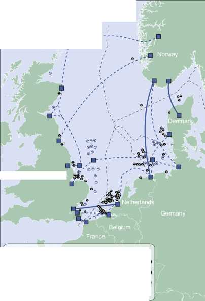
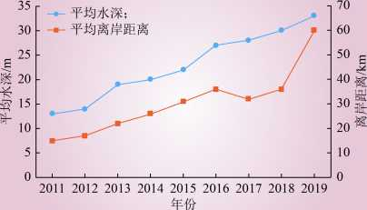

This article has been accepted for inclusion in a future issue of this journal. Content is final as presented, with the exception of pagination.
INVITED
PAPER
Offshore Wind Power
Generation Technologies
By Istvan Erlich, Senior Member IEEE, Fekadu Shewarega, Member IEEE, Christian Feltes, Student Member IEEE, Friedrich W. Koch, and Jens Fortmann, Member IEEE
ABSTRACT | This paper provides an overview of the current state of the technology of offshore wind-based power generation and the technological challenges with emphasis on the electrical parts. First, a brief review of the core control functions, their correlation with operational behavior, and the gridsupporting capability of the machine during normal operation as well as during contingency situations are provided. This is followed by the discussion of basic considerations in wind farm collector design, including topology, grounding options, and outlay of the offshore substation. Then, issues related to offshore turbine foundation and typical dimensions of the offshore substation platform are discussed. The platform is designed to accommodate the main and grounding transformers, the switch gear, and other assorted accessories. Next, options for the transmission link from the offshore plant to the grid onshore are reviewed. Finally, a discussion of issues related to grid integration together with currently applicable special grid code requirements concludes the paper.
KEYWORDS | Collector grid; fault ride through; grid codes; offshore wind power; platform; voltage support; wind generator
Manuscript received January 26, 2012； revised September 10, 2012； accepted October 2, 2012.
I. Erlich and F. Shewarega are with the University Duisburg Essen, 47057 Duisburg, Germany (e-mail: istvan.erlich@uni-due.de； fekadu.shewarega@uni-due.de).
C. Feltes and F. W. Koch are with RWE Innogy, 22297 Hamburg, Germany (e-mail: christian.feltes@rwe.com； friedrich.koch@rwe.com).
J. Fortmann is with REpower Systems AG, 22768 Rendsburg, Germany (e-mail: j.fortmann@repower.de).
Digital Object Identifier： 10.1109/JPROC.2012.2225591
Fig. 1. Evolution ofthe installed wind generation capacity in Germany.
I. INTRODUCTION
The rapid increase in installed wind generation capacity witnessed in the recent past has continued worldwide with undiminished vigor. This development is set to continue well into the future. By the end of 2010, the aggregate installed wind-based power generation in Germany reached 27 214 MW, and is projected to cross the 50-GW mark by 2020 [1]. Fig. 1 shows the progression of installed capacity over the last two decades.
Another remarkable development to be observed starting from the mid-1990s is the increasing interest to locate wind turbines in the high seas. Offshore wind resources are vast. The wind energy potential in the seas of the European Union with water depths of up to 50 m, for example, is easily several times larger than the total European electricity consumption. Consequently, in addition to the current large number of onshore sites, many offshore sites are in the planning or implementation stages. Offshore wind farm capacity in the North Sea and the Baltic Sea (off the northern coast of Europe) alone is expected to rise to 20-25 GW by 2030 [1].
Shewarega et al.： Offshore Wind Power Generation Technologies
2001 2202 2003 2004 2005 2006 2007 2008 2009 2010 2011
Fig. 2. Installed offshore wind power in the European Union.
Fig. 2 shows the evolution of offshore wind power capacity along the shores of countries in the European Union over the last decade. In the first six months of 2011, in total 101 new turbines with the overall capacity of 348.1 MW became operational, an increase of 4.5% compared to the same period last year [2]. In all, 11 sites were under construction during this period, with a total installed capacity of 2844 MW when completed.
Compared to the remarkably fast increase of onshore installations in the previous decade, these developments in terms of volume seem to be insignificant. But they are to be understood mostly as trial-balloon-type installations intended to gain insight into the operational challenges, and a significant increase in offshore capacity is already in the works. In Europe alone some 150 GW of offshore projects are already in various stages of planning [2]. According to [3], 25 offshore wind parks have already been approved outside the 12-nmi zone in the German areas of the North Sea and the Baltic Sea, and planning permission for further 50 projects has been applied for as of 2011. Other European countries also have firm plans for or have already started construction of offshore wind parks. Accordingly, offshore wind parks hold a huge promise for growth in the years ahead.
The basic technology and control concepts for a wind turbine are the same whether the turbine and its components are designed for offshore or onshore installation. The same applies to the overall process of layout design, which in both cases evaluates and compares configuration options in relation to the technical feasibility, overall capital cost, and the estimated energy production. However, the optimization parameters in offshore layout design, planning of the installation, and operational priorities vary significantly from those for onshore sites. For example, acoustic emissions which constitute an important consideration in onshore wind farm design are less relevant for the design of offshore projects. As a result, the turbine can be designed for higher tip speed ratio, thus enabling smaller turbine weight for the same energy output. On the other hand, offshore design places more emphasis on reliability since any necessary maintenance work is time consuming and constitutes a complex logistical operation involving the deployment of purpose-built ships and mobile gear. The vagaries of the high seas setting, which the components are exposed to, together with the operational objective of reduced maintenance requirement call for more robust material and equipment design and redundancy concepts compared to those used for conventional applications.
The evolution of offshore wind farm technology has come a long way from its early days in the 1990s. The turbines grew larger and are now capable of producing more energy per unit area. The costs of foundation and electrical infrastructure as well as the overall operational expenses have all decreased significantly. With the steadily maturing technology and the priority status accorded to renewable energy still remaining in place, there is a significant growth potential for offshore wind farms in the years ahead.
This paper intends to provide an overview of the overall technological challenges related to offshore wind-based power generation and the current state of the technology with emphasis on the electrical system and the associated control systems. The specific issues to be addressed include wind turbine technology with detailed overview of operational and control issues, wind farm collector grid design considerations, and finally issues related to grid integration together with currently applicable special grid code requirements.
II. WIND TURBINE GENERATORS
The generators employed in wind power plants are conceptually the same synchronous or asynchronous machines used for various other applications. As the generator is mounted at the top of the tower, the weight of a wind generator has much more significance than machines to be used for other applications. As a result, lower speed rating is desired so that the gear transmission ratio and thus the weight of the gearbox are as small as possible. It is also for the same reason that permanent magnet machines are continuously making headway in the share of the market. But with the cost of the raw material (rare earths) rising, it is not clear in which direction the development will evolve in the years ahead. Apart from these requirements pertaining to dimensions of the machine, what is new in modern megawatt range wind turbine generator systems is the application of frequency converters. Accordingly, the defining feature of wind-based generation plants is the arrangement of the converters used in conjunction with the machines and in case of offshore wind farms the location itself and the connection to shore.
The two most popular alternatives used for megawatt range turbines are the doubly-fed induction machine (DFIM) in which the stator terminals are directly connected to the network while a back-to-back frequency converter provides the controllable voltage to be fed to the rotor terminals, and a full-size converter machine (FSCM) in which a synchronous or squirrel-cage induction
Shewarega et al.： Offshore Wind Power Generation Technologies
Fig. 3. DFIM-based wind turbine with control variables.
machine is connected to the gird via a converter designed for the full turbine rating.
A. The Doubly Fed Induction Machine (DFIM)
The DFIM is still the most commonly encountered machine in modern large turbines, although this may change in the future. A typical layout of a DFIM system including the measured values for control and protection is shown in Fig. 3.
Since the back-to-back converter is connected to the rotor circuit, obviously it has to be rated only for the maximum rotor power, which in turn depends on the desired speed range (about ±30% around the synchronous speed). The so-called rotor crowbar is used to protect the machine side converter (MSC) against over-currents during abnormal system conditions. When a contingency situation causes crowbar switching, the rotor terminals are short-circuited through the crowbar resistors. The MSC itself remains blocked for the duration of crowbar activation. The flipside of this protective measure is that it causes the machine to resort to an ordinary singly-fed induction machine and thus to become uncontrollable. On the other hand, transmission system operators impose certain performance requirements (grid codes) on the wind turbine vis-a-vis their performance in grid operation both during and in the aftermath of the fault. Depending on the stringency of the applicable requirements, even a short-term loss of controllability can make fulfillment of these stipulations impossible [4]. To forestall crowbar ignition (and, thus, retain machine controllability for most fault scenarios), the current trend is to insert a chopper in parallel to the direct current (dc) capacitor, leaving the crowbar only as a backup protection. When the dc voltage exceeds a preset value, the chopper switches a resistor (in parallel to the capacitor) to limit the dc voltage thereby preempting the need for crowbar activation. A similar operational behavior can be achieved by using active crowbars in which—as opposed to thyristors used in ordinary crowbars——insulated gate bipolar transistor (IGBT) switches are used.
In multimegawatt machines, the wind turbine-generator system is typically connected to the grid via a three-winding transformer. The line side converter (LSC) is connected to the low-voltage side (< 1000 V) of the transformer, while the terminal connected to the stator of the machine can have voltage values of up to 6 kV. The arrangement (i.e., the use of lower voltage) reduces the cost of semiconductor devices/converters used.
B. Full-Size Converter Machine (FSCM)
The salient feature of the FSCM is that it is connected to the grid through a converter with the full machine rating. The generator to be used with the full-size converter can be of a squirrel-cage induction machine (SCIG) type or a synchronous machine. In case of the synchronous machine, there is the option of electrical or permanent magnet excitation. If the electrically excited synchronous machine is used, the MSC can be replaced by a more economical passive rectifier and the generator is controlled through a dc/dc converter providing the rotor excitation and another dc/dc converter in the dc circuit (between the back-to-back converters) [5]. In case of the permanent magnet synchronous generator (PMSG) and SCIG, the MSC is a fully controllable converter based on selfcommutated semiconductor devices.
FSCM-based wind turbines (WTs) contain a braking chopper in the dc circuit (similar to the DFIM) to dissipate the generated power during grid faults. The series inductor and the filter are required for harmonic suppression and power quality improvement.
III. WIND TURBINE CONTROL
The two core control functions in a wind turbine are the pitch-angle and converter controls [7]-[13]. A combination of the two enables variable speed operation over a wide range of wind speeds, which is essential for the efficiency of the aerodynamic energy conversion process in wind turbines (see Fig. 4). Additionally, the control and protection functions of the converter ultimately determine the operational behavior of the wind turbine in grid operation, not least its grid supporting capabilities during contingency situations.
A. Overview
Fig. 5 summarizes the major control tasks in a wind turbine/farm together with the inter-linkages between them. The nomenclatures of the variables used in the figure (respectively) are as follows: vt； vG； vGr； and vref are the turbine terminal, the turbine reference, the grid, and grid reference voltages, respectively; p； piim； pGlim； and pe
Shewarega et al.： Offshore Wind Power Generation Technologies
Fig. 4. Full size converter-based wind turbine with control variables.
are the turbine output power, the turbine power limit, the grid power limit, and the air-gap electrical power, respectively; q； qref ； and qGr are the machine output, the turbine reference, and the grid reference reactive power, respectively; iG ； iRr； and iRi are the grid current, the prescribed current (real part), and the prescribed current (imaginary part), respectively; VW； nG； nref； and 8 are the wind speed, the generator speed, the reference rotational speed, and the pitch angle, respectively.
The core control functions are contained in the block ‘‘turbine control,,, which receives the reactive power setpoint (or, alternatively, the voltage set-point) from the operational control of the wind turbine or wind farm in line with the requirements of the system. The aerodynamic, the drive train, the generator, and converter blocks represent the mathematical models, which usually are put together in the form of a system of equations. The turbine control and pitch control blocks are the subject of detailed discussion in the following sections.
B. Pitch-Angle Control and Tracking Characteristic
The objective of the pitch-angle control is to limit the output power of the wind turbine and speed to a specified maximum value, when the wind speed increases beyond the design value by pitching the turbine blades out of the wind. This action reduces the mechanical stress on the wind turbine and the drive train.
A wind turbine can extract the maximum possible power corresponding to a given wind speed (within the allowable operational range) only if it runs at a specific speed. This performance requirement is met by controlling the electromechanical generator torque across a wide range of wind speeds in such a way that the operating points approximately match the tracking characteristic of the turbine, i.e., the rotor speed corresponding to the maximum power for each of the wind speeds in Fig. 6.
Fig. 5. Outline of the overall wind turbine control structure.
Fig. 6. Tracking characteristic of a DFIM-based WT.
Shewarega et al.： Offshore Wind Power Generation Technologies
However, as can be observed in the figure, the practical generator speed control range is rather limited. For example, for multimegawatt wind turbines the range is from the power corresponding to the cut-in wind speed up to approximately 40% of the rated power.
With further increasing wind speed, the generator speed is maintained constant at its nominal value and the power is allowed to increase up to the nominal value. The margin between nominal and cutout wind speed is chosen large enough to avoid generator overspeed tripping due to strong wind gusts or in case of a grid fault. To limit the dynamic overshoot of the rotor speed, the torque is maintained constant above the nominal generator speed, leading to increased electrical power, which counteracts the mechanical acceleration of the turbine due to higher wind speed.
C. Converter Control
The frequency converter allows the control of active and reactive power independent of one another. While the reactive power control is dictated by the need to maintain acceptable voltage profile in the system, active power is determined by the primary source of energy——the wind speed. Variable speed operation of the wind turbine over a broad range of wind speeds is required so that the wind turbine extracts the maximum power from the wind. Accurate measurement of wind speed in the vicinity of the nacelle is difficult due to turbulence. As a result, measured power is used to determine the speed set-point using a lookup table in which the tracking characteristic of the turbine is stored.
The MSC and LSC controls in both the DFIM and the FCSM have distinct control tasks, which makes separate consideration of the two necessary.
1) MSC Control: Common to both the DFIM and the FSCM is the fact that the turbine speed control is responsible for regulating the turbine speed for maximum power generation in accordance with the tracking characteristic in part load mode (via the converter control) and limiting the power to the rated value during periods of high wind speed (via the pitch-angle control). Additionally, the reactive power output (or, alternatively, the power factor or voltage) is controlled in line with system requirements. In the DFIM, the outputs of the real and reactive power controllers are the rotor current set-points, which in turn are inputs to the underlying current controllers. The current controller then determines the rotor voltage to be generated by the MSC so that the control objectives are achieved. In the FSCM, the stator current set-points are generated by the power controller, which in turn adjusts the stator voltage.
2) LSC Control: The task of the LSC controller is to maintain the dc link voltage at the prescribed value and to support the grid with reactive current injection during grid faults and also in steady state if and when the need arises. In a rotating reference frame, in which the direct axis is aligned to the positive sequence terminal voltage, the direct (d) axis current corresponds to the active current, and the quadrature (q) axis current corresponds to the reactive current. It can be shown in some simple steps that the d-axis current can be used to control the dc voltage and the q-axis current can be used to control the reactive power independently of one another. The output of the dc voltage controller and the reactive current corresponding to the reactive power reference serve as reference values for the underlying current controller.
In the FSCM, the reactive power has to be provided in full by the LSC, whereas the DFIM offers the option of using both the LSC and the MSC to provide the reactive power during fault and also in steady state.
IV. ELEMENTS OF THE COLLECTOR SYSTEM
An offshore wind park, depending on its size, may contain a large number of turbines spread over an area of tens of square kilometers. Each turbine-generator set is directly connected to a step-up transformer, which is referred to as a turbine transformer. This transformer according to the current practice is connected Dyn (or Dynyn for the DFIM). Medium - voltage sea cables then link the turbine formations to the offshore substation. The platform additionally accommodates the compensation reactor, the standby diesel generator set, and the grounding transformer (see Figs. 7 and 8). In the following paragraphs, these components will be reviewed briefly.
A. A Standby Diesel Generator Set
Contingency situations can cause loss of connection to the grid onshore and force the offshore system into an island operation. Due to possible rough weather conditions, access to the site may be difficult and electricity supply interruptions for prolonged periods are possible. As
Fig. 7. Offshore substation platform Baltic 1.
Shewarega et al.： Offshore Wind Power Generation Technologies
Fig. 8. Offshore platform.
B. Medium-Voltage Compensation Reactors
The medium-voltage cable network can produce a sizeable charging current. In an island operation, this charging reactive power would need to be supplied by the auxiliary diesel set. With the capacitance values in the range of 0.2-0.4 〃F/km, the charging reactive power can easily exceed 6 Mvar. In order to be able to size the backup diesel generator set for the auxiliary load only, compensation reactors are placed at the platform bus. It is also possible to use STATCOM instead of reactors if the dynamic response of the wind turbine system is found to be unsatisfactory, in which case the STATCOM may take over the fulfillment of some of the performance requirements from the wind turbine control system. The advantage of fast response and the possibility of adequate reactive power generation even at very small voltages come at a cost of higher initial investment. The overall reliability of the system may also be affected adversely.
a result, offshore wind farms are equipped with diesel generator sets to cover the auxiliary load and to keep all essential equipment such as climate conditioners, control and safety systems operational during these periods. The loads are fed through the tertiary winding of the wind turbine transformer or directly from the medium-voltage system using a dedicated transformer [23].
C. Grounding Transformer
Commercially available standard wind turbine transformers are of Dyn5yn5 type [35], and the step-up transformer at the collector bus, as shown in Fig. 9, is delta connected on the 33-kV side. The necessary high level of reliability calls for the network to be effectively grounded [12]. Effective grounding offers the benefit of fast fault
Fig. 9. Wind farm collector system/double-sided ring configuration.
Shewarega et al.： Offshore Wind Power Generation Technologies
detection (in less than 150 ms) and the possibility of selectively clearing the fault, in addition to limiting the overvoltage in phases which are not directly affected by the fault. The fast fault clearing limits the thermal stress at the fault location from reaching dangerous levels. The unavailability of standard equipment for effective grounding necessitates the use of additional grounding transformers, which facilitate the fault detection capability of the protection system during single line to ground faults and limit the maximum voltages in the healthy phase. They are usually connected to the medium voltage (MV) collector buses and located on the main substation platform.
D. Medium-Voltage Cable Network
There are a number of options for the configuration of the cable links to the offshore substation at the platform [22]. The basic consideration involves striking the optimum balance between reliability on the one hand and the cost of for the collector network on the other hand.
1) Radial and Star Topology Options: The simplest arrangement for the collector system is the radial design in which a group of turbines are connected to a lateral feeder string. This arrangement enables the use of a simple protection concept, easier control possibility, and the shortest possible cable run. Since the current in the feeder away from the hub decreases, a tapered cable cross section—— with the largest at the hub end and the smallest at the farthest end of the feeder——can be used (thus reducing the overall cost of the cable). This topology was used for the 160-MW Horns Rev offshore wind farm in Denmark, which is the first large-scale offshore wind park [20]. The major drawback of this design is its poor voltage regulation and reduced reliability as cable or switchgear faults at the hub end of the radial string have the potential to force all downstream turbines out of operation.
Both the voltage regulation and reliability problems can be improved by using the star configuration [22]. In the star topology, each turbine within a group or formation is directly connected to the hub, as shown in Fig. 10, and, as a result, a single cable outage in general affects a single turbine alone. The disadvantage is the longer cable runs and the need for a higher rated cable for the short sections, which conduct the combined current of the formation to the hub. Another disadvantage is the complex switchgear arrangement at the center of the star.
Fig. 10. Wind farm collector system——star topology.
thus achieved at the expense of using more conductor material. In the double-sided loop, the basic configuration during normal operation remains radial. But the cable strings are equipped with provisions to convert the radial strings into a loop structure in contingency situations, as shown in Fig. 9, with the objective of keeping as many of the turbines as possible operational in the event of internal fault, thus addressing some of the system security issues arising from the radial design. The additional security comes at the expense of longer cable runs for a given number of wind turbines, and higher cable rating requirements throughout the string circuit.
In the example shown in Fig. 9, all 24 DFIM-based turbines have a rating of 6 MW and the generator transformers are Dyn5yn5 connected (although only two of the windings are shown in the figure for clarity). The turbines are grouped into two clusters. A 33-kV intrafarm cable network interconnects the turbines within each group to one another and then to the collector bus. Each section of the collector bus is connected to the two low-voltage terminals of the main three-winding transformer at the hub having the vector group Ynd5d5. A 155-kV submarine cable finally links up the wind farm to the grid onshore. The short circuit impedance across the two low-voltage terminals of the transformer is chosen relatively high to reduce the effect of internal faults in one part of the WF on the other unaffected part.
In [17], the topology of a wind farm consisting of 48 turbines (which is currently under construction) is given. The configuration of the collector system is almost identical with the one given in Fig. 9, which gives rise to the assumption that this topology represents the currently preferred option for an offshore wind farm. In both cases, the voltage level of the collector network is 33 kV. Typical cables in use are 240-, 630-, and 800-mm1 aluminium cables [17]. The cable cross section is reduced toward the end of a string, with the section to the first wind turbine generator (from the hub) being 800 mm1, to the second and third 630 mm1, and the last three cable sections 240 mm1, and the power rating of the string is approximately 22 MW.
Shewarega et al.： Offshore Wind Power Generation Technologies
The 155/33-kV transformer has a relatively small voltage control range, for example, ±13% in ±6 steps. As a result, the number of voltage regulation steps is limited.
E. The Protection System
An offshore wind park is obviously designed for unmanned operation, and all operational control functions are performed from a distance in an onshore location. Access to the site for a routine maintenance or emergency repair following a fault can take a long time. As an example, it is stated in [17] that access to the platform takes at least 2 h from the nearest island, 4-5 h from onshore under best weather conditions, and possibly several days in the worst case scenario. The costs arising from the level of complexity of the protection, therefore, need to be weighed against the effort it takes to access the fault location for manual intervention. The protection system, therefore, has to take this and a number of other salient features of an offshore wind park into consideration, in addition to being grid code compliant [14].
In the example shown in Fig. 9, each wind turbine generator-transformer set (WTG) is equipped with three remote controlled breakers (circuit breaker, disconnector, and earthing switch combination)——one breaker for the transformer and two breakers for the incoming and outgoing cable feeders. In case of cable fault, the section between the two transformers affected by the fault can be isolated and the rest of the system can operate normally via the ring connection at each end of a string. This leads to a flexible control and protection concept.
The protection concept presented here is based on [17], in which the protection system of 295-MW offshore wind park in the North Sea to be commissioned in 2013 is discussed.
The various protection and control devices at the different bays and transformers are connected in a ring configuration via optical fiber cables to a centralized control unit, and the communication between the different protection devices is based on the International Electrotechnical Commission (IEC) 61850 protocol. In this implementation, combined protection and control devices are used for the medium-voltage switchgears, and for the high-voltage switchgears, separate devices are used for each of the functionalities. All switching operations can be performed locally or remotely from an onshore location. These measures in combination are designed to reduce the downtimes and to guarantee the highest possible availability. The secure communication also allows a Generic Object Oriented Substation Events (GOOSE) transfer between the WTGs to enable certain functionalities/interlocks, and the downloading of the protection device status via the IEC 61850 protocol from onshore in case of a trip or maintenance.
The protection system types for the components of the wind park are as follows. The WTG transformer bus bars have a differential protection, while the transformers themselves are protected by overcurrent relays. All medium-voltage cables have a differential protection as the main protection and the distance protection as a backup protection. The compensation reactors connected to the 33-kV bus are equipped with the overcurrent protection, and the same applies to the 33/0.4-kV auxiliary transformer. The earthing transformer connected to the 33-kV bus has the overcurrent protection together with the earth-fault protection at its star point. The 33-kV bus bars are fitted with the bus bar protection with a separate field unit for each bus bar bay and one central unit for all bus bar segments with an integrated switch failure protection and an overcurrent protection. The high- and low-voltage windings of the main transformer have different protection schemes. While a differential protection is used on the high-voltage side with an integrated over current protection and control function, the distance protection with control function is used on the low-voltage side and the Buchholz protection as a backup. Finally, the distance protection with control function is used for the export cable linking the platform to the grid onshore.
F. Offshore Foundation and Platform
Offshore foundation and platform designs draw on the high seas experiences of the oil and gas industry. However, increasing interest on offshore wind power in the recent past and the resources available now for research mean that the technology is evolving on its own terms.
1) Foundation: The most common foundation types in use in the German waters as of now are the jacket and tripod foundations, but other types, particularly gravity foundations, can also be expected in the future [24].
The jacket construction is already established in the oil industry. Its foundation is based on a steel pipe support structure with special casts on its junction points [26]. The frame of a jacket is similar to the electricity pylon, and standard steel pipes from the pipeline construction industry can be used for the jacket, which is pinned to the sea bed with piles. The transition junctions connect the square jacket foundation with the round tubular steel tower of the turbine. Since the individual components are relatively small, its production, transportation, and installation are easy. One disadvantage is the need for a remote collision protection.
In the tripod design, a three-legged steel frame supports the main pile under water (see Fig. 11). The three legs of the tripod are pinned to the sea bed with three smaller piles hammered into the sea bed with the depth depending on soil conditions. This technology is deemed to be more suitable for higher water depths. The tripod foundation is not suitable for use on a stony sea bed.
In a gravity foundation, the turbine is supported by a big concrete block similar to those used in bridge foundations. Gravity foundations have been used at some
Shewarega et al.： Offshore Wind Power Generation Technologies
Fig. 11. A barge carrying tripod foundations being towed into position.
European wind farms for water depths of up to 10 m [3]. Cost reductions have been achieved by using different shapes. One advantage of this technology is that it is independent of steel price fluctuations. Therefore, it is likely that gravity foundations will find more and more use in deeper waters in the future.
2) Offshore Substation Platform: Except for rare cases in which the distance to onshore is short, transportation of power to the grid connection point requires a high voltage and thus an offshore substation. As with the other offshore assets, size and weight are crucial design considerations. Additionally, limited accessibility and harsh environment mean that design approaches and redundancy concepts new to the power industry are required.
The platform is a massive structure that accommodates the main transformer, the compensation reactors, the high- and medium-voltage switch gears, the grounding transformer, and the standby diesel generator set. In terms of weight and size, obviously the transformer is the major component. To illustrate the magnitudes involved, the following is the data from a 300-MVA platform: weight of the platform foundation: 800 T, the combined weight of the structure and equipment above water: 2000 T, of which the weight of the steel structure alone is 950 T. In a new compact offshore substation, using gas-insulated transformers is introduced. The most significant design change is the elimination of insulation oil. A prototype offshore substation built around two gas-insulated (SF6) transformers with a combined power rating of 360 MVA is introduced in the above-referenced material. By eliminating the oil and with it the auxiliary systems such as oil tank, it is reported that significant reduction in the weight of the transformer can be achieved.
V. THE TRANSMISSION LINK TO THE GRID ONSHORE
For the transmission of power from the offshore plant to the grid connection point, choice is to be made between high-voltage alternating current (HVAC) and high-voltage direct current (HVDC) based on line commutated converter (HVDC LCC), or voltage source-based HVDC (HVDC VSC) as part of the overall project planning process.
Alternating current (ac) connections are based on well-known and tested transmission and distribution equipment. However, the possible transmission voltage level is constrained by the charging current. There are also other limiting operational factors. For example, in [21], it is recommended that, in addition to the maximum permissible current, voltage regulation at the receiving end between no-load and full load should remain less than 10% and the phase-angle difference between receiving- and sending-end voltages should not exceed 30°. This limits ac interconnection through submarine cables to transmission voltages of up to 155 kV and a transmission length of up to approximately 100 km with compensation reactors in both ends. Cables of 245 kV are also available but are as of yet not in use.
As stated above, the charging reactive power is considered the main limiting factor in HVAC cable utilization in long-distance transmissions. The reactive power generated by the cables is compensated using shunt reactors connected directly to both ends of the cable. To avoid any unintentional connection of the cables without the compensation reactors, both cables and reactors are switched concurrently using the same switch. The reactor on the onshore side is continuously adjustable up to the full compensation (100%) of the charging current (the onshore side is chosen for control on grounds of ease of operation). But partial compensation offers a control capability using the remaining capacitive current. The maximum value of the current after compensation should not exceed the interrupting capability of the circuit breaker, which is relatively small and the charging current alone can under circumstances exceed this value.
HVDC transmission is likely to be the preferred option for future offshore wind farms. Conventional HVDC transmission using line-commutated thyristor valves has higher power rating and is capable of very high transmission voltage. It is also characterized by higher transmission efficiency. Due to the low degree of controllability, lack of
Shewarega et al.： Offshore Wind Power Generation Technologies
Fig. 12. WF topology with VSC-based HVDC transmission.
black start capability and the converter,s reactive power consumption, however, weak networks cannot be connected to this system.
VSC-based HVDC transmission, using self-commutated valves [IGBTs, integrated gate-commutated thyristors (IGCTs), and gate turn-offs (GTOs)], on the other hand, is available only for lower transmission voltage levels and power ratings. It is more expensive and has higher losses, which are related to the switching behavior and frequency of the self-commutated devices. However, there are also some significant advantages, which make it very suitable for the connection of large offshore wind farms, such as fast control of active and reactive power independently from one another, capability to support the system in major contingencies, black start capability, possibility of connection to weak or even passive networks, capability to reverse the power flow direction almost instantaneously, etc. Additionally, new soft-switching methods and higher level topologies for VSC-based HVDC can significantly reduce the converter losses and make this kind of transmission more economical and reliable. Fig. 12 shows a possible arrangement for an offshore wind farm link to the onshore grid using HVDC and Fig. 13 using HVAC.
VI. EXAMPLES OF OFFSHORE
WIND FARMS
A. The Offshore Wind Plant Alpha Ventus
The wind park Alpha Ventus [25] is the first ever to be installed in Germany. It is located off the northern coast within the exclusive economic zone of Germany, and designated as a pilot project primarily intended for research purposes. The wind farm contains 12 turbines in all, each with a power rating of 5 MW, and is operated by a com-
Fig. 13. Offshore WF link using ac cable.
Fig. 14. Partial view of the Alpha Ventus offshore wind park site.
pany called Offshore Test Field and Infrastructure, which is established as a joint venture by the power companies EWE AG (47.5% share) and E.ON Climate & Renewables GmbH and Vattenfall Europe New Energy GmbH (each with 26.25% share).
Two types of turbines are installed: Multibrid M5000 (from AREVA Wind, Bremerhaven, Germany) and REpower 5 M (from Repower Systems SE, Hamburg, Germany) (see Fig. 14). The Multibrid turbine M5000 has the following data: hub height 85 m (above water surface), rotor diameter 116 m, cut-in wind speed 3.5 m/s, cutout wind speed 25 m/s, and rated power at or above 12.5 m/s wind speed. The gross weight of the nacelle including the wind rotors is 309 T, and the foundation, tower, and hub turbine platform together weigh about 1000 T. The substructure is designed for a life span of 60 years.
The characteristic data of the REpower turbines is as follows. The rotor diameter and the hub height are 126 and 92 m, respectively. The turbines are installed on a prefabricated jacket basement. The height of the jacket basement is 57 m, weighs about 320 T, and occupies an area of 17 m X 17 m at its base.
The turbines in the wind farm are clustered into groups of three to be connected to a transformer which steps up the voltage to 30 kV. A collector network then links all turbines to an offshore platform Alpha Ventus, which steps up the voltage to 110 kV, from which a 70-km-long submarine cable links the wind farm to the grid onshore.
Whereas the AREVA wind turbines stand on tripods, the REpower turbines are mounted on jacket foundations with a water depth of 30 m [21].
Shewarega et al.： Offshore Wind Power Generation Technologies
Fig. 15. Location ofthe HelWin cluster in the North Sea [28].
B. The HelWin Cluster in the North Sea
The HelWin North Sea cluster is a name given to a group of offshore wind parks currently under construction. The project site is located in the German exclusive economic zone in the North Sea at a distance of about 55 km from the mainland, 35 km north of the island of Helgoland, and 37 km west of the North Frisian island of Amrum (see Fig. 15). The wind farms North Sea East, Amrumbank West, and Meerwind make up the cluster.
One of the sites, the North Sea East (NSE), contains in all 48 REpower 6-M wind turbines spread over an area of 24 km2, with the overall installed capacity of 295 MW. The water depth ranges from 22 to 25 m. The site is scheduled to become operational in 2013. The 48 wind turbines are connected with each other using 33-kV interarray cables linking them to the substation. The substation platform weighs approximately 2100 T, and is mounted on a steel structure as a foundation which protrudes approximately 37 m above the sea level. The tower of the wind turbines has a length of70 m above the water level. The weights of the tower and the nacelle are 243 and 350 T, respectively. The turbine swept area has a diameter of 126 m, and the three rotor blades together weigh 125 T. Jacket foundations have been used also for the turbines, and the four pedestals are anchored with the sea bed using piles. Each of these foundations has up to 50-m height, weighs approximately 550 T, and the foundation pedestals occupy an area of almost 400 m2.
The other site in the cluster, offshore wind park Amrumbank West, is owned by Amrumbank West GmbH, a fully owned subsidiary of E.ON AG. In this site, in all, 80 Siemens 3.6-MW 120 wind turbines are to be installed over an area of 32 km2. The site is scheduled to start operation in 2015. The third site in the HelWin cluster is the Meerwind, which launched the project activities in August 2011. When completed, the site will have 80 Siemens 3.6-MW 120 wind turbines installed with the overall capacity of 288 MW. The Siemens turbines use monopile foundation. According to the current schedule the site is to be commissioned in 2013.
Connection to the main grid for all sites will be undertaken by the grid operator Tennet TSO GmbH, which awarded the contract for the construction of the link to onshore to Siemens. Siemens is responsible for turnkey supply of the fully equipped floating and self-erecting platform [30].
As stated above, the 33-kV medium-voltage cables converge on to the substation of each of the sites. The voltage is then stepped up to a transport voltage level of 155 kV, and from there ac cables link up the substation to the offshore converter platform, on which the Siemens HVDC Plus system for high-voltage direct-current (HVDC) transmission is installed. The first of the converter platforms to be completed is Helwin Alpha, which serves as a converter station for North Sea East Wind Park, and the second converter platform is Helwin Beta built for Amrumbank West.
In the converter stations, the 155-kV ac voltage will be stepped up and converted into dc using Siemens HVDC Plus system. The power will then be transmitted at a voltage of ±320 kV via submarine high-voltage cables from the feed-in point on the platform to the grid connection point in Buttel, northwest of the city of Hamburg, located at a distance of over 130 km. A special feature of the HelWin Beta offshore converter platform is that it will be connected via a bridge to its parent platform HelWin Alpha to allow
Shewarega et al.： Offshore Wind Power Generation Technologies
Fig. 16. German Transmission Code fault ride through requirement.
shared use of the helicopter deck and crew quarters. There will also be an ac cable link to the bus bar of the platform's 155-kV switchgear and a link to the emergency power system. The HVDC VSC grid connection has a rating of 690 MW and is scheduled to be operational by 2015.
VII. GRID INTEGRATION AND GRID CODE REQUIREMENTS
As a result of the rapid increase in renewable-based electricity generation, a number of transmission system operators issued grid codes imposing specific requirements concerning grid support during steady-state operation as well as grid faults [15], [16]. First among these requirements is one which stipulates that wind turbines have to remain connected during fault and provide support.
Fig. 16 summarizes the requirement by the German E. ON Transmission Code. In the region marked "1" tripping is not allowed at all. A Short-Term soft Interruption (STI; e.g., converter blocking due to overcurrent) is permitted in region 2, if this is required by the generator concept and a resynchronization within a certain time can be guaranteed. Additionally, the provision of reactive power by the LSC or other equipment has to be ensured during the interruption. In area 3, an STI is allowed for all types of power generation units and the resynchronization time can be higher than 2 s. Even in area 4, the units have to stay connected and can only be tripped by the higher level supervisory grid protection (Safeguard II).
During grid faults the reactive current control of the wind turbines must be utilized to support the grid voltage. Modern protection devices clear the fault normally in a range of 100-150 ms or less following a fault. However, this time window may be decisive for the stability of the grid and, consequently, for the whole system. The new German renewable energy law includes new regulations concerning ancillary services by specifying the reactive current to be injected into the system depending on the voltage deviation. Fig. 17 shows the required reactive current injection as a function of time for a step voltage dip of 50%. In addition to the dynamic response, as specified in
p 110刀>§waurl。©>*8£ .E>p u£e>ep efoA
time in s
Fig. 17. Voltage support requirements as per German renewable energy law.
Shewarega et al.： Offshore Wind Power Generation Technologies
-50%
Dead band around reference voltage
Additional reactive current
Continuation of voltage control after return into dead zone at least about 500 ms
Reactive_current/voltage gain: k=AlQ/AU > 2.0 p.u.
Within dead band, e.g. const, power factor control
Voltage AU/UN
Rise time < 20 ms
Fig. 18. Reactive current injection as a function of voltage deviation.
Voltage limitation / Activation of voltage control (under-excited mode) by exceeding dead band
Voltage support (over-excited mode)
Control characteristics
Maximum available reactive current lQ max = lN
Fig. 17, the absolute value of the reactive current as a function of the voltage dip (as per Fig. 18) must be fulfilled. Compliance with these provisions of the grid code must be certified before wind turbines are allowed to connect to the grid.
VIII. CONCLUSION
Offshore wind farm technology has experienced a major transformation in terms of both the level of installed capacity and the technological maturity. All indications are that there is a further significant growth potential in the years ahead. In this paper, the current state of the technology and the major challenges faced by the industry with emphasis on turbine control, the collector network, and the transmission link to the grid onshore have been surveyed.
Alternative topologies for the collector network, standard transformer types for the generator, the main substation at the collector bus, and options for reactive power compensation both at medium- and high-voltage levels have been discussed. If instead of the more common radial
REFERENCES
[1] Bundesverband WindEnergie (BWE). [Online]. Available: http://www. wind-energie.de/
[2] European Wind Energy Association (EWEA).
[Online]. Available: http://www.ewea.org/ index.php?id=203
[3] Deutsche Energie-Agentur (DENA). [Online].
Available: http://www.offshore-wind.de/ page/index.php?id=12187&L=1
[4] C. Feltes, H. Wrede, and I. Erlich, ‘'Dynamic behaviour of DFIG-based wind turbines connection a loop structure for the wind farm collector network is used, some of the turbines can be kept operational in the event of internal faults. However, the design and coordination of the protection system against internal faults becomes more challenging.
during grid faults,’’ IEEJ Trans. Ind. Appl., vol. 128, no. 4, pp. 396-401, 2008.
[5] C. Feltes, S. Engelhardt, J. Kretschmann, J. Fortmann, F. Koch, and I. Erlich, ‘‘High voltage ride-through of DFIG-based wind turbines,’’ in Proc. IEEE Power Energy Soc. General Meeting, Jul. 20-24, 2008, DOI: 10. 1109/PES.2008.4596803.
[6] I. Arana, A. Hernandez, G. Thumm, and J. Holboell, ‘‘Energization of wind turbine transformers with an auxiliary generator in a large offshore wind farm during islanded
The design of offshore foundations both for the turbine and the platform together with the choice of the material used for the support structure has been reviewed. The dimensions involved in the design of the platform which accommodates the main transformer, the compensation reactors, and other equipment, have been illustrated using data from practical applications.
Comparison of the various transmission options for linking up the offshore wind farm to the grid onshore was the next issue of interest. AC connections are the most commonly used interconnection method for offshore wind parks at this point in time. However, the constraints regarding the transmission voltage level may tilt the choice in favor of HVDC in the future. The paper finally concludes by discussing the grid code requirements which the wind farms are required to fulfill both in steady state and during a contingency. ■
operation,’’ IEEE Trans. Power Delivery, vol. 26, no. 4, pp. 2792-2800, Oct. 2011.
[7] I. Erlich, J. Kretschmann,
S. Muller-Engelhardt, F. Koch, and
J. Fortmann, ‘'Modeling of wind turbines based on doubly-fed induction generators for power system stability studies,,, in Proc. IEEE Power Energy Soc. General Meeting, Pittsburgh, PA, Jul. 2008, DOI: 10.1109/PES.2008.
4596271.
[8] R. Pena, J. C. Clare, and G. M. Asher, ‘‘Doubly fed induction generator using back-to-back PWM converters and its application to
I Journal of
^0/^^^ Marine Science and Engineering
Offshore Wind Power Integration into Future Power Systems: Overview and Trends
Ana Fernandez-Guillamon 1,+©z Kaushik Das 2,+© and Nicolaos A. Cutululis 2,+ and Angel Molina-Garcia 1,+z*©
1 Department of Electrical Eng, Universidad Politecnica de Cartagena, 30202 Cartagena, Spain; ana.fernandez@upct.es
2 Department of Wind Energy, Technical University of Denmark, 4000 Roskilde, Denmark; kdas@dtu.dk (K.D.); niac@dtu.dk (N.A.C.)
* Correspondence: angel.molina@upct.es; Tel.: +34-968-32-5462 十 These authors contributed equally to this work.
©check for updates
Abstract: Nowadays, wind is considered as a remarkable renewable energy source to be implemented in power systems. Most wind power plant experiences have been based on onshore installations, as they are considered as a mature technological solution by the electricity sector. However, future power scenarios and roadmaps promote offshore power plants as an alternative and additional power generation source, especially in some regions such as the North and Baltic seas. According to this framework, the present paper discusses and reviews trends and perspectives of offshore wind power plants for massive offshore wind power integration into future power systems. Different offshore trends, including turbine capacity, wind power plant capacity as well as water depth and distance from the shore, are discussed. In addition, electrical transmission high voltage alternating current (HVAC) and high voltage direct current (HVDC) solutions are described by considering the advantages and technical limitations of these alternatives. Several future advancements focused on increasing the offshore wind energy capacity currently under analysis are also included in the paper.
Keywords: offshore wind energy; HVAC; HVDC; P2X; hydrogen storage; CAES
Energy demand has been increasing non-stop during the last decades [1]. Nowadays, fossil fuel sources (i.e., coal, oil and natural gas) provide around 85% of the world energy demand, according to the BP Energy Outlook of 2019 [2]. However, with the Paris climate agreement established in December 2015, this energy scenario is about to change [3]. This climate agreement aims to restrict maximum increase in the global average temperature below 2 ℃ above pre-industrial levels [4]. To fulfill this goal, greenhouse gas (GHG) emission trends should drastically change [5]. Consequently, the use of fossil fuels should be reduced, as they are considered as the main source of GHG emissions [6]. Actually, global GHG emissions are dominated by the emissions of CO2 due to the combustion of fossil fuels, which has been increasing continuously since 1990 [7]. The power sector should be decarbonized by 2050 to meet the Paris agreement target [8]. Furthermore, Liddle and Sadorsky estimated that increasing by 1% the share of non-fossil fuel electricity generation can reduce by up to 0.82% the CO2 emissions [9]. This environmental worry is one of the reasons to promote the integration of renewable energy sources (RES) into power systems [10]. Moreover, RES can also mitigate the energy dependence on fossil fuels imported from other countries [11]. Apart from the economic costs of these fossil fuel imports, decreasing energy dependence increases electricity supply security [12]. The International Energy Agency defines electricity supply security as the uninterrupted availability
of energy sources at an affordable price [13]. However, political stability, market liberalization and foreign affairs are nowadays linked to energy supply security [14]. As a consequence, it is important to be energy-independent to guarantee the energy security of a country [15].
While RES provide an acceptable solution for these two problems, they also face many challenges as their integration increases into the grids, mostly based on their intermittency, variability and uncertainty due to their dependency on weather conditions [16]. Actually, they are usually considered as ‘non-dispatchable’ sources [17]. This fact makes them hard to integrate into power systems [18], as transmission system operators (TSOs) have to deal with not only the uncontrollable demand but also uncontrollable generation [19,20]. RES include bioenergy, geothermal energy, hydropower, ocean energy (tide and wave), PV, thermal solar energy and wind energy (onshore and offshore) [21]. Some of them (such as wind and solar installations) are connected to the grid through power electronic converters, reducing the rotational inertia of the system as they replace conventional generation units [22,23]. This fact compromises the frequency stability and alters the transient response [24]. As a result, several frequency control strategies have been proposed in the specific literature [25-30]. Other alternatives to increase the RES share in power systems and avoid the aforementioned problems are to complement one source with another (for instance, wind with solar and/or hydropower) [31-33] or to use storage systems (such as flywheels, pumped hydroelectric storage, batteries, hydrogen, etc.) [34,35].
Among these renewable technologies, wind is one of the most economic, prominent and matured RES technologies [36,37]. In fact, since 2001, global cumulative installed wind capacity has shown an exponential growth, as can be seen in Figure 1a. Among the total wind capacity, 23 GW came from offshore installations in 2018, compared to 1 GW in 2007, refer to Figure 1b [38]. Despite offshore wind energy dating back to the 1990s, its popularity started around ten years ago [39]. This increase is due to the current interest of the wind energy industry in offshore wind power [40]. For instance, offshore wind energy investments surpassed onshore investments in Europe in 2016, as presented in [41]. Moreover, nearly 40% of the total wind capacity is expected to come from offshore wind energy in Europe in 2030 [42,43].
In addition, offshore wind energy presents many advantages compared to onshore wind power plants, especially related to wind energy potential [44,45]: (i) Offshore mean wind speeds are higher and wind power variability is also lower than onshore wind power; (ii) their visual and acoustic impact is usually lower than onshore; subsequently (iii) larger wind turbines (WTs) can be installed [46]. Actually, on the European coasts, the available offshore wind energy is about 350 GW [47]; the USA’s shores present an offshore wind power potential of more than 2000 GW [48]; the offshore wind resource in China is about 500 GW in water depth under 50 m [49]; and the east and west Indian coasts have an offshore wind potential of 4.4 GW and 6.7 GW, respectively [50].
Furthermore, offshore wind speed usually increases with distance from the shore, thus increasing the power generated, as it depends on the cube of the wind speed [51]. However, higher installation and maintenance costs of offshore wind power plants (OWPP) far from the shore balance the benefits of higher energy production [52]. Indeed, OWPP are around 50% more expensive than onshore wind power plants [53], but their costs are expected to decline up to 35% by 2025 [54]. The global weighted average levelized cost of energy (LCOE) in 2018 was 20% lower than in 2010. These cost reductions can be a result of [55]:
• The evolution in wind turbine technology, installation and logistics
• The economies of scale in operations and maintenance
• The improved capacity factors due to higher hub heights, better wind resources and larger rotor diameters
This paper analyzes and reviews different aspects of offshore wind power plants, including several future alternatives to increase the offshore wind power capacity. The rest of the paper is organized as follows: Section 2 presents the current status of offshore wind power plants (WTs and OWPP sizes,
water depth, distance from shore and electrical transmission to shore). Future advancements possible for larger offshore wind power plant integration are analyzed in Section 3. Finally, Section 4 gives the conclusions.
(M°)-loBdB。PHM P-IB+SH OA--nrnn。
25
20
15
10
5
Figure 1. Global cumulative wind capacity in GW. (a) Global cumulative wind capacity: Onshore and offshore. (b) Global cumulative offshore wind capacity.
WTs are usually classified as fixed speed wind turbines (FSWTs) and variable speed wind turbines (VSWTs) [56]. FSWTs work at the same rotational speed regardless of the wind speed [57]. VSWTs can operate around their optimum power point for each wind speed, using a partial or full additional power converter [58]. As a result, VSWTs are more efficient than FSWTs [59]. Moreover, WTs present different topologies depending on their generator [60]: type 1 includes a squirrel cage induction generator; type 2 includes a wound rotor induction generator; type 3 includes a doubly-fed induction generator (DFIG); and type 4 includes a full-converter synchronous generator [61]. Types 1 and 2 are FSWTs, whereas types 3 and 4 are VSWTs.
Nowadays, VSWTs are the most commonly installed WTs [62-65]. Among them, full converter generator WTs seem to be a better option than DFIG-based WTs for OWPP [66-72]. The main differences between DFIG and full-converter WTs are the following:
The DFIG configuration needs a gearbox, generator and partial-scale power converter (around 30%), as shown in Figure 2a. The gearbox couples the blades with the generator, increasing the rotational speed from the rotor hub to the induction machine [73-75]. The stator is directly connected to the grid, whereas the rotor is connected to the power converter [76]. As a result, the converter only covers the power produced by the rotor of the DFIG [77].
The synchronous generator of a full-converter WT is excited by an external DC source or by permanent magnets [78]. In this case, the hole generator is connected to the grid through a power converter [79]. Hence, all the generated power from a WT can be regulated accordingly [80]. They have low maintenance costs and negligible rotor losses [81]. Moreover, some type 4 WTs have no gearbox, as depicted with a dotted line in Figure 2b, using a direct driven multipole generator [82].
(a)
(b)
Figure 2. Variable speed wind turbines types. (a) Doubly-fed induction generator (DFIG) wind turbine. (b) Full-converter wind turbine.
2.2. Offshore Trends： Turbine Capacity, Wind Power Plant Capacity, Depth and Distancefrom the Shore
In Europe, the rated capacity of offshore WTs has been continuously increasing during the last decade. For instance, in 2017, the average rated capacity of WTs was 5.9 MW, compared to 3 MW in 2010 and 4.8 MW in 2016 [83]. In 2018, new offshore WTs were 6.8 MW on average, 15% larger than in 2017. Comparing 2018 to 2010, the average WT increase is more than 200%. Moreover, two 8.8 MW offshore WTs were installed in the United Kingdom in 2018, those being the largest WTs installed of the world. The commercial model of those WTs was V164-8.8 MW from MHI Vestas Offshore [84]. However, nowadays there are larger commercial offshore WTs, up to 12 MW, as presented in [85]. Table 1 shows the 10 largest WTs currently available. All of them have a rated power over 8 MW, rotor diameters between 150 and 200 m and are equipped with synchronous generators (type 4).
Table 1. Biggest wind turbines currently available.
|
Rated Power (MW) |
Manufacturer |
Reference |
Diameter (m) |
Generator |
|
8.0 |
Siemens Gamesa |
SG 8.0-167 DD |
167 |
Synchronous permanent |
|
8.3 |
MHI Vestas Offshore |
V164-8.3 MW |
164 |
Synchronous permanent |
|
8.8 |
MHI Vestas Offshore |
V164-8.8 MW |
164 |
Synchronous permanent |
|
9.0 |
MHI Vestas Offshore |
V164-9.0 MW |
164 |
Synchronous permanent |
|
9.5 |
MHI Vestas Offshore |
V164-9.5 MW |
164 |
Permanent magnet |
|
10.0 |
AMSC |
wt10000dd SeaTitan |
190 |
HTS synchronous |
|
10.0 |
MHI Vestas Offshore |
V164-10.0MW |
164 |
Permanent magnet |
|
YZ150/10.0 |
150 | |||
|
10.0 |
Swiss Electric |
YZ170/10.0 |
170 |
Synchronous permanent |
|
YZ190/10.0 |
190 | |||
|
10.0 |
Siemens Gamesa |
SG 10.0-193 DD |
193 |
Synchronous permanent |
|
12.0 |
General Electric |
GE HALIADE-X |
220 |
Synchronous permanent |
Regarding OWPP capacity, it has also increased dramatically in the last 10 years (around 700%), in line with the increase of average offshore WT capacity. In fact, average OWPP capacity was 79.6 MW in 2007. In contrast, 561 MW was the average capacity for OWPPs in 2018 [84]. This means that considering the average WT and OWPP capacities of the year 2018, each OWPP has between 80 and 85 WTs. On the other hand, OWPP depth and distance to the shore have not increased that much in recent years. At the end of 2013, the average water depth of OWPPs was 16 m with an average distance to the shore of 29 km [86]. In 2018, the average water depth of OWPPs under construction was 27.1 m, with an average distance to shore of 33 km. This means that water depth has increased by 170% and distance to shore by around 110%. There are some OWPPs that should be mentioned: Hornsea One (UK) and EnBW Hohe See (Germany) are the OWPPs located farthest from the shore (103 km away); Kincardine Pilot (Scotland), a floating demonstration project, has a water depth of 77 m [84]; and Hywind (Scotland), the first fully operational floating wind farm, with water depths varying between 95 and 129 m [87].
2.3. Offshore Wind Power Electrical Power Transmission
For the electrical power transmission from the OWPP plant to the shore, there are two possibilities: (i) High voltage alternating current (HVAC) and (ii) high voltage direct current (HVDC). Figure 3 depicts an overview of the current state of offshore wind power energy transmission to the shore.
(HVAC
(lcC HVDcJ VSC
(DRU
Figure 3. Offshore wind power plant transmission.
2.3.1. High Voltage AC
HVAC transmissions were mostly used for OWPPs until the year 2010 [88]. Their easy protection system design and the use of transformers to change between different voltage levels were the main reasons to use them [89]. However, the high capacitance of submarine HVAC cables combined with the low resistivity of sea water caused different electromagnetic dynamic and transient problems from those of conventional overhead lines, such as distortion of the voltage’s shape due to resonance problems [90,91]. This high capacitance also leads to substantial charging currents, subsequently reducing the active power transmission capacity and transmitting reactive power in long distances [92]. A possible solution could be to install reactive power compensation units along the HVAC submarine cables, but they are expensive devices and it is a difficult task to carry out [93]. an alternative found in the literature is to add compensation units only at both ends (onshore and offshore) of the underwater cables, which improve the current profile along them [94,95]. However, their effect is very limited for distances over 60-75 km [96,97]. With the aforementioned considerations, the topology for HVAC transmission from OWPPs is depicted in Figure 4 [98,99]. It consists of:
• An offshore substation to increase the offshore voltage level (usually from 30-36 kV) to the transmission voltage level at 132-400 kV.
• Three-core HVAC submarine transmission cables.
• Reactive compensation units on both ends (offshore and onshore), such as static VAR compensators (SVCs) or static synchronous compensators (STATCOMs).
• An onshore substation, if the onshore interconnecting grid voltage is different from the offshore transmission system rated voltage.
Shore line
HV transformer & compensation HV transformer & compensation
Figure 4. Offshore wind power plant high voltage alternating current (HVAC) transmission system.
As can be seen, the OWPP grid is synchronously coupled to the main onshore grid. This is another problem of HVAC links for OWPPs, as all faults in either the grid or the OWPP are propagated to the other one [100].
2.3.2. High Voltage DC
High voltage direct current (HVDC) transmission is considered as the best solution to OWPPs located far away from the land [101]. Actually, some studies conclude that HVDC links are economically viable for distances above 50-70 km [102]. A graphical comparison of costs between HVAC and HVDC transmission systems can be seen in Figure 5 [103].
Figure 5. AC and DC system costs based on the transmission distances.
Figure 6 shows the main elements of an HVDC connection, and consists of [104,105]:
• An offshore substation to increase the voltage level to the level of the transmission line.
• AC/DC rectifier.
• AC and DC filters to cancel the low order harmonics. Furthermore, the AC filters supply some of the reactive power used by the converter, whereas the DC filters avoid the generation of circulating AC currents in the cable.
• DC current filtering reactance. This removes the possibility of a current interruption under minimum load circumstances, limiting DC fault currents and also reducing current harmonics in the DC cable.
• DC cables.
• DC/AC converter.
• An onshore substation.
Shore line
HV transformer & AC/DC converter DC/AC converter & HV transformer
Figure 6. Offshore wind power plant HVDC transmission system.
In contrast to the HVAC topology presented in Figure 4, the HVDC link electrically decouples both the OWPP and the onshore grid, avoiding the propagation of possible disturbances between them [106,107].
Two different HVDC technologies are currently under use: Line-commutated converters (LCCs) based on thyristors and voltage-source converters (VSCs) based on insulated gate bipolar transistors (IGBTs) [108]. Among them, there is not a clear consensus about which technology is better: Some authors consider that LCCs are superior to VSCs in terms of reliability, cost and efficiency [26], whereas others affirm that the VCS-HVDC transmission system is the most promising technology [109]. a comparison between both HVDC technologies is summarized in Table 2 [110]. Recently, another technology called the diode rectifier unit (DRU) has been under discussion, though has not been implemented yet [111].
Table 2. Comparison between line-commutated converter (LCC) and voltage-source converter (VSC) HVDC technologies.
|
Technology |
LCCs |
VSCs |
|
Semiconductor |
Thyristor |
IGBT |
|
Control |
Turn on |
Turn on/off |
|
Power control |
Active |
Active & Reactive |
|
AC filters |
Yes |
No |
|
Blackstart capability |
No |
Yes |
Line-Commutated Converters
Traditionally, HVDC transmission systems have been based on LCCs, which use thyristors as the base technology. Actually, LCC is a trusted and mature technology [112] that links a mainland with some islands (e.g., in Northern Europe [113]). However, solutions based on thyristors usually involve the injection of some harmonics. For example, a twelve-pulse thyristor bridge, which is made up of two six-pulse bridges; the fifth and seventh harmonics can be canceled [114]. The LCC-HVDC transmission system is based on this twelve-step bridge [115,116].
The main drawbacks of the LCC-HVDC link are [116-120]:
• It can only transfer power between (at least) two active grids. As a result, an auxiliary start-up system is necessary in the OWPP.
• It demands reactive power, which needs to be supplied through reactive support devices.
• Despite most harmonics being canceled by using a twelve-pulse bridge, others still remain, thus needing additional filters.
• It requires voltage support for the OWPP AC bus. Two possible solutions can be found to overcome this requirement: (i) Installing a dedicated STATCOM, which increases considerably the overall cost or (ii) controlling the turbine inverters individually, which is technically challenging.
• The inverter is susceptible to commutation failures, especially when connected to weak AC power systems.
Blasco et al. suggest that the filter’s design depends on the harmonic characteristics of the AC grid and the active power exchanged by the LCC-HVDC link, thus needing a detailed AC power system analysis [121].
Voltage-Source Converters
Since 2005, VSC-HVDC technology has been used in offshore applications. It is based on IGBTs [122]. The main characteristics of the VSC-HVDC link are summarized as [123-125]:
• It can control active and reactive power simultaneously.
• It can feed island-mode, weak AC and passive networks.
• Its station requires less space than that of an LCC (about 60% less).
• The cables are lighter.
• It does not require reactive power compensation.
• It can transmit power from zero to full-rating bidirectional, enabling OWPP start-up (black start operation) and working at low wind speeds.
Despite all these advantages, VSC-HVDC presents higher commutation losses and costs compared to the LCC-HVDC. Moreover, it can only handle limited voltage and power levels [126].
Diode Rectifier Unit
During the last years, DRU-HVDC has been under discussion. A DRU includes several diodes, a transformer and a smoothing reactor [127]. As DRU can only convert AC to DC [128], a hybrid topology combining DRU and VSC/LCC must be used, introducing the DRU as the offshore rectifier and the LCC/VSC as the onshore converter [129]. The main advantages of DRU-HVDC compared to LCC-HVDC and VSC-HVDC are [130-133]:
• Reduction of volume (80%) and weight (66%) of the platform.
• Smaller footprints.
• Reduction of power losses up to 20%.
• Reduction of total cost up to 30%.
• Capacity increased by 33%.
• Higher reliability and efficiency.
• Modular design and full encapsulation.
• Reduced operation and maintenance costs.
However, several problems have to be solved before implementing a DRU-HVDC connection [132-135]:
• As the DRU is a non-controllable passive device, the OWPP AC system must be regulated and controlled by the WT, thus requiring different WT and OWPP schemes.
• The onshore converter (LCC/VSC) controls the HVDC voltage. Subsequently, the DRU output DC voltage must be higher than the minimum voltage value to start conducting and transmit the power to the onshore station.
• Passive filters or active compensation devices are needed to remove the harmonic currents injected by the DRU.
• Voltage and frequency control stages are needed in the offshore grid for DRU commutation.
• A DRU is not able to provide auxiliary active power for the WT and OWPP substation, being then a drawback to the self-start of WTs.
• A DRU is not able to provide reactive power, needing power converters or other devices to compensate it.
In 2018, ENTSO-E and ENTSO-G published their Ten Year Network Development Plan (TYNDP) scenarios. It was the first time that both European electrical and gas TSOs collaborated together. The TYNDP 2018 covers from 2020 to 2040 [136]. In 2030-2040, it is expected that between 45 and 75% of the overall European demand will be covered by RES, especially by hydro, wind and solar power. Actually, in the North Sea and Baltic Sea regions, the offshore wind power capacity is estimated to reach between 40 and 59 GW in 2030, and between 86 and 127 GW in 2040, according to the TYNDP. Other authors propose similar offshore wind power capacity scenarios in these regions; for instance, scenarios were modeled and optimized by Koivisto and Gea-Bermudez [137]. Greenpeace published in 2015 their ‘Energy [Revolution' forecast, where 148 GW of offshore wind capacity is expected to be installed in Europe in 2050 [138]. In the US, the Department of Energy considers that 22 GW of OWPPs can be installed by 2030, increasing up to 86 GW by 2050 [139]; according to the scenarios presented by the Energy Resources Institute of India for 2050, it could have 170 GW installed of offshore wind energy by then [140]; and the Chinese scenarios propose to install 200 GW of OWPPs (150 GW near offshore wind and 50 GW far offshore wind) by 2050 [141,142]. By these means, OWPPs seem to have an important energy role in the future worldwide.
However, onshore wind and other conventional fossil fuel technologies are currently cheaper than offshore wind energy [143]. As a consequence, different alternatives are being researched to reduce further costs of offshore wind power development:
Power-to-X conversion (P2X)
North Sea Wind Power Hub: The Hub-and-Spoke project
Offshore storage options
These initiatives are discussed in detail in the following.
P2X is based on converting power (electricity) to diverse substances (X) [144]. The different alternatives available in the P2X conversion are [145,146]:
Power-to-heat (P2H): The electrical generation excess is linked to a heat device (electric boiler, heat pump), avoiding any intermediate energy carrier and subsequently increasing the global efficiency. Power-to-liquid (P2L): Different alternatives can be found in the specific literature, including the production of syngas through hydrogenation of CO2 and reverse water gas shift; co-electrolysis of CO2 and H2O; or directly through the electro-reduction of CO2 to methanol.
Power-to-chemicals (P2C): From the syngas obtained with the power-to-liquid conversion, several compounds can be produced accordingly.
Power-to-gas (P2G): Hydrogen is obtained from an electrolysis process and the possible subsequent conversion to methane with CO2.
Power-to-mobility (P2M): The electrical generation excess is used by the mobility sector through electric vehicles with an electric motor of 90% efficiency instead of an internal combustion engine (efficiency of 20%) or fuel cell (efficiency of 50%).
Power-to-power (P2P): Electricity is converted into chemical or mechanical energy, which is stored and later reconverted into electric power.
These transformations are expected to be very relevant in future power systems, as the generated electricity excess can be stored in different ways and later used as, for instance, fuel for power plants [147]. Hence, the system’s flexibility would be enhanced [148]. By these means, high capacity P2X plants could increase the RES supply by providing supply security in terms of storage facilities [149]. Moreover, as explained in [150], the P2X conversion provides a real link between different sectors, promoting the transition towards a future urban smart energy system. As an example, Figure 7 depicts
the power-to-heat conversion joint [151]. an exhaustive analysis of 128 P2X demo projects in operation in Europe is discussed in [152]. These projects aim to gain experience with system integration of P2X components. Moreover, Denmark is interested in the conversion of electricity to hydrogen and liquid fuels through P2X solutions. Thus, they can become a front-runner in this technology as large Danish companies already work with it [153].
Centralized electricity infrastructure
Decentralized electricity infrastructure
Heat plants and CHP plants
Centralized heat storage
奈
Centralized heat pumps
Centralized heat boilers
District heating

Heat network

Heat supply
Heat demand
Figure 7. Power-to-heat conversion.
Several authors have already analyzed these technologies combined with the wind resource. Different flexibility options for wind power plants are analyzed in [154], concluding that the P2H solutions provide the most cost-effective scenarios with the lowest CO2 emissions. Pursiheimo et al. focused on the feasibility of the P2G technology in Nordic countries to achieve a 100% RES system. The main applications of P2G are focused on supplying gas to transport and industrial sectors [155]. Furthermore, the use of P2G has been proved in Denmark to be a successful tool to complement wind power plants [156]. However, both investment costs of facilities and energy losses (due to the low efficiency in the conversion process) are high. Hence, the hydrogen produced from wind power also has a high cost [157]. For instance, in [158] different energy applications of hydrogen (P2P, P2G, P2M) are considered for a hybrid offshore wind-hydrogen power plant in France, obtaining negative profits due to the high investment costs in both wind and hydrogen infrastructures. Other authors conclude that the combination of a wind-hydrogen power plant should be considered to sell hydrogen directly, as re-powering hydrogen for electricity is extremely expensive [159]. Consequently, future works should be focused on reducing investment and maintenance costs for such power conversion solutions.
3.2. North Sea Wind Power Hub： The Hub-and-Spoke Project
To meet the Paris Agreement and the GHG reduction goals (refer to Section 1) in the countries around the North Sea, the North Sea Wind Power Hub (NSWPH) consortium was created. TenneT (a Dutch-German electricity TSO), Port of Rotterdam (the biggest port in Europe), Energinet (a Danish TSO) and Gasunie (a European energy infrastructure company) are the partners of the consortium [160]. NSWPH aims to facilitate the deployment of large scale OWPPs in the North Sea, evaluating and developing the Hub-and-Spoke project. The project consists on several central platforms, called hubs, which are in charge of supporting the power transport infrastructure by using the P2X conversion instead of the offshore converter platforms used currently. According to TenneT, the offshore wind power capacities will be in the range of 70 to 150 GW by the year 2040 and up to 180 GW by 2045 [161], similar values to those proposed in the TYNDP. Two main challenges are identified in NSWPH, (i) a strong power transmission infrastructure and (ii) high flexibility requirements. Mainly due to onshore surface constraints, onshore wind power plants and PV installations are not enough to decarbonize the power systems of this area [162]. The hub-and-spoke concept proposed by NSWPH is made up of several modular hubs located in different zones of the North Sea, which connect OWPPs with bordering North Sea countries. This can be seen in the figure of page 6 of [163]. By using high capacity DC cables, the power generated by OWPPs is transmitted to onshore grids in different locations connected in a smart and coordinated manner. These DC connections also provide high interconnection capacity among the different countries. Moreover, the hub-and-spoke concept can promote onshore OWPP integration through P2G transformation. Power systems thus become flexible through such P2X conversion [163].
Apart from defining the hub-and-spoke project, the NSWPH consortium also aims to demonstrate the technical feasibility of the project. So far, the consortium have concluded that [164]:
• The optimal capacity of the OWPP is estimated to be between 10 and 15 GW.
• Hub substructures can be based on four different foundation types: Ciasson island, sand island, platform and gravity-based structure. A comparison among them is presented in Table 3, as presented in [164].
• Both the spatial requirements and investment costs of the hubs are similar regardless of being all-electric, all-hydrogen or combining electricity and hydrogen:
- All-electric hub-and-spoke: The electricity generated by the OWPP is transmitted to the shore.
- All-hydrogen hub-and-spoke: The electricity generated by the OWPP is transformed offshore into hydrogen, and transported through pipelines to the shore.
- Combined electricity and hydrogen hub-and-spoke: combines the two previous concepts.
Table 3. Hub substructures under consideration.
|
Caisson Island |
Sand Island |
Platform |
Gravity Based Structure | |
|
Water depth limit (m) |
<25 |
<40 |
<45 |
>100 |
|
Construction time (years) |
3-4 |
6-8 |
3-4 |
3-4 |
|
Size limit (GW) |
6 |
>36 |
2 |
<6 (each WTs) |
|
Maturity |
Middle |
Middle |
High |
Units - High/Linking - Middle |
|
Footprint on seabed |
High |
High |
Low |
Middle |
Moreover, the lifetime savings between CAPEX (capital expenditure) and OPEX (operational expenditures) for a 12 GW hub-and-spoke project (Denmark (2 GW), Germany (6 GW) and the Netherlands (4 GW)) could rise up to 2.5 billion e, without considering the P2X conversion, compared to a radial approach. This reduction is due to the lack of additional interconnection capacity between those countries. A study compared the LCOE between hub-and-spoke projects and radial approaches, concluding that the LCOE was able to be reduced for hub sizes between 6 and 12 GW, but limited for capacity hubs between 24 and 36 GW. Furthermore, electricity prices and emissions were also reduced. The total cost saving of a hub-and-spoke project compared to a no-hub project was then estimated to be between 15 and 20 billion e [165]. The main drawback of the hub-and-spoke project is that it would take more than 10 years of development and construction to become operational. Moreover, policies, regulatory framework and market design should be reconsidered to ensure a stable market. As the Paris Agreement must be fulfilled by 2050, these issues should be urgently reconsidered in order to carry out multiple hub-and-spoke projects by then [166].
3.3. Offshore Storage Options： Hydrogen and Compressed-Air Energy Storage
As electrical generation has to be immediately sold to supply the electrical consumption, and due to the stochastic nature of RES, energy storage emerges as an important solution for these sources [167]. However, as traditional energy storage technologies are difficult to use in a marine environment, new alternatives are being developed to store offshore energy. Wang et al. provide a comprehensive review on existing marine renewable energy storage solutions [168].
3.3.1. Hydrogen Energy Storage
The surplus of electricity produced by OWPP can be stored as hydrogen, and used later to generate power in fuel cells or as fuel in hydrogen vehicles [169]. Most alternatives available are based on the P2X technology, as previously described in Section 3.1.
An example of such alternatives can be found in the Deep Purple project which is based on the important CO2 emissions from Norwegian oil and gas production. The project involves TechnipFMC, SINTEF, Subsea Valley and Maritim Forening Sogn og Fjordane, which develop the concept and new technology. It has received funding from the Research Council of Norway [170]. The Deep Purple project aims to convert electricity from OWPP to hydrogen and store such energy on the seabed. The hydrogen can then be used for several purposes [171,172]:
• Supply stable and renewable power to oil and gas installations
• Supply stable and renewable power to remote islands
• Provide a coastal hydrogen infrastructure to maritime sector
• Provide local production of power, hydrogen and oxygen to fist farming
It is expected to have a full-scale pilot by 2025 in Norway [173]. Figure 8 depicts an overview of the Deep Purple project.
Figure 8. Deep Purple project.
3.3.2. Compressed Air Energy Storage
Compressed air energy storage (CAES) systems are a solution to energy storage based on the compression of air [174]. According to [175], the integration of CAES with wind and solar power generation can increase the RES share rate, as CAES is reported as less expensive than other storage systems, and to be large and powerful enough to store energy on a utility scale level [176]. Moreover, due to the high installation and capital cost of undersea transmission cables, offshore CAES can increase the cable’s capacity factor, potentially lowering the average cost of offshore wind power while increasing the reliability and economic value of delivered power [177].
The TAKEOFF Business Incubator (University of Malta) has already patented the a storage technology called FLASC, with the aim of integrating large-scale energy storage into OWPPs. This solution is tailor-made for the offshore market, exploiting existing infrastructure and supply-chains, see Figure 9 [178]. FLASC uses compressed air for energy storage purposes, relying on the hydrostatic pressure of the deep-sea areas to maintain a stable pressure in the compressed air storage. As it uses existing infrastructure, it is considered a cost-effective solution. In [179,180], the multi-system integration and the working principle of the FLASC storage technology are described. This solution can also be used in order to: (i) Convert the intermittent RES supply into a stepped out one, simplifying their grid integration by allowing the TSO to schedule operations at specific time intervals, see Figure 10a; (ii) control the ramp rate of the generated power in case of sudden natural condition changes, see Figure 10b.
Standard spar floater
Figure 10. Further applications of FLASC storage technology. (a) Stepped out power control. (b) Ramp rate control.
(b)
A small-scale prototype was installed in Malta’s Grand Harbor in May 2018. After one year, the testing campaign was completed. Results confirmed a consistently high thermal efficiency across a variety of meteorological conditions and operating regimes after hundreds of charging cycles. The prototype was removed and decommissioned, and nowadays the FLASC team is focused on developing a large-scale demonstrator in the open sea [181,182].
Future power scenarios include offshore wind energy as an important generation source. According to this framework, this paper discusses and reviews some aspects of offshore wind power plants for a massive integration into power systems. In the last decade, several characteristics such as offshore wind turbines, wind power plants, water depth and distance to shore have increased 230%, 700%, 170% and 110%, respectively. In the same way, electrical transmission has also evolved from HVAC to HVDC solutions. Moreover, HVDC technology currently offers three different possibilities: LCCs (based on thyristors), VSCs (based on IGBTs) and DRU (based on diodes). LCCs and VSCs have already been used, whereas DRU has not been implemented yet. The advantages and drawbacks of each technology have been extensively discussed in the paper. Different future advancements currently under development are also described: P2X conversion, the hub-and-spoke project as well as hydrogen and compressed air energy storage. The P2X conversion can enhance the power system’s flexibility by converting the electricity surplus to other substances; however, its investment and maintenance costs should first be reduced to be economically viable. The hub-and-spoke project aims to facilitate the huge integration of offshore wind power plants in the North Sea; the total cost saving of this project, compared to a common offshore wind power plant, is estimated to be between 15 and 20 billion €. However, it is expected to take more than 10 years to become operational. Both hydrogen and compressed air energy storage systems appear as an alternative to conventional storage technologies due to the difficulty of using these traditional storage systems in the marine environment.
Author Contributions: Data curation, A.F.-G.; methodology and formal analysis, K.D. and N.A.C.; Resources A.F.-G.; Supervision, A.M.-G.; Writing-original draft A.F.-G. and A.M.-G.; and Writing-review and editing, K.D. and N.A.C.
Funding: This research received no external funding.
Acknowledgments: This work was supported by ‘Ministerio de Educacion, Cultura y Deporte/ of Spain (grant numbers FPU16/04282 and EST18/00738).
Conflicts of Interest: The authors declare no conflict of interest.
Abbreviations
The following abbreviations are used in this manuscript:
|
AC |
Alternating current |
|
CAES |
Compressed air energy storage |
|
DC |
Direct current |
|
DFIG |
Doubly fed induction generator |
|
DRU |
Diode rectifier unit |
|
FSWTs |
Fixed speed wind turbines |
|
GHG |
Greenhouse gasses |
|
HVAC |
High voltage alternating current |
|
HVDC |
High voltage direct current |
|
IGBT |
Insulated gate bipolar transistors |
|
LCCs |
Line-commutated converters |
|
LCOE |
Levelized cost of energy |
|
OWPP |
Offshore wind power plant |
|
P2X |
Power-to-X |
|
PV |
Photovoltaic |
RES Renewable energy sources
STATCOM Static synchronous compensator
SVC Static VAR compensator
TSO Transmission system pperator
TYNDP Ten Year Network Development Plan
VSCs Voltage-source converters
VSWTs Variable speed wind turbines
WPP Wind power plants
WTs Wind turbines
1. Wang, W.; Huang, X.; Tan, L.; Guo, J.; Liu, H. Optimization design of an inductive energy harvesting device for wireless power supply system overhead high-voltage power lines. Energies 2016, 9, 242. [CrossRef]
2. BP Energy Outlook. 2019 Edition. Available online: https://www.bp.com/content/dam/bp/business-sites/ en/global/corporate/pdfs/energy-economics/energy-outlook/bp-energy-outlook-2019.pdf (accessed on 29 October 2019).
3. Clementon, R. The two sides of the Paris climate agreement: Dismal failure or historic breakthrough? J. Environ. Dev. 2016, 25.[CrossRef]
4. Rogelj, J.; Den Elzen, M.; Hohne, N.; Fransen, T.; Fekete, H.; Winkler, H.; Schaeffer, R.; Sha, F.; Riahi, K.; Meinshausen, M. Paris Agreement climate proposals need a boost to keep warming well below 2 C. Nature 2016, 534, 631. [CrossRef] [PubMed]
5. Falkner, R. The Paris Agreement and the new logic of international climate politics. Int. Aff. 2016, 92, 1107-1125. [CrossRef]
6. Woo, J.; Choi, H.; Ahn, J. Well-to-wheel analysis of greenhouse gas emissions for electric vehicles based on electricity generation mix: A global perspective. Transp. Res. Part D Transp. Environ. 2017, 51, 340-350. [CrossRef]
7. Crippa, M.; Oreggioni, G.; Guizzardi, D.; Muntean, M.; Schaaf, E.; Lo Vullo, E.; Solazzo, E.; Monforti-Ferrario, E; Olivier, J.G.J.; Vignati, E. Fossil CO2 & GHG Emissions ofAll World Countries—2019 Report; Publications Office of the European Union: Luxembourg, 2019.
8. Creutzig, F.; Agoston, P.; Goldschmidt, J.C.; Luderer, G.; Nemet, G.; Pietzcker, R.C. The underestimated
potential of solar energy to mitigate climate change. Nat. Energy 2017, 2, 17140. [CrossRef]
9. Liddle, B.; Sadorsky, P. How much does increasing non-fossil fuels in electricity generation reduce carbon
dioxide emissions? Appl. Energy 2017, 197, 212-221. [CrossRef]
10. Huber, M.; Dimkova, D.; Hamacher, T. Integration of wind and solar power in Europe: Assessment of flexibility requirements. Energy 2014, 69, 236-246, doi:10.1016/j.energy.2014.02.109. [CrossRef]
11. Pacesila, M.; Burcea, S.G.; Colesca, S.E. Analysis of renewable energies in European Union. Renew. Sustain. Energy Rev. 2016, 56, 156-170. [CrossRef]
12. Da Silva, R.C.; de Marchi Neto, I.; Seifert, S.S. Electricity supply security and the future role of renewable energy sources in Brazil. Renew. Sustain. Energy Rev. 2016, 59, 328-341. [CrossRef]
13. What is Energy Security? Available online: https://www.iea.org/topics/energysecurity/whatisenergysecurity/ (accessed on 24 September 2019).
14. Chalvatzis, K.J.; loannidis, A. Energy supply security in the EU: Benchmarking diversity and dependence of primary energy. Appl. Energy 2017, 207, 465T76. [CrossRef]
15. Leonavicius, V.; Genys, D.; Krikstolaitis, R. Public perception of energy security in Lithuania: Between material interest and energy independence. J. Balt. Stud. 2018, 49, 157-175. [CrossRef]
16. Wang, X.; Palazoglu, A.; El-Farra, N.H. Operational optimization and demand response of hybrid renewable energy systems. Appl. Energy 2015,143, 324-335. [CrossRef]
17. Weitemeyer, S.; Kleinhans, D.; Vogt, T.; Agert, C. Integration of Renewable Energy Sources in future power systems: The role of storage. Renew. Energy 2015, 75, 14-20. [CrossRef]
18. Teng, F.; Mu, Y.; Jia, H.; Wu, J.; Zeng, P.; Strbac, G. Challenges on primary frequency control and potential solution from EVs in the future GB electricity system. Appl. Energy 2017, 194, 353-362. [CrossRef]
Contents lists available at ScienceDirect
Renewable and Sustainable Energy Reviews
journal homepage: www.elsevier.com/locate/rser

Zheng-Xia Hea, Shi-Chun Xub,n, Wen-Xing Shen c, Hui Zhangd, Ru-Yin Longb, He Yangb, Hong Chen b
a Business School, Jiangsu Normal University, Xuzhou 221116, China
b Management School, China University of Mining and Technology, Xuzhou 221116, China
c College of Economics and Management, Nanjing Forestry University, Najing 210037, China
d College of Light Industry Science and Engineering, Nanjing Forestry University, Najing 210037, China
CrossMark
ARTICLE INFO
ABSTRACT
Article history:
Received 18 September 2014
Received in revised form
31 May 2015
Accepted 1 December 2015
Available online 30 December 2015
Keywords:
China
Offshore wind power
Internal and external factors
Sustainable development
China has very rich offshore wind energy resources, and good conditions for its development in eastern coastal areas. Making full use of these resources could effectively alleviate the tense situation in China's power supply, and contribute to energy-saving, emission reduction, and environmental protection targets. Chinese offshore wind power is still in the primary stage, and further development is facing both opportunities and challenges and constrained by weaknesses. The SWOT methodology has been adopted in this study to investigate internal and external factors affecting the Chinese offshore wind power industry. An extensive and critical literature review is also included, including academic papers, statistical data, policy documents, and websites, and 15 factors were identified. Strategies based on the SWOT analysis are proposed to promote the healthy and rapid development of the Chinese offshore wind power. The structural SWOT analysis framework provides insight for both policy makers and industry to gain a better understanding of what influences the sustainable and healthy development of the offshore wind power industry in China, and provide a useful reference for research in related fields.
© 2015 Elsevier Ltd. All rights reserved.
Contents
E-mail addresses: hezhengxia79@163.com (Z.-X. He), xushichun78@163.com (S.-C. Xu), swx@njfu.edu.cn (W.-X. Shen), 13813018086@163.com (H. Zhang), longruyin@163.com (R.-Y. Long), yanghe4405@163.com (H. Yang), hongchenxz@163.com (H. Chen).
http://dx.doi.org/10.1016/j.rser.2015.12.037
1364-0321/© 2015 Elsevier Ltd. All rights reserved.
1. Introduction
Offshore wind power has become the forefront of global wind energy development, all countries regard offshore wind power as an important direction for the development of renewable energy. Under the support of national policy, offshore wind power construction in China has made the preliminary achievements, but compared to onshore wind power, presents new characteristics and problems, in management and technology, which must be urgently addressed to promote further rapid and healthy development.
Before discussing the problems and development strategies for Chinese offshore wind power, it is necessary to understand the global situation for offshore wind power. The Global Wind Energy Council (GWEC) stated that in 2014 global offshore wind power added further installed capacity of 1725 MW, with cumulative installed capacity of 8771 MW. European countries have a dominant position, adding 1488 MW in 2014, and cumulative capacity of 8050 MW, distributed in 74 offshore wind farms for 11 countries [1] (see Fig. 1). During 2014, England added 813 MW to reach installed capacity of 4494.3 MW (55.8% of European, 51.2% of the world1); Denmark's cumulative installed capacity reached 1270.6 MW (15.8% of European, 14.5% of the world); followed by Germany with cumulative installed capacity of 1049.2 MW (13% of European countries, and 12% of the world); then Belgium. China ranked fifth, with cumulative installed capacity reaching 669.9 MW (7.6% of the world) (see Fig. 2 and Table 1) [1]. While England has been adding the largest additional capacity for several years, it is likely this will be overtaken by Germany in 2015. Even so, England's cumulative installed capacity exceeds the total of the rest of the world, and is unlikely to change substantially in the short term [2].
Chinese offshore wind power development to date incorporated three stages [3]:
• Introduction of the technology and pilot projects: The Donghai Bridge offshore wind power pilot project started construction in 2005 and was put into operation in 2008;
• Offshore wind power planning commenced in 2009. The exploration and development of Chinese offshore wind power is ongoing through a concession bidding process;
• The National Energy Administration (NEA) established the wind power technology standards committee of the energy industry in 2010 to strengthen standardization management and implement the exploration of large-scale development.
The Chinese Wind Energy Association (CWEA) showed that (see Table 2) in 2013 the accrual installed capacity was 39 MW, down by 69% compared with 2012, while in 2014 the accrual installed capacity of the Chinese offshore wind power was 229.3 MW, increasing by 487.9% compared with 2013. Inter-tidal offshore wind power comprised 130 MW of this (56.69%). By the end of 2014, the cumulative installed capacity of Chinese offshore wind power reached 657.88 MW2(see Fig. 3) [4].
The reduced additional capacity in 2013 was largely due to a series of restrictive factors and practical difficulties. A reasonable price scheme was not established prior to 2014, China's offshore wind power projects are far more complex than onshore projects, and coordination among different government departments, together with all the difficulties of national unified offshore wind power planning made project planning and procedures very tedious and laggard, seriously affecting the expected returns from the various projects.
However, some good news has brought hope to the industry since 2013. At the beginning of 2013, NEA held a forum for offshore wind power development, which significantly enhanced offshore wind power development. In August 2013, offshore wind power projects, which were stalled for 3 years, restarted, and three of the first round of national concession projects have been approved by the National Development and Reform Commission (NDRC): 300 MW in Jiangsu Binhai (Datang New Energy), 200 MW in Jiangsu Dafeng (Longyuan Power), and 200 MW in Jiangsu Dongtai (Luneng Group) [5]. As of the beginning of 2014, 7 offshore wind power projects have entered the preparatory stage, with total installed capacity of 1560 MW, mainly distributed in Jiangsu, Shanghai, Fujian and Guangdong [6]. On June 5, 2014, NDRC officially issued the “Notice about the Feed-in Tariff Policy of the Offshore Wind Power” [7]. As of July 2014, the offshore wind power plans of Shanghai, Jiangsu, Shandong, Hubei, Guangdong, and Liaoning have been approved; the wind power plan of Hainan has been submitted for approval; and the
□ cumulative installed capacity of global offshore wind power(MW)
■ cumulative installed capacity of the European offshore wind power(MW)
Fig. 1. The cumulative installed capacity of global and European offshore wind power during 2011-2014.
Source: Global Wind Energy Council (GWEC) and European Wind Energy Association (EWEA).
□ Cumulative installed capacity of 2013(MW) □ Cumulative installed capacity of 2014(MW)
彳4号产喋忒公"忒*
Fig. 2. The ranking of cumulative installed capacity of global offshore wind power in 2014. Source: GWEC.
offshore wind power plans of Fujian and Zhejiang have been reviewed [8]. In December 2014, NEA issued the “Development and Construction Plan of National Offshore Wind Power (20142016)” (see Section 3.3.2), which embodied the determination and plans of the Chinese government for developing offshore wind power vigorously [9].
Therefore, the accrual installed capacity of China's offshore wind power increased by 487.9% in 2014 over 2013 (see Table 2). A number of policy documents have also contributed to this increased activity. The benchmark Feed-In-Tariff (FIT) for offshore wind power, issued in June 2014, provided developers with stable expectations for their return on the projects, although the benchmark price is on the low side; the Interim Measure for the Management of the Development and Construction of Offshore Wind Power, Offshore Wind Power Development and Construction Provisional Management Regulations and technical standards related to offshore wind power were issued (see Section 3.3.2), which led to the initial formation of Chinese offshore wind power standards. The issuance of these policy measures have provided additional stimulus for the sustainable, rapid and healthy development of the Chinese offshore wind power.
With emission reduction and low carbon economy becoming a major trend, the global offshore wind power market is expanding rapidly. Governments are providing increased support, and industry links are being formed, as well as the continual and constant progress of relevant technology. These combine to ensure offshore wind power is on the rise, and has become the inevitable trend for future wind energy utilization. With abundant offshore wind energy resources, China faces many development opportunities as well as new threats. A deep analysis of the internal and external factors affecting the sustainable development of offshore wind power industry is critical to provide targeted strategy suggestions and useful information and reference for policy makers and enterprises involved in offshore wind power.
This paper adopts the strengths, weaknesses, opportunities, and threats (SWOT) methodology to identify the internal and external factors that influence the Chinese offshore wind power industry. This is a strategic analysis tool that combines the strengths and weaknesses of an organization, territory, or sector with the opportunities and threats in its environment. The goal is to identify optimal strategies that enhance the advantages, overcome the disadvantages, make use of the opportunities, and defuse the threats [10].
However, SWOT analysis has several limitations. Even if the analysis is well structured, there is still a lack of clear and objective standards for analyzing the strengths, weaknesses, opportunities, and threats. This analysis is often subjective and a consensus about the results may be difficult to reach. Moreover, it can be difficult to distinguish between internal and external factors, leading to confusion between strengths and opportunities or between weaknesses and threats [11].
Thus, adopting SWOT methodology as the main analysis tool, this paper will be informative and insightful for determining the strengths and weaknesses of the development, understanding the opportunities and threats faced, putting forward targeted development strategies, and maintaining and improving the competitiveness of the industry. However, at the same time it should be acknowledged that the division of internal and external factors remains static and fragmented to some extent and the judgement and relative impact of strengths and weaknesses, opportunities and threats is somewhat subjective.
SWOT methodology has been applied in similar cases. Zhao et al. [12] utilized a SWOT approach to identify 19 factors, whereas Zhao and Ren [13] also utilized SWOT methods and identified 11 factors affecting the Chinese offshore wind power industry, then further analyzed these factors and concluded that the golden period will come most likely around 2020. However, while both have identified the factors, neither proposed strategies based on their analysis.
UWB .wnos
Isol asn I":Mn4Jod A":MJON u^ds E£O》I PU-M PU-UEued-u^p9Ms SPU-J9W9N":us3 lun^wg Au":lujd9 njeiuu9a.AJlunou
zo.o z-7ss-sz-9Z-6 寸-二、 8.9 寸 Z smggsz--s 寸 OL 9.0'二-寸 6 寸寸(MW) WOZ JOBPedg p-ISSU1-9A-c-nuno se-0 0 0 0 0 0 0 0 0 0 L玛 导L MS 0 寸”8 (wu)寸LOZJOAJPEdEJP-IGSU= 9ME zo.o zmzs Ssz9Z6寸二、 8.等、9.8Qs0zs g.o'ZL 6.089m (MamLOZJOAJPEdgpISSUBAnlunu
Table 2
Statistics of installed capacity of China's offshore wind power during 2009-2014.
Source: China Wind Energy Association.
|
2009 |
2010 |
2011 |
2012 |
2013 |
2014 | |
|
Accrual installed capacity (MW) |
16 |
135.5 |
109.58 |
127 |
39 |
229.3 |
|
Cumulative installed capacity (MW) |
17.5 |
153 |
262.58 |
389.58 |
428.58 |
657.88 |
This paper establishes a SWOT analysis framework to analyze internal and external factors influencing the Chinese offshore wind power industry (see Fig. 4), and then propose corresponding strategies (see Section 4). Fifteen key factors are identified, and these lead to 4 combination strategies which match the identified internal and external factors: growth (SO), diversifying (ST), reversing (WO), and defensive (WT).
• SO strategy should be employed when the internal factors and external conditions are very good, this strategy will achieve rapid development relying on internal strengths and taking advantage of external opportunities;
• ST strategy is proposed for the situation with rich internal resources and severe external threats, as it spreads the risk and develops new areas;
• WO strategy (WO) aims at overcoming internal weaknesses by taking advantage of external opportunities;
• WT strategy should be employed when internal and external conditions are relatively poor, and neither ST nor WO is workable. WT emphasizes saving strength and seeking a breakthrough.
Discussion and recommendations for strategy choices for the Chinese offshore wind power industry resulting from the SWOT analysis are proposed in Sections 3.5 and 4.
This paper references the research achievements of international journals with high impact factor, including Renewable and Sustainable Energy Reviews, Administrative Science Quarterly, Energy Policy, Renewable Energy, and Energy for Sustainable Development.
2.3. Data sources
To provide an objective analysis of the influential factors of offshore wind power development and make transverse and longitudinal comparison for industrial development trends, the data adopted in this study are from: Global Wind Energy Council, European Wind Energy Association, and Chinese Wind Energy Association.
2.4. Website searches
To track the latest development of Chinese and global offshore wind power industry, the latest research reports were searched and tracked from some well-known websites, including BJX News Center, China nengyuan net, the National Energy Administration Net, China Economic Herald Net, the Central Government of China Net, and China Bidding Net.
2.5. Policy study
Policy support will play a key role in the sustainable and healthy development of offshore wind power industry. Therefore, the study on government policy and relevant regulations was regarded as one of the most important inputs for the analysis of

□ Accrual installed capacity(MW)
□ Cumulative installed capacity(MW)
Fig. 3. The accrual and cumulative installed capacity of the Chinese offshore wind power during 2009-2014.
1. Demand for sustainable and renewable
WO strategy (Reversing strategy)
2.
3.
energy
National policy support
Impetus from business model innovation
Large scale development opportunities
SO strategy(Growth strategy)
1.
2.
High construction cost
The lack of core
technologies for
offshore wind turbine manufacturing
3. Low price competition and quality problems caused by overcapacity
4. Lack of coordination among departments
Opportunities
Offshore Wind Power Industry
sq&uahs
Threats
1. Abundant offshore wind resources
2. Efficient absorption of inter-tidal wind power
3. The initial fbmation of Chinese offshore wind power industry chain
Fig.4. Structure of influential factors for Chinese offshore wind power industry.
the influential factors. Relevant policy documents published by important institutions included Directory of Renewable Energy Industry Development, Interim Measure for the Management of the Development and Construction of Offshore Wind Power [47], Offshore Wind Power Development and Construction Provisional Management Regulations, Special Planning of Wind Power Science and Technology Development during the 12th Five Year Plan, the 12th Five Year Plan of Wind Power Development, the 12th Five Year Plan of Renewable Energy Development.
3.1. Analysis of strength factors
3.1.1. Abundant offshore wind energy resources
China has relatively abundant wind energy resources because of its location within the monsoon zone, along with the advantage of a long and winding coastal line. South-east coastal regions and nearby islands including Shanghai and the provinces of Shandong, Jiangsu, Zhejiang, Fujian, Guangdong, Guangxi, and Hainan have great potential to develop offshore wind power. The annual wind power density exceeds 200 W/m2 within 10 km of the coast, and over 500 W/m2 on some adjacent islands, such as Tai Mountain, Pingtan, Dongshan, Nanlu, Dachen, Shengsi, Nanao, Mazu, Magong, and Dongsha [14].
Several analyses have assessed the potential of Chinese offshore wind energy. A long-standing preliminary assessment carried out by China Meteorological Administration at the beginning of the 21st century indicates that offshore (water depths less than 20 m) wind power had potential to provide as much as 750 GW [15]. Other research from the United Nations Environment Program (UNEP) in cooperation with the US National Renewable Energy Laboratory (NREL), suggested an exploitable onshore wind resource of 1400 GW (at 50 m height) and offshore resource of 600 GW [16]. At the end of 2009, China Meteorological
Administration released a new wind assessment, based on measurements at 50 m height. This showed offshore potential (water depth 5-25 m) of 200 GW for class 3 wind power (average wind power density > 300 W/m2) [17].
The latest offshore wind energy resources survey places the potential of China's offshore wind power at approximately 200 GW (water depth 5-25 m), with significantly additional deep water (50-70 m) potential of 500 GW [18].
3.1.2. Efficient absorption of inter-tidal wind power
In the planning of offshore wind power, Jiangsu province, which has the greatest installed inter-tidal3 wind power capacity, planned to develop offshore wind power of 4.6 GW before 2015 [19]. Inter-tidal wind power comprised 2.6 GW of this total, which indicated the significant contribution from inter-tidal wind power in the offshore wind power development. However, inter-tidal wind power development is more rapid than other types of offshore wind power. By the end of 2014, the cumulative installed capacity of China's inter-tidal wind power reached 434 MW (66% of offshore wind power), while inshore wind power accounted for 34% [4]. Thus, inter-tidal wind power projects are the dominant contributor to China's offshore wind power projects.
In the development of offshore wind power, inter-tidal wind power projects played a very important role. Though only a few provinces in China have inter-tidal wind power resources, the average wind speed in the inter-tidal zone can reach 6-7 m/s [19]. Due to the differences in offshore wind power resources between China and European countries, China was the first country to build wind farms in the inter-tidal zone. While the cost of developing offshore wind power is higher than that of onshore wind power, the cost of European offshore wind power can be shared from later returns due to better offshore wind power resources. However, the shorter distance to the electricity load center simplifies the effective absorption, which reduces the cost and difficulties of constructing wind farms in inter-tidal zones [19].
3.1.3. The initial formation of Chinese offshore wind power industry chain
The 12th Five Year Plan of Renewable Energy Development shows that by 2015 China plans to have built offshore wind power of 5 GW, form technology groups for offshore wind power, and establish a complete industrial chain. Beyond 2015, China's offshore wind power will embark on large-scale development, reaching the international advanced technology level. By 2020, China's offshore wind power is expected to be 30 GW [20]. The industry chain of offshore wind power includes machine, blade, marine construction, bearing and gearing, marine corrosion proofing, authentication, electricity transmission and distribution, investment and financing, etc. Chinese governments, in conjunction with key machining and industrial manufacturers have tried their best to build a complete industry chain for offshore wind power [21].
Local governments, such as Jiangsu and Zhejiang province, have been vigorously building wind power industry parks to promote the development of industrial clusters and build an offshore wind power industry chain. For example, in August 2008, Guodian United Power Technology Co., Ltd., invested 1.07 billion yuan to build a wind-power equipment R&D and manufacturing center in the Lianyungang development zone [22]; in July 2009, Guangdong Mingyang Wind Power set up an R&D and manufacturing center for offshore wind-power equipment in Nantong Rudong [23]; in November 2009, the national energy offshore wind-power technology and equipment R&D center started construction in the Sinovel Wind Power Industrial Park in the Yandu district of Yan-cheng [24]; and in the same month, Gold Wind Technology set up an offshore wind-power R&D and production center with a total investment of 3 billion yuan in Yancheng Dafeng [25]. In January 2010, Dongfang Turbine Co., Ltd., set up a research, development and manufacturing center for offshore and onshore wind turbines with a total investment of 1 billion yuan in the Gangzha district of Nantong [26], and in March 2010, the Jiaxing municipal government, the Electromechanical Group of Zhejiang province, and China Wind Power Co. Ltd. signed contracts to jointly develop offshore wind farms [27].
The largest problem for Chinese offshore wind power development is the high construction cost. Bai Jianhua, the deputy chief economist of Energy Research Institute of State Grid said that the wind turbine unit cost is only a small part of offshore wind farm construction costs. Other costs, such as the wind power base, cables, and other supporting facilities comprise a large proportion, and wind turbine shipment and installation costs should also be included in the construction costs. Construction costs of offshore wind farms are mainly focused on construction and installation of wind farm facilities, including wind turbines, wind power bases, cables, etc., which accounts for approximately 79% of the entire construction cost, whereas for onshore this is only 40%. Offshore installation also includes offshore wind turbine installation and laying of submarine cables, which accounts for approximately 15% [28]. From the point of view of wind power project costs, the average cost of Chinese onshore wind power projects is approximately 8000 yuan/kW, with wind power equipment comprising approximately 5000 yuan/kW of that. However, the average cost of offshore wind power projects is from 16,000-20,000 yuan/kW, more than double that of onshore projects [29]. The average construction cost for onshore wind farms of the leading Chinese wind power enterprise, Longyuan Power, was 7880 yuan/kWh (in 2011), while that of offshore wind farms was as high as 15,000 yuan/kWh [30]. In addition, because the offshore wind farm was built in the sea, special equipment and transportation are needed for maintenance, and additional investment is also needed for grid integration, which further increases the construction cost. In the past, the R&D in vessels, submarine cables, and other aspects of Chinese enterprises was insufficient, which further elevated the manufacturing and installation costs with consequential constraints on development [31].
Following the principle of “Double Ten”, issued by the Chinese NEA in 2010, offshore wind farms should be at deep-water locations away from the coast. This will lead to further cost elevation. In china, many sea regions with water depths greater than 10 m are more than 10 km offshore, some even 50-60 km, which leads to a sharp increase in construction costs including the transformer platforms, under-sea cables, etc. [32].
3.2.2. Lack of core technologies for offshore wind turbine manufacturing
During the period of the 11th Five Year Plan (2006-2010), China's wind power equipment manufacturing industry achieved massive development towards MW class per unit capacity, and the gap in R&D design and manufacturing standards between China and other wind power countries rapidly reduced. Wind turbines of
1.5 and 2 MW have become mainstream, 3 MW units have been successfully developed and commenced batch application, and 5 and 6 MW onshore and offshore turbines have been successively developed. In general, the technical capacity of key components of wind power equipment increased rapidly, but the main control systems and particularly the variable pitch system still rely on imports. The independent development of these components is unsatisfactory, and it remains the weakest link of China's wind power equipment manufacturing. The technology roadmap of introduction, digestion, absorption and re innovation, adopted by most Chinese enterprises, can only realize low localization rates, with the operational situation remaining unsatisfactory and aftersales service often being criticized [30].
Technological progress of offshore wind power in China mainly depends on technology development driven by the government support for the project construction. Usually, offshore wind power construction projects are examined and approved by competent departments with the joint investment of central and relevant enterprises that achieve supply and service qualification through a bidding process. For example, Shanghai Donghai Bridge offshore wind farm was approved by NDRC, invested in by Shanghai Don-ghai Wind Power Co. Ltd, and facilities and services were provided by Sinovel, Wuhan Bridge Heavy Industries Group Co., Ltd; the CCCC third Harbor Engineering Co., Ltd; and other companies. Support from central government for offshore wind power industry is essential for technology development. Although the Donghai Bridge development achieved localization with some technology reaching the international level, China still lacks core technologies in the manufacturing of offshore wind turbines compared to other wind power countries. At present, 15 Chinese wind power equipment manufacturers have been engaged in the R&D work for the 5-6 MW wind turbines. Only a few of these depend on independent technology, the majority still depend on foreign technology. For example, the average wind capacity of Donghai Bridge offshore wind farm turbines merely reached the European benchmark, and the control system, bearings and other core components of the generator set are still dependent on imports. Offshore wind power is a burgeoning field, and new technologies from other countries have patent (and other) protection with very strict technical security. Chinese enterprises cannot obtain licenses for key technology. Therefore, enhancement of China's offshore wind power technology is in great need of more independent development of core technologies with independent intellectual property rights [33].
Additionally, corresponding and equally essential standards have not yet been formulated for China's offshore wind power development. Among China's 200 wind power technology standards, only 24 relate to offshore wind power, and current wind power industry standards are largely introduced from abroad. Generally, these are not altogether suitable for the actual situation of the wind resource and industrial development in China [34].
From 2011, the average annual growth rate of installed capacity of China's wind power began to show negative growth. The accrual installed capacity of 2011 reached only 17.63 GW, although the nominal production capacity was over 30 GW, resulting in more than 40% of production capacity sitting idle. In 2012, the accrual installed capacity reached 12.96 GW, down by 26.5% from 2011, therefore, even the accrual production capacity of 2012 is not taken into account, the unused production capacity in 2012 was over 55% (based on calculated from production capacity of 30 GW in 2011) [35]. The situation in 2013 was not yet improved, and a report by Unirule Institute of Economics indicated that the utilization of China's wind power equipment production capacity in 2013 was less than 60% [36]. The overcapacity of China's wind power equipment industry has been repeatedly criticized, and the industry has been characterized by high output value, high installed capacity, and huge production capacity, but without actual benefits, electricity, and core technology, which has been a stumbling block in its development. Chinese wind turbines manufacturers have suffered from such an extended period of large-scale production loss, which has had consequential flow-on problems, such as low operating rate, poor price competition, quality issues, business failures, and a large number of layoffs [37].
Offshore wind power is the new frontier of global wind power technology development and industry competition, compared with onshore wind power, offshore wind turbines have greater power, but face a more complex operating environment. They must withstand salt spray corrosion, wave and tide action, and yet also need to operate unattended for longer periods and hence have higher quality requirements. Therefore, quality problems, from whatever cause, have become a major obstacle to the development of China's offshore wind power industry.
3.2.4. Lack of coordination among relevant departments
In September 2010, NEA organized the bidding for 4 offshore wind power concession projects in Yancheng City of Jiangsu province, with total construction scale of 1 GW [38]. However, rather than being smoothly instigated, the projects were restricted by SOA over the right of sea-use. The four projects were only given the right of development by NEA, but the planned offshore wind farm sites conflicted with planning for the local sea channel, reclamation areas, Wildlife Nature Reserves, and other regions, which led to further requirements, such as wind resource measurements, geological exploration and measurement, and other feasibility reports. These various documents and subsequent permissions were administered or issued by the Ocean Department, the Marine Department, Ministry of Homeland, and the Power Grid Corp, before being presented to NEA for final overall approval. Such cumbersome processes hindered construction from proceeding as originally scheduled [39].
In July 2011, the NEA and SOA jointly proposed to implement “Offshore wind power development and construction provisional management regulations” [40]. This provided specific provisions about offshore wind farm planning, pre-feasibility studies, and the content of feasibility studies. It also provided regulations relevant for construction and operation of offshore wind farms. Implementation would allow avoidance of sea-use contradictions from different industries and reduce the investment risk of enterprises. However, initially the departments involved, including SOA and NEA, did not propose a coherent planning policy. Ultimately, this caused re-location of the four offshore wind power concession bidding projects, and three of the projects did not restart until the second half of 2013 [41].
Thus, although the offshore wind power concession projects in Yancheng, Jiangsu obtained approval as early as 2010, construction was stalled until 2013. Planning and construction of offshore wind power not only relates to NDRC, NEA, SOA, but also to departments of transportation, maritime, fisheries, military, environmental protection, etc. However, lack of coordination among relevant departments led to offshore wind power planning conflicts, resulting in great difficulties with implementation of the (nominally) approved plan, frustrating the enthusiasm of enterprises to invest in offshore wind farms construction, and having a significant negative impact on the development of the Chinese offshore wind power industry.
Domestic construction of offshore wind power is of great importance to China. Sustainable development can be guaranteed, and reductions in energy usage and emissions achieved. Concurrently, the development of offshore wind power represents the forefront of manufacturing of the wind power industry [42].
The eastern coastal area economy is characterized by booming power demand, lack of conventional energy resources, and relatively high environmental protection requirements. At the same time, it also has rich offshore wind power resources, good construction conditions, and a strong industrial base [43]. Therefore, the development of offshore wind power could effectively alleviate the energy shortage situation, improve the ecological environment, and promote development of the marine economy and equipment manufacturing.
3.3.2. National policy support
In recent years, a large number of effective works have been performed and a series of policies and measures have been issued by Chinese governments and related departments, which promote the constant improvement of the planning and construction program for offshore wind power, and provide a strong impetus to the development of the Chinese offshore wind power industry. The related policy measures are shown in Table 3.
On December 8, 2014, the NEA issued the “Development and Construction Plan of National Offshore Wind Power (2014-2016)” (the Plan). This details the planned construction for China's offshore wind power, involving eight provinces (Tianjin, Hebei, Liaoning, Jiangsu, Zhejiang, Fujian, Guangdong, and Hainan), and 44 projects with a total installed capacity of 10.53 GW (see Table 4 and Fig. 5). The Plan further stipulates that the projects listed in the Plan are equivalent to being listed in the approved plan, and therefore should be approved within the validity period (2 years). The Plan also stresses that, to regulate market order of the offshore wind power equipment, the offshore wind turbine selected by
Table 3
The main policy measures for the development and management of the Chinese offshore wind power.
|
Time |
Issuing department |
Policy |
Contents related to offshore wind power |
|
November 2005 |
NDRC |
Directory of Renewable Energy Industry Development |
Offshore wind turbine technology R&D was listed in the Directory [44]. |
|
August 2007 |
NDRC |
Mid- and Long-Term Development Plan of Renewable Energy |
Build one or two pilot projects of 100 MW scale offshore wind farms by 2010 and establish 1000 MW scale offshore wind farms by 2020 [45]. |
|
March 2008 |
NDRC |
The 11th Five-Year Plan of Renewable Energy Development |
Preliminary work for the coastal wind power base, offshore wind power technology R&D, testing, equipment manufacturing and pilot demonstration projects [46]. |
|
January 2009 |
NEA |
The Seminar on the Development of Offshore Wind Power and Construction of Coastal Large-scale Wind Power Bases |
Planning and preliminary work for offshore wind power development [46]. |
|
January 2009 |
NEA |
Preparation Rules for Reports on Inshore-wind-farm Engineering Planning (Trial) and Preparation Rules for Reports on the Pre-feasibility Study of Inshore-wind-farm Engineering (Trial) |
Standardizing offshore wind farm planning and production of feasibility research reports [46]. |
|
January 2010 |
NEA and SOA |
Interim Measure for the Management of the Development and Construction of Offshore Wind Power |
Stipulating the procedures and requirements of each link of offshore wind power development and a clear division of department responsibilities [47] |
|
March 2010 |
the Ministry of Industry and Information Technol-ogy(MIIT) |
Entry Standards for Wind-power Equipment Manufacturing Industry (Draft for Comments) |
Priority should be given to the industrial scale of offshore wind turbines [45]. |
|
May 2010 |
NEA |
The first phase of the concession projects bidding of the national offshore wind power |
Implementing the first phase of the concession projects bidding for offshore wind power with a total of 1 GW [46] |
|
July 2011 |
NEA and SOA |
Offshore wind power development and construction provisional management regulations |
Further clarifying the specific procedures and management for offshore wind power planning and projects construction [40]. |
|
August 2011 |
NEA |
The meeting of wind power standards technology committee and wind power standardization work meeting of the energy industry[46] |
Issuing a number of important technical standards involving offshore wind power, putting forward "Five changes", requiring the shift from the domination of onshore wind power to the overall development of onshore and offshore wind power [46]. |
|
March 2012 |
The Ministry of Science and Technology |
Special Planning of Wind Power Science and Technology Development during the 12th Five Year Plan |
The goal of the Special Planning is the key technology breakthrough of 10 MW offshore wind turbine complete machine and components design, and trial operation of the prototype of a super large scale offshore wind turbine [48]. |
|
July 2012 |
NEA |
The 12th Five Year Plan of Wind Power Development |
Installed capacity of offshore wind power to reach 5 GW by 2015; and 30 GW by 2020 [49]. |
|
August 2012 |
NEA |
The 12th Five Year Plan of Renewable Energy Development |
Actively and steadily promoting offshore wind power is the key construction of wind power. Some preparatory work such as offshore wind energy resource assessment, geological surveys, and construction should be accelerated, and the coordination among different departments should be strengthened [20]. |
|
March 2013 |
NEA |
The Seminar on the Development of Offshore Wind Power |
The scale development of offshore wind power should be regarded as a very important task [50] |
|
June 2014 |
NDRC |
The Feed-in Tariff Policy of the Offshore Wind Power |
The grid purchase price (ppp) for offshore wind power projects in operation prior to 2017 (excluding 2017) is 0.85 yuan/kWh (including taxes). The ppp for intertidal belt wind power projects is 0.75 yuan/kWh [7]. |
|
NEA |
The national meeting on promoting offshore wind power |
Study on measures promoting the construction of offshore wind power and the deployment of the next step work [51]. |
Table 4
The planned capacity of the Chinese offshore wind power development and construction (2014-2016).
Source: [9].
|
Province (Municipality) |
The planned capacity (MW) |
The number of projects |
The location of offshore wind farms |
|
Tianjin |
90 |
1 |
Binhai special economic zone |
|
Hebei |
1300 |
5 |
Tangshan City |
|
Liaoning |
600 |
2 |
Dalian City |
|
Jiangsu |
3489.7 |
18 |
Nantong City, Yancheng City and Provincial Jurisdiction Area |
|
Zhejiang |
900 |
5 |
Zhoushan City, Ningbo City and Taizhou City |
|
Fujian |
2100 |
7 |
Putian City, Fuzhou City and Pingtan experimentation area |
|
Guangdong |
1698 |
5 |
Zhuhai City, Zhanjiang City and Yangjiang City |
|
Hainan |
350 |
1 |
Dongfang City |
|
10,527.7 |
44 |
Fig. 5. The distribution of the 44 planned offshore wind power projects (2014-2016).
Planned capacity of ofTshorewind power projects(2014-2016)(MW)
: I None
I I 0-1000
■I 1001-2000
2001-3000
>3000
development enterprises cannot participate in the bidding process without being certified by a qualified third party certification institution [9].
The Plan not only identified the projects and overall capacity to be constructed within two years, but also signaled the accelerated development of offshore wind power. More importantly, the project target of 10.53 GW means the development and management system for Chinese offshore wind power will be gradually established, and the related institutions, policies, and standards will be constantly improved. Concurrently, the capacity of equipment manufacturing and installation will be continually strengthened, and the tariff policy for offshore wind power will also be gradually improved, which lays a good foundation for the healthy and rapid development of offshore wind power.
Since 2010, great changes have occurred in the business environment of China's wind power industry in the aspects of industrial policy, market space, and the value chain. Industrial policy has evolved from full support to regulating development, market space has transformed from single to multiple, and strategic control and profit points of the value chain have transferred from the manufacturing of complete machines and parts to wind farm development [52]. In this context, offshore wind power development requires wind power enterprises to reintegrate corporate value creation systems while paying attention to technical innovation, and creating a business layout that matches the development cycle of offshore wind power, while at the same time the active business model innovation of enterprises will boost the development of offshore wind power.
The costs for offshore wind power facilities and installation accounts for approximately 79% of the total construction costs for offshore wind farms, whereas the proportion for onshore wind power approximately 40% [31]. Strategic control points in the value chain of offshore wind power industry have already transferred from wind turbine and components manufacturing to the operational links of wind power installation and maintenance, which is in accordance with the transferring of strategic control points in the whole value chain of China's wind power industry. Therefore, the most effective path will be to adopt the business model of the whole value chain led by offshore wind power developers.
Vertical integration of the wind power industry value chain led by developers has unfolded gradually. In 2007, Guodian Group integrated Longwei Power Generation Technology Service Co. Ltd. and established Guodian United Power Technology Co. Ltd., to enter the wind turbine manufacturing industry; in 2011, Datang Group, the parent company of Datang New Energy Co. Ltd., restructured wind turbine manufacturers Huachuang Wind Energy Co. Ltd and controlled this company with 70% of the equity. Wind power developers strengthen the control of the supply chain through the vertical integration of the equipment manufacturers, which will become the trend of the industry development, and significant changes will occur in the competition pattern of the whole wind power industry [52]. This change of competition pattern will contribute to the wind power enterprises developing business structures which adapt to the business development of offshore wind power, and boost the sustainable development of offshore wind power through business model innovation.
Offshore wind farms are generally constructed in the offshore continental shelf area (water depth 10 m), approximately 10 km from the coastline. Compared with onshore wind power, its construction cost is higher and poses greater technical difficulties. The advantages of offshore wind farms is that they do not use valuable land resources, are largely unaffected by terrain and landform, experience generally higher wind speed and more abundant wind energy resources, need larger unit capacities of wind turbines, and generally provide higher annual utilization hours. At present, the average unit capacity of global offshore wind turbines is approximately 3 MW, with the maximum reaching 6 MW. Annual utilization hours generally reach 3000 h or more, some as high as 4000h [53].
Commercial application of a 6 MW wind power generator in the global offshore wind power is currently still in the research stage with few participants, although some Chinese enterprises have been involved. For example, the wind power equipment manufacturer, Sinovel, successfully developed large 6 MW offshore wind turbines (SL6000 Series), and won the bid for the first phase of Shanghai Lingang offshore wind power project at the end of 2011, which will be the first large-scale commercial use of 6 MW offshore wind turbines on a global scale [54]. The first 6 MW wind turbine units of United Power were off the line at the Lianyungang manufacturing base on December 25, 2011 [55], and the 6.5 MW SCD offshore wind turbines from the Mingyang Group were successfully off the line on June 28, 2013, which marks unprecedented breakthroughs by Chinese wind power industries in catching up with the advanced international level [56]. On December 27, 2013, 6 MW wind turbines developed by Gold Wind Technology were been successfully hoisted in Jiangsu Dafeng and officially entered the debugging stage of grid integration, which will complete their technological preparation for the development of an offshore wind power business [57].
3.4.1. No obvious alleviation effect of low Feed-in Tariff (FIT) on cost pressure
On June 5, 2014, NDRC issued the “Notice about the Feed-in Tariff Policy of the Offshore Wind Power”, which indicated that for non-tendering offshore wind power projects, the FIT should be determined distinguishing inter-tidal and offshore wind power. The FIT for offshore wind power projects in operation before 2017 (excluding 2017) is 0.85 yuan/kWh (including taxes), the FIT for inter-tidal wind power projects is 0.75 yuan/kWh [7]. Compared with onshore wind power, offshore wind power has higher development costs and higher risk with more complex wind turbine lifting and departmental coordination. In general, the average cost of offshore wind power is twice that of onshore wind power. At present, the regional benchmark electricity price for onshore wind power in China are all above 0.5 yuan/kWh, while the new FIT for offshore wind power is significantly less than twice that for onshore wind power. In contrast, in European countries with better offshore wind power development, the FIT of offshore wind power converts to 1.14-1.6 yuan/kWh. China's FIT is far below that standard. From the newly issued FIT of offshore wind power in China, wind power enterprises will realize a return rate of 8-10% for offshore project if the location has some advantages and wind turbine manufacturing and construction costs are controlled. However, at present, the limited scale of the Chinese offshore wind power, and the lack of practical experience, together with higher costs of manufacturing, construction, and operation have kept Chinese offshore wind power in the demonstration phase. Therefore, the FIT of offshore wind power should be significantly improved, and Chinese enterprises should further reduce the cost of equipment manufacturing, installation and construction to ensure their revenue and promote the healthy development of offshore wind power [58].
3.4.2. Insufficient related policy support
To realize the goal of offshore wind power industry development, many countries have adopted policies such as fiscal subsidies, tax incentives and financial support to encourage enterprises to increase investment. The European Wind Energy Association (EWEA) is strongly promoting the EU legislation regarding the installed capacity of offshore wind power by 2020 reaching 40 GW as a mandatory target, and promoting the EU and other country's increased support for the offshore wind power industry. European governments provide a number of subsidies for offshore wind power development to ensure the long-term interests of investors [59]. In particular, as the most advanced country in offshore wind power, the UK created the Renewable Obligation Certificate (ROC) mechanism in 2002, requiring electricity suppliers to supply a certain proportion of electricity from renewable generators. This has become core policy supporting the British offshore wind power development. In 2013 the UK government introduced Feed-in-Tariff with Contracts for Difference (CfD) to provide a more stable financial support mechanism for renewable generators, laying the foundation for the sustainable development of offshore wind power [60]. The Chinese government has also adopted a series of policies to support offshore wind power development, such as requiring power grid enterprises to provide grid integration services for offshore wind power and take full acquisition of electricity generated; the establishment of a renewable energy development fund to provide subsidies to offshore wind power and financial support for R&D and industrialization. However, the actual implementation of the policies is lagging, policy support is insufficient, and there is a lack of stability and harmony. As a result, no long-term mechanism has formed. For example, the policy on renewable energy quota management has not been issued after 8 years of planning.
Moreover, in terms of technical R&D and industrialization support, during the 11th Five Year Plan period (2006-2010), the fund arrangement of approximately 1 billion yuan for renewable energy development was mainly distributed into scientific and technological plans, 863 Plans (the National High-tech R&D Plans),4 973 Plans (the National Key Basic R&D Plans)5 and various industrialization plans. In the end, there were little in the way of fUnds or projects allocated to offshore wind power [59].
Compared to onshore wind power, the later maintenance costs for offshore wind power is a major liability for developers to consider. If there is a problem with the wind power equipment in later stages, maintenance costs at sea may be up to 10 million yuan with relatively high risk. In China, a specific policy support program for the developers has not yet been addressed.
Compared with Europe, offshore wind farms construction in China is still at the exploration stage. One large problem is grid integration technology for offshore wind power. In the wind energy conversion process, wind speed changes randomly, so wind power generally does not directly generate electricity to the load and the most economical and effective utilization method is to be connected to the national grid, which is a key requirement for large-scale use of offshore wind power. However, grid integration of offshore wind power causes pressure on the safe and stable operation of even large power grids, and may become a safety hazard. Since the wind energy itself is uncontrollable and not adjustable (and offshore control is much more difficult than the onshore case), the electricity power generated by wind farms has significant fluctuation and intermittence. This variation is difficult to model, when the offshore wind power grid integration scale reaches a certain proportion of the grid capacity, the flow distribution of the grid changes, and large changes occur in the flow control of a traditional grid, having a negative impact on the stability and safe operation of a large grid. Simultaneously, the variability of offshore wind power causes fluctuations in the energy supplied and leads to decreased overall power quality [61].
3.4.4. No obvious investment profit in offshore wind power projects
The recent Feed-in Tariff Policy of the Offshore Wind Power (June 5, 2014) encouraged offshore wind power project developers and FIT to be determined by way of market competition, such as a concession bidding process [7]. This would mean that the FIT for the offshore wind power projects determined by concession bidding should be in accordance with the bidding price. However, Chinese offshore wind power developers have found it difficult to get obvious investment stimulus from previous offshore wind power concession bidding projects. For example, in the first round of offshore wind power concession project bidding, the FIT of offshore wind farm projects is approximately 0.74 yuan/kWh, while the FIT of inter-tidal wind farm projects is about 0.64 yuan/ kWh [62, 63]. To win the tendering project at low price, wind farm developers have artificially depressed the bidding price, which led to the FIT of the tendering offshore wind farms relatively low and close to that of onshore wind farms. However, the cost of equipment and operation of offshore wind power is approximately twice that of onshore wind power [64]. At present, the average investment cost for onshore wind farms has reached 8000 yuan/ kW, while the average investment cost for offshore wind power has been from 16,000 to 20,000 yuan/kW [29]. Although in the long term, the costs of offshore wind power will reduce through technical progress in wind turbine design, layout, and installation [65], in the short term, the economic revenue obtained by wind power enterprises through investment in the construction of offshore wind farms remains unclear, and therefore somewhat risky [66].
From China's first offshore wind power project Shanghai Don-ghai Bridge project, the after tax price determined is 0.978 yuan/ kWh, while the China Renewable Energy Society believes that profit can only be gained when the FIT is above 1.2 yuan/kWh [67]. Thus, without raising the electricity price and/or subsidies provided by the government, it is difficult for projects to achieve profitability. Conversely, if the electricity price were increased, it would be difficult for offshore wind power to compete with conventional thermal power. Therefore, only state-owned electricity power groups can win the competition to become investors for the offshore wind power projects with total investment of over 100 million yuan and without obvious profit expectation. However, in a market economy operating projects without profit and lack of competitiveness is unsustainable, which will have a negative effect on the long-term development of the Chinese offshore wind power industry.
Development of an offshore wind power industry in China should seize the rare opportunities, make great efforts to overcome its weaknesses while giving full play to the strengths, and adopt the WO strategy (as shown in Table 5). Relying on policy support from central and local governments, driven by the business model innovation and grasping large scale development opportunities against the background of increasing demand for sustainable and renewable energy, independent R&D of core technologies should be strengthened, and effective measures should be taken to improve the tariff and subsidy policies. To address low-price competition and quality problems caused by over capacity, the government's role should be transformed from leader to guide and market organizer. Effective measures should be taken to address grid integration; and strengthen coordination among relevant departments.
In general, the SWOT analysis shows that although there are cost constraints, technological obstacles, overcapacity, and coordination issues, there is also great demand for renewable and sustainable energy, impetus from the business model innovation, national policy support, and large scale development opportunities. Therefore, the WO strategy (see Table 5) should be implemented. Specific suggestions for WO strategy for the development of the offshore wind power industry in China are discussed in Section 4.
Based on the outcomes in Section 3, and the WO strategy mentioned in Section 3.5, detailed suggestions are discussed covering various aspects of technology, tariff policy, subsidy policy, the role transformation for the government, grid integration, and coordination. The objective of the WO strategy is to seize the favorable opportunities, overcome the weaknesses while turning threats into opportunities, and achieve healthy and sustainable development of the offshore wind power industry in China.
4.1. Strengthen independent R&D of core technologies through spiral interactive innovation
The relevant technologies for offshore wind power include wind turbines, installation and construction, operation and maintenance, and grid integration [32]. In terms of fostering independent R&D capacity of core technologies, the Chinese government should take effective measures to foster spiral interactive
Table 5
SWOT strategy analysis of offshore wind power industry in China.
External factors Internal factors
|
Strengths
|
Weaknesses
|
• initial formation of offshore wind power • low price competition and quality problems caused by overcapacity
|
industry chain |
• lack of coordination |
|
Opportunities SO (growth strategy) |
WO (reversing strategy) |
|
Offshore wind power is negatively affected by cost constraints, technological obstacles, overcapacity and coordination issues, a series of countermeasures such as strengthening independent R&D of core technologies, improving tariff policy and subsidy policy, the transformation of role orientation of local governments, efficient solving of grid integration and establishment of cross sectoral linkage mechanism should be implemented actively |
|
Threats ST (diversifying strategy) |
WT (defensive strategy) |
|
Both internal and external conditions are not good, focusing on saving strength and seeking future breakthrough |
• no obvious investment profit in offshore wind power projects
innovation among universities, enterprises, and government. In the three-spiral interactions, universities and scientific research institutions act as a knowledge production departments to provide training services, technology research, and a development platform for offshore wind power technologies. Enterprises must strengthen contacts and cooperation among themselves, which will be conducive to mutual learning among enterprises and will further promote the diffusion and innovation of knowledge and technology among all links of the industry chain. In combination with universities and research institutions, leading enterprises should be committed to building a mutually agreed upon public technical service platform with industry-university-research integration. The government should formulate appropriate policies to promote establishment of a sustainable interactive innovation system for the development of offshore wind power technologies.
The benchmark FIT issued by NDRC onJune 5, 2014, is far below the standard from European countries with advanced offshore wind power development, and provides limited impetus for investment in offshore wind power. Therefore, it is essential to improve the FIT policy for offshore wind power in China, which will help to alleviate the cost pressure on offshore wind power developers and thus secure their investment returns.
The tariff policy is only applicable to the offshore wind power projects which were in operation prior to December 31, 2016. The government should gradually adjust the benchmark FIT following the development of offshore wind power technology and the implementation status of the tariff policy. During different phases of technological evolution, different policies will be needed because the application of best practice principles is influenced by temporal and contextual factors [68].
The FIT issued by NDRC was determined through distinguishing inter-tidal and offshore wind power. Thus the benchmark price classification is inadequate and unreasonable. The investment cost in offshore wind farms is affected by many factors, such as, distance from the shore, water depth, seafloor terrain, distance from port, etc. Drawing on the experiences of Germany's wind power tariff policy, China could consider setting up a ladder-type pricing mechanism for offshore wind power which considers at least water depth and distance from the shore.
After issuance of the current benchmark FIT for offshore wind power, it has been pointed out that only the projects with rich resources, low construction difficulty, and high level of management can be profitable because this benchmark price is low. Financial support from local governments may bridge this gap and promote the development of offshore wind power industry [69].
4.3. Further improve financial subsidy policy
As discussed in Section 3.4.2, only a small share of the renewable energy development fund was allocated to provide support for offshore wind power, and this will restrain offshore wind power development. A special development fund should be established to provide subsidy support for offshore wind power, and effective measures should be taken to establish a stable, coordinated, and long-term subsidy mechanism.
On the other hand, there was broad agreement on reducing the cost of offshore wind power development through continuous technological progress, gradually reducing government subsidies and trying to adopt the market mechanism is the key to sustained and healthy development of offshore wind power industry. This requires [70]
• Reasonably determine subsidies according to the financial capacity, to prevent the subsidies extending beyond affordability;
• Establish a dynamic adjustment mechanism for subsidies. Determine the project developers and discover the appropriate subsidy level through competition, to form a mechanism of reducing subsidy per kWh year by year and batch by batch;
• Constantly reduce the cost of wind power through promoting autonomous technological innovation of enterprises;
• Focus subsidies on technological R&D, increase capital investment and personnel input in technological R&D, strengthen the combination of industry-university-research, and vigorously support R&D in key and generic technology.
In addition, considering the high maintenance cost of offshore wind power, a special subsidy mechanism should be established to alleviate the ongoing maintenance cost pressures for developers.
In pursuit of GDP and regardless of market demand, some local governments tend to vigorously promote the development of wind power, which has led to overcapacity in the industry to some extent. Therefore, the key is to reduce government intervention and actively encourage the role of market mechanisms. Foreign experience has shown that a market-oriented approach such as introducing multiple investors to wind-turbine manufacturing, power generation, power supply, and power scheduling as well as increasing competition should be adopted to improve the efficiency and quality of wind-power development. Local government must change its role from being a leader to acting as a guide and market organizer. Specifically, local governments should strive to provide a good market environment, guarantee the interests of the related parties, and provide intellectual support and economic security for wind-power industry development.
The market mechanism should be used extensively to solve development problems, with the government responsible for implementing standards, supervising, and implementing penalties [71]. Local government should be positioned as “government for market promotion”, meeting the requirements of enterprises, industry associations, research institutions, and intermediary organizations by constructing an embedded network platform to facilitate the overall division of labor, make the various players share resources and cooperate with each other, allow the market mechanism to play its role, and finally achieve market equilibrium.
4.5. Solve the issue of grid integration
The issue of grid integration for offshore wind power can be solved combining technology and policy.
From a technical perspective, several aspects require focus [61]:
• Further improvement of VSC-HVDC technology (high voltage direct current transmission technology based on voltage source converter);
• Improve the intelligence of online monitoring systems for offshore wind turbine grid integration;
• Speed up the process of smart grid construction; and
• Complete a comprehensive standard for offshore wind power.
Concurrently, from a policy perspective,
• A renewable energy portfolio system must be established as soon as possible to greatly alleviate the difficulties in grid integration;
• Accelerate the establishment of a comprehensive policy support system including financial, tax, and tariff policies for offshore wind power grid integration.
For example, in view of the high construction cost of offshore wind power grid integration projects based on VSC-HVDC technology, a series of policy guidance measures should be taken to ease the problem of low competitiveness in the early stage of development, which include: if power grid enterprises undertake grid integration project construction, a corresponding increase in electricity price should be allowed; the introduction of third party competition; wind farm developers absorb the high cost. No matter which party bears the cost of grid integration construction, a comprehensive set of financial subsidies, loans, tax, and tariff policies should be in place to provide active support.
4.6. Establish unified planning and a cross-sectoral linkage mechanism
Measures should be taken for prompt establishment of unified planning for offshore wind power projects. As part of that, planning of SOA, NEA and other departments should be integrated. Local governments should also make their planning join with central government, and combine the planning for offshore wind farms with planning for marine function zone organically to avoid issues with availability of sea-room for offshore wind farms.
A cross-sectoral linkage mechanism is urgently required, incorporating the development and reform commissions, NEA and SOA, as the main body, and involving transportation, maritime, fisheries, military, environmental protection, and other related departments. Through links such as offshore wind power planning formation, the layout of wind power projects, projects location, review, construction, etc., this mechanism would be responsible for the coordination of requirements of different departments, seeking consensus on program planning and construction schemes for offshore wind power to promote the process of project approval and construction.
China has a long coastal line with abundant offshore wind energy resources. Starting from the operation of Chinese first offshore wind turbine in 2007 [72], there has been less than 10 years development of the Chinese offshore wind power industry. The SWOT methodology applied to the development of a given industry promotes targeted strategies to enhance core competitiveness based on analysis of the four aspects of strengths, weaknesses, opportunities, and threats. This paper adopted a SWOT approach to analyze the development trends of the Chinese offshore wind power industry and examine the internal and external factors affecting its development. The main strengths lie in China's abundant offshore wind energy resources, efficient absorption of inter-tidal offshore wind power, and the initial formation of the Chinese offshore wind power industry chain. The main weaknesses are high construction cost of offshore wind farms, the lack of core technologies for offshore wind turbine manufacturing, low price competition, quality problems caused by overcapacity, and the lack of coordination among relevant departments. With an energy driven economy, demand for sustainable and renewable energy, national policy support, impetus from the business model innovation, and large scale development opportunities, China faces a number of development opportunities. The threats to the sustainable and healthy development of the Chinese offshore wind power industry are no obvious alleviation of low FIT on cost pressure, insufficient policy support, issues to connect to the power grid, no obvious investment profit, etc. In general, industrial development of Chinese offshore wind power has both strengths and weaknesses, and faces both opportunities and threats. Therefore measures should be taken to enhance the strengths and overcome the weaknesses. At the same time, great efforts should be made to seize the opportunities and resolve the threats and implement a series of targeted strategies in order to finally promote the rapid and stable development of a Chinese offshore wind power industry.
This paper proposes strategy suggestions based on a comprehensive review of strengths, weaknesses, opportunities, and threats for Chinese offshore wind power industry development. Future research can track and analyze a specific problem, such as the research on the development status and strategy of the core technology of the Chinese offshore wind power, exploring how to further improve its tariff policy based on a review of relevant
Contents lists available at ScienceDirect
Renewable and Sustainable Energy Reviews
journal homepage: www.elsevier.com/locate/rser

S. Rodriguesa,n, C. Restrepo b, E. Kontosa, R. Teixeira Pinto a, P. Bauera
CrossMark
a DC Systems, Energy Conversion & Storage Group, Delft University of Technology, Mekelweg 4, 2628 CD Delft, The Netherlands
b Departamento de Ingenier^a Electrica, Universidad Tecnica Federico Santa Mar^a, Av. Vicu na Mackenna 3939, Santiago de Chile, Chile
ARTICLE INFO
ABSTRACT
Article history:
Received 20 October 2014
Received in revised form
26 March 2015
Accepted 23 April 2015
Available online 21 May 2015
Keywords:
Characteristics
Current status
Market players
Offshore wind projects
Trends
The aim of this paper is to present the current status of the offshore wind industry and to identify trends in Offshore Wind Projects (OWPs). This was accomplished via a thorough analysis of the key characteristics - commissioning country, installed capacity, number of turbines, water depth, project area, distance to shore, transmission technology and investment cost - of the commissioned and under construction European OWPs. Furthermore, the current status of the several countries outside of Europe was also investigated. The analysis revealed that the European offshore wind power grew on average 36.1% yearly since 2001. Currently, there are 7748 MW installed and 3198 MW under construction distributed among 76 OWPs situated in European waters. These projects are spread among ten countries, with the highest share of offshore projects belonging to the northern European countries. The UK has 46% of the total installed European offshore wind capacity with 26 projects, Germany ranks second with 16, while Denmark is third with 13 projects. These countries constitute 88% of the European offshore capacity. The analysis also showed that, although the installed capacity of the OWPs is growing, the projects' area is not increasing at the same pace due to the release of turbines with higher rated capacities which allow projects to increase their power nameplate without proportionally increasing the number of turbines. The average distance to shore and the water depth are both increasing throughout the years. Although the average investment cost per project is rising with the higher distances to shore and water depths, the multi-GW plans of the northern European and Asian countries indicate that the industry will continue to grow. The European Union targets of having 40 GW of offshore wind capacity deployed by 2020 in Europe and 150 GW by 2030 may represent plausible scenarios since the required growth is below the European.
© 2015 Elsevier Ltd. All rights reserved.
Contents
Abbreviation: ASG, Asian supergrid; CAPEX, capital expenditure; CTL, cascaded two-level; EEZ, exclusive economic zone; EIA, environmental impact assessment; EU, European Union; EWEA, European wind energy association; FIT, feed-in tariff; HVac, high-voltage alternate current; HVdc, high-voltage direct current; MMC, modular multilevel converter; MTdc, multi-terminal direct current; MVac, medium-voltage alternate current; OWP, offshore wind project; O&M, operation & maintenance; OMA, office for metropolitan architecture; R&D, research & development; UXO, unexploded ordnance; UC, under construction
E-mail address: S.M.FragosoRodrigues@tudelft.nl (S. Rodrigues).
http://dx.doi.org/10.1016/j.rser.2015.04.092
1364-0321/© 2015 Elsevier Ltd. All rights reserved.
1. Introduction
The global energy consumption is growing and it is expected to increase by 36% until 2035 [1]. In 2010, 81.1% of all the world primary energy use was obtained through fossil fuels: oil, coal and natural gas [2]. The use of fossil fuels has energy source that has several disadvantages: they are non-renewable at human time-scale, they increase the greenhouse effect through the release of CO2 and they are not evenly spread throughout the world. Hence, countries with either small or no fossil resources should minimize their dependency. The solution is to either decrease the energy consumption or to alter the energy source to more sustainable, cleaner and renewable energy sources.
In 2007 the European Union (EU) targeted to generate 20% of its energy consumption through renewable sources and to improve 20% of its energy efficiency by 2020 compared to 1990 levels. Hence, it is predicted that 34% of electricity will need to be generated from renewable sources [3,4]. In the longer term, the EU has committed to reduce emissions by 80-95% when compared to 1990 levels by 2050 [5].
Renewable energy sources are anticipated to help Europe to meet these challenging targets. Specifically, the EU and the European Wind Energy Association (EWEA) expect that 40 GW of offshore wind will be installed in Europe by 2020 and 150 GW by 2030 [6]. In fact, the northern European countries have been investing in Offshore Wind Projects (OWPs) for more than two decades due to higher and steadier mean wind speeds and lower visual impact [7,8]. Fig. 1 shows that higher mean wind speeds are found offshore. The Irish and North seas have the most promising offshore wind resource of northern Europe, whereas the Aegean Sea and two areas located south of France and Spain are the most suitable areas for offshore wind deployment in southern Europe.
Although the general opinion is that there is plenty of free offshore space to install wind farms, there is more to the problem than meets the eye. Fig. 2 shows the Belgian Exclusive Economic Zone (EEZ), in the North Sea, which with an area of 3453 km2 (nine times smaller than the Belgian land area) is the 9th smallest and one of the most exploited EEZs in the world [10,11]. The EEZ is the sea zone which stretches from the baselines from which the breadth of the territorial sea is measured to 200 nautical miles (approximately 370 km) towards the sea. Within the EEZ the state has sovereign rights for exploring, conserving and managing the natural resources of the waters and seabed. Furthermore, it has also exclusive right to construct, authorize and regulate the construction, operation and use of artificial islands and structures for economic exploitation and exploration of the zone, such as the production of energy from the water, currents and wind [12]. In 2005, the legal allocated offshore area represented 264% of the
Belgian EEZ with a small fraction of 0.6% being appointed to offshore wind development [13]. The area of an OWP has to comply with several constraints which are both nature and human-based. The following criteria are important for the choice of a location (not in order of importance) [11]:
• Military operation or exercise zones.
• Piloting zones.
• Environmental protected areas.
• Lanes and harbor entrances.
• Oil & gas lease or concession areas.
• Minimum suitable available space.
• Minimum distance to the high voltage grid.
• Suitable wind resource.
• Distance to nearest port with sufficient capacity.
• Environmental impact.
• Seabed characteristics.
• Vessel traffic routes, separation and precautionary zones.
• Fishing areas.
• Extraction, dredging and dumping sites.
• Water depth.
• Pipelines (oil & gas) and cables (power & telecom) rights of way.
• Existing OWPs and wave park areas.
• Shipwrecks, UneXploded Ordnance (UXO) and other obstructions.
• No anchoring areas.
• Suitable export corridor area.
The northern European seas have good wind resource, as previously noted, and a seabed with relatively low water depths. These characteristics have allowed the northern European countries to make the initial offshore steps and to be leaders of the offshore wind industry nowadays. The initial offshore steps, as with any technology, were simple in order to minimize risk and to serve mostly as proof of concept [15-17]. Hence, the projects had few turbines (twelve on average) and were placed in shallow waters located up to 10 km from shore. The Capital Expenditure (CAPEX) was low (15M€ on average) and highly dependent on the number of turbines [15-17].
Since 1991, when Denmark erected Vindeby, the world's first OWP, the installed capacity of the offshore wind industry has grown on average 52% each year and, therefore, much has changed [15-17]. Since 2002, commercial projects are larger, with an average installed capacity of 154 MW. They are also more capital intensive (costing on average 487M€) due mainly to the larger seabed areas, distance to shore, water depth and number of

wind speed
>10,00
■ 9.00-9.25 ■ 8.75-9.00
8.50-8.75
8.25-8.50 8.00-8.25 7.75-8.00 7.50-7.75 7.25-7.50 7.00-7.25 6.75-7.00 6.50-6.75
■ 6.25-6.50 ■ 6.00-6.25 5.75-6.00 5.50-5.75 5.25-5.50 5.00-5.25
■ 4.75-5.00 ■ 4.50-4.75 ■ 4.25-4.50 ■ 4.00-4.25 ■ 3.75-4.00 ■ 3.50-3.75 ■ 3.25-3.50 ■ 3.00-3.25
Fig. 1. Annual European onshore and offshore mean wind speeds at an 80 m height [9].
a. Test zone coastal protection
b. Special protection areas for birds
c. Zones for fishing with adapted techniques
d. Protected sandbanks
e. Shipping routes
f. Fishing everywhere except around the windmills
g. h.
i. j. k.
l.
m.
Area for wind farms
Plug at sea (offshore substations)
Sustainable aquaculture
Exploitation areas
Energy atolls
Paardenmarkt (UXO zone)
Dredged material disposal sites
Fig. 2. Reserved areas of the Belgian EEZ [14].
turbines, which lead to more complex designs [15-17]. Moreover, differently from the initial projects, state-of-the-art projects also use offshore transformer substations and converter stations, if high-voltage dc (HVdc) transmission systems are used.
Different literature works have presented reviews of the offshore wind industry status [7,18-23]. Moreover several papers have addressed the topic in more specific areas. For example, the current status and the development of the Chinese offshore wind industry were presented in [24-28]. North America current position and plans were described in [18], whereas the British industry was described in [19]. Other works have focused on the economics of offshore wind [7,29-31]. However, the existing surveys do not present updated information since new plans are made and existing ones are either canceled or altered at a fast pace in the offshore energy industry. In fact, several review works have presented planned OWPs which have not been built [18-20] and currently contain outdated information, e.g. maximum water depth [18]. The annual EWEA reports present the current figures regarding the number of offshore projects and their main characteristics [32,8,33]. However no further description nor analysis of the data is given. Furthermore none of the existing works has presented the history of the offshore wind industry from its origins until future developments, while describing the current state of the main world players.
The aim of this paper is to identify the trends of the key characteristics of OWPs, namely commissioning country, installed capacity, number of turbines, water depth, project area, distance to shore, energy production, transmission technology and investment cost. Furthermore, we also present the recently approved tendering phases of the northern European countries, the current status of Brazil, China, Japan and USA, as well as the future plans of the offshore wind industry. The remainder of the work is organized as follows: firstly a historical background which covers the initial OWPs is provided. After, it describes the current status, growth and trends of the key characteristics of the commissioned and under construction European OWPs. Afterwards, the industry's short and long term plans are presented, followed by a summary in which the main findings of the work are highlighted.
The first offshore wind milestone was achieved more than two decades ago, back in 1990, with the installation of one wind turbine near Norgersund, in southern Sweden. The wind turbine (nowadays decommissioned), named Wind World W2500/220, had a 25-m rotor and was installed approximately 300 m from the coast in a 7-m water depth, using a steel tripod foundation [34].
One year later, Denmark built Vindeby, the world's first near-shore wind farm, in the Great Belt (see Fig. 3). It consists of eleven turbines with a total installed capacity of 4.95 MW and it is located 2 km from shore and in waters 4-m deep. Vindeby was an important achievement for the offshore wind industry since it was the first project to carry energy to shore from multiple turbines.
Until 2001, eight more wind farms were built, all located in northern Europe (for details on these projects see Table 1). Denmark and the Netherlands erected the four initial projects, while in 1998, Sweden built Bockstigen, its first project located off the coast. Afterwards, in 2000, the Swedish established a new world record in the Utgrunden 1 project, by commissioning turbines located circa 10 km away from the coast. Also in 2000, the first development in the British offshore wind power, the Blyth project, was commissioned under the British government now discontinued Non-Fossil Fuel Obligation (NFFO) renewable energy support scheme [35].
In 1999, the British government published guidelines to build “development” farms with the objective of allowing wind farm developers to gain technical and environmental experience. The projects' locations, chosen by the potential developers, were limited to areas smaller than 10 km2 and with a maximum of 30 turbines. In 2001, seventeen applications were granted permission to erect wind farms in the so-called Round 1 [36].
The 40 MW Middelgrunden wind farm, which had the highest installed capacity amongst the initial projects, was built in the Danish river the Sound in 2001. The project is composed of 20 turbines and cost circa 47M€. Half of the project is owned by a cooperative composed of ten thousand private investors, whereas the other half belongs to the local utility Copenhagen Energy [37].
The low installed capacities - averaging 11 MW - combined with the short distances to shore led to wind project designs in which no transformer substations were employed; the energy was transported to shore using the collection system's Medium-Voltage ac (MVac) voltage. Nonetheless, industrial progress can be observed since ten years later, the Middelgrunden's voltage level had tripled in comparison with the 10 kV system used in Vindeby.
In the initial projects, the CAPEX was highly correlated with the number of turbines due to their simple design (the cabling systems of the Vindeby project are shown in Fig. 3). Table 1 shows that for the first five projects, the CAPEX and number of turbines had a one-to-one ratio with each turbine requiring an investment of 1M€. Projects commissioned in 2000 and 2001 required 2M€ of investment per turbine, which can be explained by the deeper waters and higher rated voltages of the collection systems.
Although the initial turbines were installed in near-shore projects placed in shallow waters, they were necessary to provide valuable lessons quickly learned by the industry. In fact, the initial profitability and risk assessment of the offshore wind industry was completed; it was time to go deeper and bigger.
Due to the success of the initial projects and the large growth potential, several northern European countries started to invest heavily in the offshore industry. In fact, since 2001, the offshore installed capacity has increased on average 36.1% per year [15-17]. Fig. 4 shows that the 1 GW mark of the European installed capacity was reached in 2007, 17 years after the first offshore installation. More surprisingly, the 3 GW mark was almost reached only three years after, in 2010. From 2010 to 2015, the average yearly installation was around 1.6 GW, with the northern European countries contributing the most [15,16].
Fig. 5 gives a time-lapse of the locations of the commissioned and under construction offshore projects in the northern European waters for three different years. Up to 2006, 22 offshore projects
Fig. 3. Location and layout of the Danish Vindeby project.
were commissioned, with Denmark having the largest share with eight projects, while the UK took the second place with five OWPs. From 2006 to 2010, the number of wind farms more than doubled and the installed capacity increased by 222% from 910 MW to 2933 MW [15-17]. During this period of time, Denmark had increased its number of projects to twelve, with a total capacity of 861 MW, representing approximately 29% of the total capacity. Meanwhile, the UK had started to expand its offshore wind industry, having grown circa 241% in that same four-year period. In fact, with the completion of the Lynn and Inner Dowsing project in 2008, the UK dethroned Denmark and has became since then the offshore wind power world leader [40]. At the end of 2010, the UK had twelve commissioned projects with a total capacity of 1341 MW, representing approximately 46% of the European installed capacity.
The British rapid growth ofits installed capacity came from two tendering rounds. The initial Round 1, composed of twelve projects with a total capacity of 1.2 GW, started with the North Hoyle OWP, completed in December 2003, and ended with Teesside commissioned ten years later. A competitive biding process for Round 2 sites was launched in 2003. Differently from the initial approach, the new areas were tendered to prospective developers on a competitive bid basis and were located further offshore (between 8 and 13 km) to reduce visual and environmental impact [41,42]. In Round 2, projects with a combined capacity of 7.2 GW were awarded. The first Round 2 project was Gunfleet Sands II, completed in April 2010. On that same year the UK extended the initial rounds with an additional 2 GW of offshore wind capacity [43].
Currently, there are 7748 MW installed offshore and 3198 MW under construction (totalizing 10.95 GW), representing a 273% growth of the commissioned capacity when compared to 2010 values [15-17]. The 76 European OWPs are distributed among ten countries, with the highest share of offshore projects belonging to the northern European countries (see Fig. 6(a)). The UK has the lion share with 46% of the total installed offshore wind capacity (see Fig. 6(b)) with 26 offshore projects (commissioned and under construction) which provide
Project details of the initial near-shore wind farms [15-17,38,21].
|
Project |
Vindeby |
Lely |
Tuno Knob |
Irene Vorrink |
Bockstigen |
Blyth |
Utgrunden 1 |
Middelgrunden |
Yttre Stengrunda |
|
Year |
1991 |
1994 |
1995 |
1996 |
1998 |
2000 |
2000 |
2001 |
2001 |
|
Country |
Denmark |
Netherlands |
Denmark |
Netherlands |
Sweden |
UK |
Sweden |
Denmark |
Sweden |
|
Location |
Great Belt |
Lake IJssel |
Kattegat |
Lake IJssel |
Baltic Sea |
North Sea |
Baltic Sea |
The Sound |
Baltic Sea |
|
Capacity (MW) |
4.95 |
2 |
5 |
16.8 |
2.75 |
4 |
10.5 |
40 |
10 |
|
# of turbines |
11 |
4 |
10 |
28 |
5 |
2 |
7 |
20 |
5 |
|
CAPEX (M€) |
10 |
4.5 |
11.7 |
23.5 |
4 |
4.6 |
14 |
46.9 |
13 |
|
Water depth (m) |
4 |
3.5 |
4.5 |
1.5 |
6 |
8.5 |
8.5 |
4 |
8 |
|
Distance (km) |
2.3 |
0.8 |
6 |
0.03 |
3.5 |
1.6 |
10.3 |
2 |
4 |
|
10 |
10 |
12 |
10 |
10 |
11 |
21 |
30 |
20 |
Fig. 4. Yearly and cumulative offshore commissioned capacity for commissioned and under construction European projects [15-17,38,21].
more than 3% of all British electricity [44]. Germany ranks second with 16 OWPs (3476 MW), while Denmark is in third place with 13 projects, representing 12% of the existing capacity (Fig. 6(a)). These three countries constitute 88% of all the offshore installed capacity in Europe.
Once all the OWPs currently under construction are finalized, a total of 3217 turbines will be supplying energy to European grids. Fig. 6(c) shows the turbine distribution among the different countries. The UK takes the lead with a 44% turbine share, followed by Germany with 26%. The average turbine size in the UK is 3.48 MW, while the later entrance in the offshore industry has allowed Germany to have the highest average turbine size (4.14 MW) [15,16]. Most European projects are located in the northern part, with the North Sea having the biggest share with 42 OWPs (Fig. 6(d)), followed by the Baltic Sea with 19 projects and the Irish Sea with 11 OWPs, whereas Portugal is the only country to have an offshore turbine in the south of Europe [45].
Table 2 provides key project details for several OWPs built in the second wave of projects in the European offshore wind scene. Denmark commissioned the first far and large offshore farms with capacities exceeding 100 MW, the Horns Rev 1 and Nysted 1 projects, in 2002 and 2003, respectively. Currently, the UK has the OWPs with the highest installed capacities: London Array 1 and Gwynt y Mor. The former, currently the biggest in the world, was commissioned in 2013 and consists of 175 wind turbines (Siemens SWT-3.6-120), totalizing 630 MW, making it the project with both the highest installed capacity and number of turbines [15]. Compared to Vindeby, the London Array 1 project has an installed capacity 127 times higher and 164 more turbines. Its CAPEX was 200 times greater and it was placed in waters three times deeper (13 m).
The Gwynt y Mor project, with a capacity nameplate of 576 MW, expected to be commissioned in 2015, is the second largest OWP (its layout is shown in Fig. 7). It is a complex project not only due to physical - challenging seabed conditions - and human-made constraints -a pre-existing pipeline crosses the project area making it separated into two zones - but also due to the high number of turbines and distance to shore. In 2014, the UK approved the East Anglia 1 OWP [46]. Once completed, the OWP will be composed of circa 240 turbines, totalizing 1200 MW, which is approximately double the capacity of the London Array 1. Recently, the Creyke Beck project, which is composed of two 1.2 GW OWPs, was approved to be built in the Dogger Bank area [47].
Fig. 5. Time-lapse of commissioned (blue circles) and under construction (red circles) OWPs in the north of Europe [15-17,38,21]. (a) 2006: 22 OWPs, 910 MW, (b) 2010:43 OWPs, 2933 MW and (c) 2015: 76 OWPs, 10946 MW. (For interpretation of the references to color in this figure caption, the reader is referred to the web version of this paper.)
□ Belgium (8%)
□ Denmark (17%)
□ Germany (21%)
□ Netherlands (7%)
□ UK (34%)
□ Others (13%)
□ Belgium (7%)
□ Denmark (12%)
□ Germany (30%)
□ Netherlands (3%)
□ UK (46%)
□ Others (2%)
□ Belgium (6%)
□ Denmark (16%)
□ Germany (25%)
□ Netherlands (5%)
□ UK (45%)
□ Others (3%)
口 Baltic Sea (25%)
□ Irish Sea (15%)
□ North Sea (55%)
□ Others (5%)
Fig. 6. Market shares for commissioned and under construction European OWPs [15-17,21]. (a) Number of OWPs per country. Others: Sweden 5, Finland 2, Ireland 1, Norway 1, Portugal 1. (b) Installed capacity (MW) per country. Others: Finland 32.3 MW, Ireland 25.2 MW, Norway 2.3 MW, Portugal 2 MW, Sweden 201.4 MW. (c) Number of turbines installed per country. Others: Finland 9, Ireland 7, Norway 1, Portugal 1, Sweden 86. (d) Number of OWPs per sea basin. Others: Atlantic Ocean 1, Ems River 1, Lake Vanern 1, Limfjorden 1.
In this section the trends of the main key characteristics of the European OWPs are introduced and analyzed.
3.2. Installed capacity
The average size of OWPs has increased since the initial projects. Fig. 8(a) shows the projects with the highest and lowest installed capacities and the average project size for each year. Between 2011 and 2012, the average project size more than double from 116 MW to 289 MW [15-17]. In 2015, the average installed capacity of an OWP was circa 59 times higher than the Vindeby project. Although the trend towards larger projects is expected to continue in the coming years [8], Fig. 8(a) shows that the average European project size will stabilize around 275 MW between 2012 and 2015 since wind farm developers are planning farms with more modest capacities, although larger projects will be commissioned in the near future [16].
3.3. Area and number of turbines
The area used by the projects is not increasing at the same pace as the installed capacity, since the average capacity for 2015 will be similar to the one in 2012 (Fig. 8(a)), whereas the project average area will decrease 27% during the same period (see Fig. 8(b)). The developments achieved by the turbine industry can explain this phenomenon. The turbine rated capacities have been raising throughout the years, allowing the OWPs to enlarge their power nameplate without proportionally increasing the number of turbines. This trend can be seen in Fig. 8(c) which shows the projects with the highest and lowest number of turbines per project as well as the average number of turbines per project for each year.
3.4. Distance to shore
Another aspect which is also rapidly growing over the years is the average distance to shore (see Fig. 8(d)). The first projects registered low distances to shore (o 10 km), while over the years, the average distance to shore of the projects has been rapidly increasing. The average distance to shore of projects commissioned in 2013 was around 25 km, value which increased to 42 km in 2015 [15,16]. Currently, the OWP located the furthest away from shore is the German Global Tech 1 which is being built 127 km away from shore, a distance circa 56 times higher than the modest 2.25 km of the Vindeby project [49].
3.5. Water depth
Greater distances to shore usually result in deeper waters. Fig. 8 (e) shows that the average water depth has increased throughout the years and it is expected to continue [8]. The projects commissioned in
2015 have an average water depth of circa 25 m. In 2010, the deepest waters, using grounded turbines, were conquered with 45 m-high jacket foundations, in the Alpha Ventus wind farm [15]. The next generation of OWPs is expected to be constructed further away from shore at deeper water sites [33].
3.6. Costs
Despite the technological advances made in the offshore wind industry, the average project CAPEX is rising, as shown in Fig. 8(f). The higher distances to shore and the deeper water levels may explain the higher capital need of the recent offshore developments since these lead to cost increase of foundations, grid connection and installation [50]. Furthermore, the costs of recent large OWPs increased due to the higher associated risks perceived by the investors [51]. Up to 2014, the most expensive project was the Bard Offshore 1 wind farm with a CAPEX around 2900M€. It has an installed capacity of 400 MW and is situated at a mean distance of circa 95 km from the coast.
Offshore environments also lead to higher Operational and Maintenance (O&M) costs. These costs can represent up to 30% of the total CAPEX of the project [31]. The main reasons behind these figures are the reduced site access, due to wave and wind conditions, and expensive transportation and repair personnel.
3.7. Energy production
Similar to the installed capacity, also the capacity factor of OWPs is increasing. The capacity factor represents the part of the year needed by the wind farm to reach its annual energy production if producing

♦ Turbines
Offshore substations
• Onshore substation
■ Meteorological mast
— Array cable connections
- Export cable route
- Onshore cable route
■ Project area
Turbine area
Fig. 7. Location and layout of the British Gwynt y M6r OWP [48]. permanently at full power. Table 3 shows the capacity factor of several OWPs since construction (the capacity factor of projects with an asterisk is only relative to 2011 [22]). Although the average capacity factor of the Danish projects is 41%, the older projects register low capacity factors. The short distances to shore and low installed capacities - hence low number of turbines - may help explaining the dissatisfactory capacity factors achieved by these projects. Exception is made for the Roland I project, which despite its very short distance to shore, presents a capacity factor of 44.3%. This capacity factor is comparable to the ones anticipated to be achieved in future far and large OWPs installed in the North Sea. Furthermore, four of the turbines of the Roland I project - the Bonus 2.3 MW/82 (now Siemens Wind Power) turbines - are the world's most productive turbines, having surpassed the 100 GW h mark in 2014 [52].
Table 2
Project details of several European OWPs [15-17,38,21].
|
Project |
Horns Rev 1 |
Nysted 1 |
Lillgrund |
Prinses Amalia |
Horns Rev 2 |
Belwind 1 |
London Array 1 |
Riffgat |
Gwynt y Mor |
|
Year |
2002 |
2003 |
2008 |
2008 |
2009 |
2010 |
2013 |
2014 |
2015a |
|
Country |
Denmark |
Denmark |
Sweden |
Netherlands |
Denmark |
Belgium |
UK |
Germany |
UK |
|
Location |
North Sea |
Baltic Sea |
The Sound |
North Sea |
North Sea |
North Sea |
North Sea |
North Sea |
Irish Sea |
|
Capacity (MW) |
160 |
166 |
110 |
120 |
209 |
165 |
630 |
108 |
576 |
|
# of turbines |
80 |
72 |
48 |
60 |
91 |
55 |
175 |
30 |
160 |
|
CAPEX (M€) |
270 |
269 |
200 |
380 |
470 |
614 |
2000 |
450 |
2000 |
|
Water depth (m) |
10 |
8 |
7 |
22 |
13 |
29 |
13 |
21 |
20 |
|
Distance(km) |
17 |
11 |
7 |
23 |
30 |
46 |
19.5 |
23 |
16 |
|
150 |
132 |
130 |
150 |
150 |
150 |
150 |
150 |
132 |
Table 3 shows that recent OWPs have higher capacity factors. The Anholt 1 project has achieved a remarkable energy yield level, obtaining a capacity factor of approximately 50%. The first German OWP, alpha ventus, had an average annual yield of 253 GW h between 2011 and 2013, representing a capacity factor of 48% [53]. Also in 2011, both Horn Rev projects achieved a capacity factor close to 50% [22]. A combination of factors explain the higher capacity factors achieved by recent OWPs:
• They are situated further away from the shore. Higher distances to shore are correlated with higher mean wind speeds (see Fig. 1).
• They are composed of recent wind turbines which are more reliable and robust. In the past, gearboxes and generators were the main responsible of turbine downtime [22].
• Installation of more turbines helps smoothing the effect of individual turbine availability.
• More knowhow of offshore wind industry. The lack of experience in the harsh offshore environment and the inauspicious weather conditions have led to relatively low wind farm availability in the past [22].
Initial OWPs exported their energy production via MVac transmission systems due to their low installed capacities and close proximity to shore. In fact, MVac has been used as transmission technology only for distances shorter than 15 km and installed capacities up to 100 MW, whereas the industry has used HVac technology for longer distances and higher capacities, since transporting energy with MVac, under these circumstances, was no longer profitable (see Fig. 9(b)). Furthermore, these projects required CAPEX values lower than 300M€, as shown in Fig. 9(c).
In 2002, the Danish Horns Rev 1 became the first project to use high-voltage ac (HVac) transmission technology with a rated voltage of 150 kV. Moreover, the Horns Rev 1 project was revolutionary for its time since it was the first to make use of an offshore transformer station. The need for an offshore transformer came not only from the high installed capacity (160 MW) but also from the average distance of 17 km to shore (see Table 2).
ffl:.L_990 505050505 o 702570257 66543321 a -MW】至。edeo
I [Maximum
I I Mean
I [Minimum
Commission year
ooo. 4 2

Commission year
se u-qjm JO」equJnN
Commission year
5 0 5 0 5 0 5 O1
0 9 7 6 4 3 1
Commission year
e IE*〕£d8P
Commission year
Commission year
Fig. 8. Yearly statistics of key characteristics of commissioned and under construction European OWPs composed of five or more turbines [15-17,38,21]. The OWPs composed of a single turbine row were considered to have null area.
Transmission systems with HVac technology were used at three projects with the highest installed capacities, namely London Array 1, Gwynt y Mor and Greater Gabbard. Despite their high installed capacities (> 500 MW) they were erected at distances from shore below 26 km. Belwind 1 and Alpha Ventus are the OWPs which were built furthest away from the coast and that make use of HVac technology [15,16]. The former has an installed capacity of 165 MW and a distance to shore of 46 km, while the latter has a 60 MW capacity nameplate and it is situated at 52.5 km from land. Both OWPs were commissioned in the North Sea in 2010.
Thus far, the industry has HVdc as the technology of choice when distances higher than 50 km and installed capacities above 100 MW are considered (Fig. 9(b)). Germany is the only country currently building OWPs connected to shore through HVdc technology. Fig. 10 shows in detail the locations of these German projects, while Table 4 provides several project details.
Fig. 11 shows the installed capacity percentage distribution of the three difference transmission technologies. The HVac technology is used to transport the energy generated offshore of 65% of the installed capacity ( e 7 GW). HVdc transmission systems will soon interconnect 3 GW (25%) to shore, whereas the pioneer MVac technology used in the first OWPs, currently has the lowest share, interconnecting circa 1 GW (10% of the installed capacity).
Although, the most common voltage levels used with HVac are 132 kV and 150 kV, as shown in Fig. 9(a), the industry is progressing; the first OWPs to employ 220 kV transmission systems were the Anholt farm, commissioned in 2013, and NorthWind, commissioned in 2014 [16]. The Netherlands has approved the Gemini OWP, which is expected to be commissioned in 2017 [54]. The project will have a
Table 3
Capacity factor of several European OWPs [15,16,52,22].
|
Project |
Commission year |
Capacity factor (%) |
Capacity (MW) |
Distance to shore (km) |
|
Vindeby |
1991 |
23.2 |
4.95 |
2.3 |
|
Tuno Knob |
1995 |
30.2 |
5 |
6 |
|
Middelgrunden |
2001 |
25.5 |
40 |
2 |
|
Horns Rev I |
2002 |
41.9 |
160 |
17 |
|
Frederikshavn |
2003 |
30.7 |
7.6 |
3.2 |
|
Nysted I |
2003 |
37.2 |
165.6 |
10.8 |
|
Ronland I |
2003 |
44.3 |
17.2 |
0.1 |
|
Samso |
2003 |
39.4 |
23 |
3.5 |
|
North Hoyle |
2004 |
34.1 |
60 |
7.5 |
|
Scroby Sands |
2004 |
29.3 |
60 |
2.3 |
|
Kentish Flats |
2005 |
30.8 |
90 |
10.75 |
|
Barrow |
2006 |
34.2 |
90 |
7.5 |
|
Egmond aan Zee |
2006 |
33.5 |
108 |
14 |
|
Beatrice* |
2007 |
34.8 |
10 |
23 |
|
Burbo Bank 1 |
2007 |
30.1 |
90 |
6.4 |
|
Lillgrund |
2007 |
35.1 |
110.4 |
7 |
|
Horns Rev II |
2009 |
49.2 |
209.3 |
30 |
|
Hywind* |
2009 |
50.1 |
2.3 |
10 |
|
Rhyl Flats |
2009 |
33.5 |
90 |
8 |
|
Sprogo |
2009 |
35.6 |
21 |
10.6 |
|
alpha ventus |
2010 |
48.1 |
60 |
52.5 |
|
Gunfleet Sands |
2010 |
33.8 |
172.8 |
7 |
|
Robin Rigg |
2010 |
37.4 |
180 |
12 |
|
Rodsand |
2010 |
44.1 |
207 |
8.8 |
|
Thanet |
2010 |
31.1 |
300 |
11.4 |
|
Avedore Holme |
2011 |
38.3 |
10.8 |
0.1 |
|
Baltic 1 |
2011 |
47.2 |
48.3 |
16 |
|
Walney 1 |
2011 |
35.8 |
183.6 |
16.2 |
|
2013 |
50.1 |
399.6 |
17.5 |
total capacity of 600 MW, it will be erected at 85 km from shore and its energy production will be transported to shore via a HVac transmission system with a rated voltage of 220 kV.
Similar to the HVac technology, also the HVdc voltage levels have been increasing. The Bard Offshore 1 project, commissioned in 2013, became the first OWP with a HVdc transmission system. It has a ± 150 kV rated voltage and makes use of cascaded two-level converter (CTL) technology from ABB. Currently, five OWPs are being erected, which will utilize modular multi-level converters (MMC) with a 7 320 kV rated voltage (see Table 4).
Hitherto, there is no relationship between the rated voltages of the HVdc transmission systems and the installed capacities nor with the projects CAPEX (Fig. 9). For example, the Global Tech 1 offshore farm, currently under construction, will have an installed capacity of 400 MW and it will be the project located furthest away from shore with an average distance of 127 km (see Table 4). It will make use of a ± 320 kV transmission system and it is expected to cost 1600M€. On the other hand, the Bard Offshore 1 has the same installed capacity, it uses a ± 150 kV rated voltage, it was erected 96 km from the coast and cost 2900M€. Analyzing Table 4, one might infer that the rated voltage levels are increasing throughout the years and the industry is using the highest rated voltage levels commercially available. For example, the converter that will be hosted in 2019 at the BorWin Delta substation is expected to have a 7 600 kV rated voltage [16].
3.8.2. Investment costs
The projects with MVac transmission systems have the lowest cost per MW installed: 1.9€/MW (see Fig. 9(d)). HVac technology with a cost of 3.4€/MW places second, whereas projects interconnected via HVdc demand higher investment costs, requiring 4.4€ per MW installed (Fig. 9(c)). Among others, the converter and the extra offshore platform required to house it may explain the additional overhead cost. Nonetheless, when the distances and project capacities are high enough, the usage of HVdc transmission systems is still justifiable since, despite the higher CAPEX values, they are still the best option in the long run due to the lower transmission losses [55-57].
The status quo is expected to be maintained, with Germany and the UK continuing to be the top world players of the offshore wind industry [17]. A study conducted by the financial analysts Ernst&Young placed the UK at the top of the global investors list in offshore wind energy, while Germany, which previously held the first position, is now in second place [58]. Nonetheless, other countries, namely Belgium, the Netherlands and Denmark, have several projects to be tendered in the coming years. Next, it is given the current plans of the northern European contrives for the coming years.
4.1. Belgium
In 2004, the Belgian federal government determined an area of approximately 260 km2 on its EEZ for the installation of water, current or wind energy projects. The area, meanwhile reduced to 240 km2 in 2011, consists of eight project zones (see Fig. 12) and approximately 2.25 GW may be installed. Currently, Belgium has 712 MW installed in eight different OWPs which are clustered in three main projects:
• C-Power - composed of three projects constructed in different phases (Thornton Bank 1, 2 and 3).
• Belwind - the main existing project has 165 MW and was built in 2010. In 2013, a 6 MW wind turbine (Alstom's Haliade 1506MW) was installed as a demonstration project [59].
• Northwind - finished in 2014, with a capacity of 216 MW, making it the largest Belgian project.
The Belgian government has made plans to develop an offshore grid to interconnect the OWPs to the onshore electricity network. In parallel, the Belgian Electricity Act was amended to abolish the previous support for the submarine cable financing in which the Belgian transmission system operator, Elia, had to pay 33% of the
a96.s_0> PEea
322824201612
MVac HVac HVdc|
80
00
140
120
Average distance to shore [km]
Average distance to shore [km]
Average distance to shore [km] Average distance to shore [km]
Fig. 9. Influence of the distance to shore on project's cost, installed capacity, transmission voltage level and technology for commissioned and under construction European OWPs composed of five or more turbines [15-17,38,21]. Bubble area represents the installed capacity of the OWPs.
0 25 50 km
DanTysk
Buten<
Borkum West
Borkum Riffgrund 1
iermany
Netherlands
Denmark
German Exclusive Economic Zone (EEZ)
Converter substations
O Commissioned
C Under construction
C. Approved
• Transformer substation
Wind projects Commissioned Under construction Approved
I^H Requested Conception phase
Fig. 10. German commissioned and under construction projects in the North Sea with HVdc transmission technology [15,16].
Table 4
Project details of commissioned and under construction OWPs with HVdc transmission systems [15,16].
|
Project |
Bard Offshore 1 |
Meerwind Sud und Ost |
Nordsee Ost |
Global Tech 1 |
Borkum West 2 |
DanTysk |
Butendiek |
Borkum Riffgrund 1 |
Amrumbank West |
|
Year |
2013 |
2014 |
2014 |
2015a |
2015a |
2015a |
2015a |
2015a |
2015a |
|
Cost (M€) |
2900 |
1200 |
1000 |
1600 |
1600 |
1000 |
1300 |
1250 |
1000 |
|
Capacity (MW) |
400 |
288 |
295.2 |
400 |
400 |
288 |
288 |
312 |
288 |
|
# of turbines |
80 |
80 |
48 |
80 |
80 |
80 |
80 |
78 |
80 |
|
Water depth (m) |
40 |
24 |
24 |
40 |
31 |
26 |
19 |
26 |
23 |
|
Distance (km) |
96 |
53 |
57 |
127 |
52 |
69 |
34 |
55 |
36 |
|
Voltage (kV) |
7 150 |
7 250 |
7 300 |
7 320 |
7 320 |
7 320 |
7 320 | ||
|
Substation |
BorWin 1 |
Helwin 1 |
BorWin 2 |
DolWin 1 |
SylWin 1 |
DolWin 3 |
HelWin 2 | ||
|
Provider |
ABB |
Siemens |
Siemens |
ABB |
Siemens |
Alstom |
Siemens | ||
|
Converter |
CTL |
MMC |
MMC |
CTL |
MMC |
N/Ab |
N/Ab |
a Planned (currently under construction). b N/A - Data not available.
Fig. 11. Aggregated installed capacity (in MW) of commissioned and under construction European OWPs, composed of five or more turbines, with the same transmission system technology [15-17].
■ HVac (65%)
□ HVdc (25%)
□ MVac (10%)
submarine cable cost [60]. Elia intends to build two offshore substations (as shown in Fig. 12) to which the OWPs will be connected to. Elia is also planning to strengthen the electricity grid with a new 380 kV HV line between Zomergem and a new substation in Zeebrugge (see Fig. 12). This grid reinforcement is vital to allow the energy generated offshore to be exported to the rest of the country.
In 2014, the Belgian federal government approved the conditions for construction and operation of one or more energy atolls [60]. An energy atoll is an artificial island for hydro-electric energy storage, which will stock the excess electricity production of the OWPs by pumping water to a reservoir in the center of the island (see Fig. 13). Whenever needed, the atoll will inject electricity into the Belgian grid, reducing the inherent wind intermittency problem. Although pumped storage is a proven technology, the Belgian atoll will be the first application to the offshore wind industry. The 2.4 km wide energy atoll will be constructed 3 km from the coast, require five years to be built and it will be financed by private industry.
4.2. Denmark
Denmark is expanding its offshore wind installed capacity with 1.35 GW by 2022 [61]. To do so, the Danish Energy Agency is performing transparent and competitive tendering phases. Ener-ginet.dk, which is a non-profit enterprize owned by the Danish Climate and Energy Ministry, will provide the necessary infrastructures for offshore grid connection, Environmental Impact Assessments (EIAs), conduct geotechnical and geophysical surveys and acquire metocean data. Hence, before the tendering phases, the results of the preliminary investigations will be publicly available to provide the possible candidates with important information to assess the profitability of the areas. The objective is to minimize risks and increase competition among tenderers [62]. Energinet.dk will be responsible for the offshore substations, cabling systems and necessary onshore network reinforcements (these costs will be paid by the electricity consumers directly), whereas the wind farm developers will be in charge of the internal grid of the project [62]. The 1.35 GW are distributed between three main projects: Horns Rev 3 with 400 MW, Kriegers Flak with 600 MW and 350 MW split by several near-shore wind farms. Fig. 14 shows the location of the projects as well as areas reserved for future plans.
The near-shore tender was recently reduced from its original 450 MW to 350 MW (each wind farm has a 200 MW maximum cap). There are six different areas, located 4 km from the coast, which have been appointed for near-shore wind farms. The wind farms have to be fully commissioned before 2020 and the developers will be responsible for interconnecting the project to the coast. The costs from the coast to the network connection point will be covered by the electricity consumers [62].
These wind farms will be visible from the shore, and hence local support becomes a key part for the projects to be successful. The Danish population has always been supportive of the offshore wind industry: half of Middelgrunden OWP is owned by a cooperative composed of ten thousand private investors (see Section 2). In order to maintain local support, the wind farm developers have to offer 20% (not mandatory to be achieved) of the project to private and business sectors. If a 30% share is obtained there will be an extra monetary compensation for the project developer [62].
In addition to the near-shore projects, 50 MW are reserved for turbine prototypes [61]. These turbines are not limited to the six near-shore areas and may be installed in any suitable place. The test projects may be composed of up to eight turbines and have to aim at the reduction of the costs of offshore wind turbines.
The Horns Rev 3 wind farm will have an installed capacity of 400 MW and it is located north of the OWPs Horns Rev 1 and 2. The project, expected to be completed before 2020, has a mean wind speed of 9.8 m/s, water depths varying between 10and 20 m and a total area of 200 km2 [62]. The company Vattenfall Vindkraft A/S won the tender with an electricity price of 103.1€/MW h [63]. This makes Horns Rev 3 the cheapest OWP in Europe at the moment and it will use a HVac transmission system with a rated voltage of 220 kV.
The Kriegers Flak project will have an installed capacity of 600 MW and it will be located at Kriegers Flak in the Baltic Sea. The area for preliminary investigations has approximately 250 km2, mean wind speed of 9.5 m/s and the sea depth ranges between 15 and 30 m [62]. The project may be divided into two
Fig. 12. Belgian current and planned offshore projects: wind farms and artificial energy atolls [14,60].
Planned subsea cables Planned subsea cables current (Elia & National »- Planned subsea cables windfarm operators ----Existing subsea cables
Onshore Jink
cezj© Offshoot platform 皿5令 Oftelx)r8 platform oEsn© Onshore high-voltage substation
[^令 High-voltage Direct Current converter station
6 Existing onshore high-voltage substation
Ex邮ng wind farm
Planned wind farm ------Border of the territorial waters
i Energy atolls
Fig. 13. Belgian energy atoll. Illustration by kind permission of DEME.
sub-areas (200 and 400 MW) due to reservation of the middle part of the area for extraction of raw materials. Data regarding the OWP area has been recently published [64].
The deadline for the commission of the project has been postponed by two years to the end of 2021. The delay was due to the alterations of the grid connection. Initially, it was planned a combined grid connection between Kriegers Flak to Germany and Denmark. However, due to very high price rises of the main HVdc components the plan was canceled, with the grid connection now being based on proven HVac technology [65]. Three companies will provide the cables for the transmission system, namely ABB, LS Cable and System and Nexans. The €100 million contract for the transmission system represents approximately a fourth of total construction project and its installation will begin in autumn of 2016 [66].
4.3. Germany
Although Germany is currently one of the biggest market players of the offshore wind industry, it had to slowdown its offshore wind campaign [67]. In fact, TenneT, the transmission system operator responsible for the interconnection of the German OWPs in the North Sea, froze new agreements for grid connection of German OWPs between 2011 and 2013. Several reasons may explain this slowdown [68]:
• Uncertainty due to alterations to the regulatory frameworks.
• Technical challenges regarding grid reinforcements.
• Construction of the HVdc transmission systems to interconnect the OWPs to the mainland electricity network.
In 2014, the German target of achieving 10 GW of offshore wind installed capacity by 2020 was amended in the Renewable Energy Act and now a maximum of 6.5 GW is expected until 2020 [68]. Furthermore, the financial benefit rate for new OWPs was altered to 194€/MW h for eight years, being reduced to 35€/MW h afterwards [69].
Germany is currently building four different large OWP clusters: BorWin, DolWin, HelWin and SylWin. Each cluster is planned to have several converter platforms which will transport the energy to shore via HVdc. A total installed capacity of circa 10.5 GW, distributed across 13 offshore converter stations, will be commissioned between 2013 and 2025. Fig. 15 displays the project clusters along with some key characteristics [15,16]. According to governmental plans, Germany should have an installed capacity of 15 GW by 2030 [70].
4.4. Netherlands
In 2013, the Netherlands defined an Energy Agreement which set as target to increase its renewable energy production by 14% until 2020 [71]. To achieve this target the government has allocated up to €18 billion to subsidize the offshore wind industry. The Energy Agreement identified the need for an additional offshore capacity of 3.5 GW by 2023. For this purpose, 700 MW licences and respective subsidies will be tendered annually between 2015 and 2019 [60]. Differently from the initial plan, existing project grants will be canceled and hence, the holders of the current licences will have to participate in the new application procedure. Furthermore, similar to the Danish approach, governmental agencies will be responsible for the initial site studies and surveys [72].
Several areas, shown in Fig. 16, have been identified for the development of OWPs. The areas Borssele, IJmuiden Ver, Hollandse kust and Ten Noorden van de Waddeneilanden cover approximately 2900 km2 (representing 5% of the Dutch EZZ [73]) and have a potential offshore wind capacity of 17.4 GW (assuming an average of 6 MW/km2) [74]. The new National Waterplan 20162021 will allow Hollandse Kust Noord and Zuid Holland to include an additional area inside the territorial waters between the 10 and 12 mile zones as shown in Fig. 16. This is anticipated to help reducing the development costs of the projects due to the shorter distance to shore [74].
The first tender will be for the Borssele area (see Fig. 16), which is located outside the 12 nautical mile zone and has been divided into four sub-areas. Borssele I and II will be tendered in autumn of 2015, whereas Borssele III and IV will be tendered in 2016 [75]. In 2017-2018 the area Hollandse kust Zuid-Holland will be tendered, followed by the Hollandse kust Noord-Holland in 2019.
TenneT, designated operator of the future offshore grid in 2014, will build five 700 MW standardized platforms [60]. Each platform will connect two OWPs to the onshore electricity grid via 220 kV cables. This approach is anticipated to cut costs when compared to the usual method in which an OWP is individually connected to shore [60].
4.5. United Kingdom
The UK is anticipated to maintain its position as the main European offshore wind driving force, with a third round for site allocations which was launched in June 2008 [19]. The Round 3 programme, the largest commitment to developing offshore renewable energy in the world, will result in several projects being developed until 2020 [76].
Saeby
North Sea (north)
North Sea (south)
Horns Rev 3
Sejerobugten
■ Near shore projects ■ Under development I Approved
| Conception phase
、__________ ___________，
Smalandsfarvandet
Kriegers Flak
In the previous offshore wind tendering rounds, individual project sites had been awarded to developers. However, a zone approach was adopted in Round 3, meaning that wind farm developers were given the exclusive rights for the development of OWPs over larger seabed areas [76]. This allows the developers to explore the potential for offshore wind across their zone and develop individual projects in a more planned and coordinated way.
A total of nine zones were selected after a careful feasibility study to guarantee that all the necessary conditions for OWP development were satisfied, e.g. good wind resources, relatively shallow water depths (< 60 m) and favorable ground conditions [76]. Most of the zones have potential for the construction of multiple wind farm sites. The bidding closed in March 2009 with over 40 applications and multiple tenders for each zone. In January 2010, the successful bidders were announced, awarding rights for the development of 32 GW, circa four times higher than Rounds 1 and 2 combined [76].
Since the awarding auction was announced there have been some alterations to the initial plans. The RWE Innology company, the successful bidder of the Bristol Channel Zone, canceled its plan for the area due to economical inviability; the Atlantic Array wind farm, which attracted environmentalists criticism regarding the impact on marine wildlife, would have had an installed capacity of 1.2 GW [77]. Another modification was made by the consortium with the rights to explore the Dogger Bank zone, the largest of Round 3. The initial 9 GW plans were scale down by 20% to a 7.2 GW installed capacity, as the developers preferred to focus on projects with higher probability to succeed [78]. These two alterations lead to a final Round 3 programme with 28.9 GW spread across the nine development zones around the UK, as illustrated in Fig. 17.
Despite the fast pace with which northern European countries are deploying new turbines offshore, the wind industry is currently behind expectations [3]. The objective of surpassing the 9 GW mark by the end 2013 was not achieved since only circa 6.5 GW were commissioned at that date. Furthermore, hesitating political support for offshore wind industry - especially in key markets such as the British and German ones - led to a decrease of new projects being accepted and delays of planned projects, which will most likely result in an installation plateau until 2015-2016 [79,80].
In 2009, the EU and the EWEA indicated that 40 GW of offshore wind capacity would be deployed by 2020 and 150 GW by 2030, from more than 100 OWPs only in the North Sea [81-83]. These
Number of Aggregated
Cluster name converter stations power (GW)
a. BorWin 5 3.9
b. DolWin 4 3.5
c. HelWin 2 1.27
d. SylWin 2 1.76
Commissioning years 2013-2023 2014-2025 2014-2015 2015-2024
Fig. 15. German offshore wind clusters in the North Sea [15,16].
predictions need a yearly increase rate of 29.6% and 19.1% to be satisfied, respectively. Fig. 18 shows that these may represent plausible scenarios since the required growths fall between the average (36.1%) and minimum (8.3%) registered European industry growth rates [84]. A more conservative data extrapolation is obtained if the 8.8% minimum yearly growth registered (20102011) so far is used. This conservative future scenario indicates that the 40 GW milestone could only be achieved around 2030.
In the far future it is expected that countries which currently do not have very low or no market shares of the offshore wind industry will emerge as key players. Fig. 19 shows the total offshore wind power capacity of the main world players in the far future (commissioned, under construction, accepted and planned) [17]. The UK, Germany and the Netherlands are anticipated to be the European countries with the highest shares, whereas Brazil, China, Japan and USA are expected to excel outside Europe. Next, it is given an overview of the current status and future plans of these non-European main players.
5.1. Outside Europe
5.1.1. Brazil
According to Brazil's electricity agency, out of the country's 135 GW of total installed capacity only 4.2% comes from its 258 wind farms [85]. Although 350 GW are estimated as the total onshore wind potential, only a small portion can be exploited in practice. Currently, Brazil is still investing in its incipient onshore wind industry: 3 GW are currently under construction and more 6.7 GW have been approved to start construction [85]. Nevertheless, Brazil could still complement its wind energy market by going offshore, as recently mentioned by its new energy minister [86].
One of the biggest technical difficulties to start the offshore wind market in Brazil is measuring or estimating the country's potential. This is mainly due to the lack of offshore wind speed measuring equipment and the extensive 7200 km coastline. Nevertheless, using measurements and data from NASA satellites, together with data provided by Petrobras, the DHN lab and INPE's PIRATA program, it has been estimated that the Southeastern and Southern Brazilian regions (circa 40% of the coastline) have
Fig. 16. Dutch commissioned, under construction, planned and future OWP locations [74,73].
215 GW of offshore wind power potential in areas up to 100-m water depths [87]. Recently, the total Brazilian offshore potential for water depths up to 100 m was estimated at 606 GW thanks to the higher wind speeds in the Northern and Northeastern regions. It is worth noting that the first 10 km from the coast have an impressive 57 GW potential [88].
Fig. 20 shows the first Brazilian OWP, Asa Branca, which is being planned by the local company Eolica Offshore since 2002 [89]. The wind farm site, located 5 km offshore, an average annual wind speed of circa 9.5 m/s and water depths ranging from 5 to 25 m. The project is expected to have a 12 MW pilot ready by 2016 and a first demonstrator, with a capacity of 258 MW, in 2018 [90]. Eolica Offshore expects to build another 22 offshore wind clusters of 500 MW each to reach a total installed power of 11.2 GW in the next 20 years [90]. Nonetheless, the project is lagging the original plan in which at least 200 turbines should have been installed by now [90].
A second conceptual OWP project is being promoted in Brazil's Northeastern region by Ende Srl [91]. The Italian company is currently assessing the viability of a 288 MW project off the cost of Caucaia, in Fortaleza, and is to start a new feasibility study for another OWP next to the Pecem port [91].
5.1.2. China
China is the second world's largest economy and its recent economic growth has came with an increase of energy consumption. China's energy demand has been mostly met by coal (70%) and oil (19%) power plants, although hydro starts to have a meaningful share [92]. In 2006, the Chinese government set ambitious targets for its renewable energy through the Renewable Energy Law (REL), which requires that 15% of the primary energy comes from renewables sources by 2020 [93]. Nowadays,

Fig. 17. Consented areas for the Round 3 phase of the British OWP development (* the Bristol Channel Zone was meanwhile canceled) [76].
Zones:
a. Moray Firth (1.3 GW)
b. Firth of Forth (3.5 GW)
c. Dogger Bank (7.2 GW)
d. Hornsea (4 GW)
e. Norfolk (7.2 GW)
f. Hastings (0.6 GW)
g. West Isle of Wight (0.9 GW)
h. Bristol Channel (1.2 GW*)
i. Irish Sea (4.2 GW)
Total power: 28.9 GW
【M0】 至。ede。alousxo
Commission year
18. Expected offshore wind installed capacity for different growth values.
55
50
45
40
35
30
25
20
15
10
5
0
I [Belgium O Brazil 匚二I China I [Denmark I I Germany
I I Ireland
I Japan I [Netherlands I I Sweden OUK ■ USA
Fig. 19. Aggregated offshore wind capacity for the main world players (commissioned, under construction, accepted and planned) [17].
China has the highest onshore wind installed capacity (96.37 GW) and has plans to install an additional 21.5 GW during 2015, to help meeting the “12th Five-Year national development plan” [94].
Fig. 20. Planed location for the Brazilian OWP, Asa Branca [90].
The fast growth of the onshore wind industry has led to turbines which were either not connected to the grid or that could not inject their energy production to the network due to congestion problems [92]. Furthermore, high transmission costs and energy losses have been registered since the main onshore wind resources are located in the northern and western regions of China, whereas the main electricity demand is located along the east coastline [92]. The installation of offshore turbines becomes interesting since the most attractive offshore wind resources are located along the southeast coast and nearby islands [28].
China has the 19th world's largest EEZ and a coastline with more than 18 000 km [95]. The development potential is approximately 200 GW at 5-25 m water depth, whereas approximately 500 GW may be harvested in water depths ranging between 5 and 50 m [95]. Despite China's plan of having 5 GWby 2015 of offshore wind installed capacity by 2015 and 30 GW by 2020 [93], nowadays only approximately 10% have been commissioned [16]. The Chinese plans for the offshore wind industry are approximately three years behind schedule and hence, the goal is no longer possible to achieve by 2015, but possibly by 2020 [95-97,92].
Currently there are 414.8 MW of offshore wind power installed and approximately 850 MW under construction (see Table 5). Approximately 75% of the existing capacity is installed in intertidal projects, value which will drop to 60% once the projects currently under construction are commissioned. This demonstrates that the Chinese offshore wind industry is starting to increase its campaign in true offshore waters.
Table 5 shows that the top turbine suppliers for the Chinese offshore market are Siemens, Goldwind and Sinovel. All manufacturers are presently developing larger turbines, with higher rated capacities and improved reliability [97]. The XEMC Darwind company, originally Dutch [98], has commissioned a 5 MW turbine and is supplying 50 more turbines for the Putian Pinghai project. The turbine of the Suizhong project is located 70 km from the cost but it is interconnected with an offshore oil platform located 5.5 km aside.
The Chinese offshore wind industry faces several key challenges which have to be addressed before it may reach the installed capacities already registered by the northern European countries:
• Lack of experience - connecting OWPs to shore is a challenge due to the low capabilities and experience of the utility companies. The problem will be aggravated once the offshore wind industry moves towards further offshore locations and higher installed capacities. Furthermore, the lack of expertise in installation and O&M procedures, suitable vessel fleet and highly qualified personnel worsens the situation [92].
• Ports - hitherto, existing ports were adapted and used by the offshore wind industry due to the lack of specialized ports for turbine transportation and installation [92]. However, new port will be required since the existing ones will not be able to withstand the demand when the installation pace increases.
• Electricity prices - the investment cost per MW of OWPs is estimated to be 1.5-3 times higher than onshore [28]. The incentive rates were set as 110€/MW h for projects in inter-tidal areas with waters up to 5 m deep, and 125€/MW h for projects with waters deeper than 5 m [97]. Nonetheless, although the electricity prices are low [92], they may be enough to attract developers since the return rates for the projects may be as much as 8.2% and 10.3%, respectively [97].
• Reliability - reliability of Chinese turbines is lower than the world's average, with the gearbox seeming to be the root of most problems [27]. Some turbine developers are testing gearless solutions which bring many new challenges concerning weight and cost of fabrication and installation. Furthermore, corrosion and heat are also challenges due to meteorological conditions at the Chinese coast.
• Turbine support structures - the Chinese seabed, differently from the European one, is composed of soft and silty soils. Such characteristic brings challenges regarding the foundation and installation solutions. Hence, selecting the most appropriate support and foundation technologies will be key. So far, several types of support structures, e.g. high-pile rise cap, suction bucket and jackets, have been installed in China (see Table 5). Nonetheless, there has not been selected the most suitable support structure type.
• Project development - offshore wind developers are required to begin the construction phase within two years after the consent approval. This means that the Chinese developers are reducing the development phase by 2-4 years when compared to Europe [92]. Such strategy may lead to financial benefits if properly conducted. However, there are substantial risks associated since many important decisions are made during this phase, e.g. technology assessment, layout of the OWP, which may result in sub-optimized systems with lower profitability [99,100].
5.1.3. Japan
Although, the Japanese economy is the 3rd largest and very energy efficient compared to the OECD [101], it is still one of the largest CO2 emitters in the world [102]. In 2011, after the Fukushima nuclear incident, all nuclear power plants on the east coast were closed, leaving Japan highly dependent on fossil fuels [103]. This led to a rise in the electricity prices since Japan due to its limited fossil fuel resources [101], hence it had to import liquid natural gas paying approximately €92 million each day [104]. Realizing that the situation was unsustainable, the Japanese government is aiming at the reduction of its fossil fuel dependency and increase of renewable sources, especially the exploitation of offshore wind. Currently, the onshore wind industry is suffering geographical and social problems due to visual impact and low frequency noise [102]. Japan has set the ambitious target of having 37 GW of offshore wind installed (18 and 19 GW with floating and grounded turbines, respectively) power by 2050 [102].
The costs of the offshore wind industry are specially high in Japan due to the lack of suitable infrastructure and experience. In this way, there is a need for extra governmental incentives to encourage private investments in the sector, as well as, funding develop and test new technologies to reduce costs. The Japanese government announced plans to allocate €63 million to the development of offshore technologies [105]. Since 2014, Japan has the highest feed-in tariff (FIT) for offshore wind (280€/MW h), surpassing the 180€/MW h for onshore wind. Nonetheless, there is a believe that a FIT of at least 380€/MW h is required to attract private investors [106].
Japan has the world's 9th largest EEZ which is approximately 12 times bigger than its land area [10]. The offshore wind potential
Table 5
Project details of the Chinese commissioned and under construction intertidal and OWPs [16].
|
Name |
Turbine manufacturer |
Power (MW) |
# of turbines |
Water depth |
Distance to shore |
Support structure |
Commission date |
|
Intertidal | |||||||
|
Dafeng |
Shanghai Electric |
2 |
1 |
N/A |
N/A |
Gravity |
2009 |
|
DDHI |
N/A |
2.5 |
1 |
N/A |
N/A |
Suction bucket |
2010 |
|
Longyuan Rudong |
Several |
32 |
16 |
N/A |
5 |
Several |
2010 |
|
Rudong 1 |
Sinovel, Siemens |
99.3 |
38 |
0-4 |
4.5 |
Monopile, Jacket |
2012 |
|
Rudong 2 |
Goldwind, Haizhuang |
55 |
21 |
0-4 |
4.5 |
Monopile, High-rise pile cap |
2012 |
|
Zhongmin Fujian |
XEMC Darwind |
5 |
1 |
0-5 |
0.001 |
High-rise pile cap |
2012 |
|
Tianjin Gagang Binhai |
Guodian |
33 |
22 |
N/A |
N/A |
N/A |
2014 |
|
Xiangshui |
Golwind, Shanghai Electric |
12.5 |
5 |
N/A |
N/A |
High-rise pile cap |
2011-13 |
|
Rudong 3 |
N/A |
50 |
20 |
0-4 |
4.5 |
Monopile |
2013 |
|
Hydropower Rudong 1 |
Haizhuang |
20 |
10 |
0-4 |
6.5 |
Gravity |
2014 |
|
Hydropower Rudong 2 |
N/A |
80 |
32 |
0-4 |
6.2 |
High-rise pile cap |
UC |
|
Longyuan Rudong 2 |
Several |
49.2 |
12 |
0-5 |
5 |
Monopile, Jacket |
UC |
|
Rudong 4 |
Siemens, Envision |
200 |
50 |
0-4 |
6.5 |
Monopile, Multi-pile |
UC |
|
Offshore | |||||||
|
Suizhong |
Goldwind |
1.5 |
1 |
30 |
70 |
Jacket |
2007 |
|
Donghai Bridge 1 |
Sinovel |
102 |
34 |
10 |
8 |
High-rise pile cap |
2010 |
|
CGN Rudong |
Siemens |
152 |
38 |
8 |
25 |
Monopile, Jacket |
UC |
|
Donghai Bridge 2 |
Shanghai Electric |
102.2 |
28 |
8 |
8 |
High-rise pile cap |
UC |
|
Longyuan |
Siemens |
16 |
4 |
6 |
13.5 |
High-rise pile cap |
UC |
|
Putian Pinghai |
XEMC Darwind |
50 |
10 |
13 |
8.3 |
High-rise pile cap |
UC |
|
Zhuhai Guishan |
Guodian, Mingyang |
198 |
66 |
8 |
13.4 |
Monopile, Jacket |
UC |
N/A - Data not available; UC - Under construction.
in Japan is estimated to be approximately 1600 GW with 80% located in waters more than 100 m deep [107]. It is anticipated that only 600 GW may be harvested using grounded (15%) and floating (85%) turbines [102]. Fig. 21 shows that the highest mean wind speeds registered in Japanese waters are in the north and eastern parts of the coast.
Currently Japan has 49.726 MW of offshore wind installed capacity using 28 turbines at 8 locations (see Table 6). Although, most of the turbines use ground support structures, Japan is the world's leader in floating development, having currently three turbines using this technology. Next, a description of the existing projects is given.
Table 6 shows that most of the Japanese turbines have been installed near-shore, with distances up to 3 km and in water depths up to 14 m. The first turbines were erected in 2004 and used high-rise pile caps, technology commonly used onshore [102]. In 2010, the first turbines using monopiles were installed in the prefecture of Ibaraki, whereas in 2013, gravity-based turbines were commissioned 3 km offshore. Although, monopile foundations have the highest European market share [33], they may be vulnerable to seismic activity. Gravity-base foundations are expected to perform better under such circumstances, while jacket foundations suffer lower loads from ocean currents and tsunamis. For this reasons, a hybrid support structure between gravity based and jacket was used to support a wind turbine in the Kitakyushu project in 2013. Even though these near-shore projects do not allow to learn about the true offshore industry, they have provided valuable information of the technical challenges ahead.
There are plans to expand the near-shore projects Sakata and Kamisu to 37 MW and 250 MW, respectively. A consortium, leaded by Hitachi Zosen Corporation (Hitz), has been granted the possibility of assessing the feasibility of an offshore project in the prefecture of Niigata. The project is anticipated to have 44 Hitachi 5 MW turbines erected 2 km from shore and in water depths of 10-35 m. The construction is expected to begin in 2020 and it will cost €800 million [109].
Since 2011, the Japanese industry has been doing an extreme push towards the development and testing of floating solutions for offshore turbines. As a result there are currently 3 floating projects operating. The Wind Lens project, led by the Kyushu University,
Fig. 21. Mean wind speeds in Japanese waters [102].
commissioned in 2012 an 18 m diameter floating turbine platform with two 3 kW turbines and photovoltaic panels at 600 m from shore [110]. The next project phase aims at installing a 60 m diameter platform, 2 km from the shore, with 5 turbines and a total installed capacity of 1.3 MW.
The Fukushima FORWARD project, carried out by the Japanese Ministry of Economy, Trade and Industry, was kick-started after the Fukushima incident in March 2011 and it has been the flagship testing project for floating wind in Japan [111]. At the first stage of the project, one 2 MW wind turbine was installed 20 km from the coast using a semi-submersible floater (see Table 6). At the same time, the world's first floating substation was installed 2 km away from the turbine [112]. It uses an advanced spar floater and a 25 MVA step-up transformer (22-66 kV) to increase the transmission efficiency. Two 7 MW floating offshore turbines are currently under construction to be installed near the existing turbine [111]. The project is anticipated to be expanded to 1 GW of installed capacity in the far future [102].
The first floating Japanese turbine, meanwhile decommissioned, was installed 1 km from the Kabashima Island (Goto City) in the Nagasaki Prefecture in 2012. It was a small-scale turbine
(100 kW) and used a floating spar floater [108]. After the successful test, a 2 MW turbine was commissioned in 2013 (see Table 6) using also a spar floater, becoming the first full-scale-grid-connected floating turbine in Japan [16].
As in any technology not everything goes as planned: in December 2014, a hybrid floating turbine sunk 1.2 km off the coast of Kabe Island. This was the second incident since it sunk for the first time in 2013 [16]. Although, there is a steep learning curve for the Japanese industry, the current projects have already allowed for major cost reductions. The first phase of the Fukushima project cost approximately 15 500€/kW, whereas the second phase is expected to cost half of that. Nonetheless, this cost reduction might not suffice and another reduction of a factor of two seems necessary to allow floating structures to commercially compete with their ground counterparts [113].
Hitherto, floating support structures are 4-6 times more expensive than their grounded counterpart. Hence, while the floating structures are not cost competitive, Japan is expected to invest in grounded support structure technology. In fact, the grounded support structures are expected to dominate the Japanese market until 2020-2025 [102]. Nonetheless, the existing projects have demonstrated technical feasibility and costs are now expected to be reduced. The increased know-how combined with a strengthened supply chain and manufacturing processes will be able to supply the floating structures to commercial scale projects in the future.
The Japanese offshore industry has several regulatory, infrastructure and technical hurdles that need to be properly tackled to allow a sustained growth of its offshore wind installed capacity [107]:
• Environmental conditions - Japanese OWPs have to resist typhoons, lightning storms, tsunamis, earthquakes, high salinity and freezing temperatures [114]. Hence the design of the turbines has to be adjusted to endure such harsh conditions.
• Research & Development - Although different floating concepts are currently being tested, the most suitable technology to withstand the unique conditions in deep waters around Japan is not clear. Moreover, challenges related to mooring, wake effects, O&M strategies and data collection need to be mastered [107].
• Infrastructure - Despite the strong Japanese maritime industry and a high amount of ports, the port location, size and infrastructure does not perfectly align especially with the offshore wind industry needs. Hence, new port facilities are required to reduce vessels travel time to perform installation and O&M actions [106].
• Vessels - The current projects have been installed near the shore and with only a few turbines. Hence, the Japanese vessel fleet has not been challenged with large and deep offshore projects similar to the recent European projects (see Table 2) [106].
• Grid reinforcement - Historically, the Japanese electricity market has been managed mostly at regional level. Hence, the network is not equipped to handle bulk power transmissions across the country and grid upgrades and reinforcement are necessary to allow an increased penetration of energy generated offshore [102].
• Mind-set - Japanese utility companies, used to operate nuclear power plants, are reluctant to a possible penetration increase of renewable sources due to their variable output. In order to motivate their acceptance, the electricity market reform is expected to liberalize the retail market and separate generation, transmission, and distribution roles by 2020 [102]. Furthermore, there are embryonic ideas of forcing utility companies to electricity from renewable sources [102].
• Lobbies - The fishing cooperations are very powerful in the Japanese market and hence may act as an impediment in the (long) consent phase of new projects [115]. To overcome this issue, wind developers may involve fishing associations in early project phases, as it has been demonstrated successfully in port projects such as Kabashima, Choshi, and Kitakyushu [114].
• Environmental Impact Assessments - Currently, EIAs are delaying the OWP granting process in Japan [113]. An EIA is typically requiring 3-4 years and is very expensive [102]. The Japanese government has announced that it will take measures to shorten EIA times to 1-1.5 years [102].
• Investment - Hitherto, the investment of the existing projects has comes mostly from the government. For example, the Kabashima project received €46 million, whereas €410 million were injected in the Fukushima FORWARD project by governmental institutions [102]. Nonetheless, the private investment is expected to increase due to the introduction of new FITs. For instance, a part of the funding of the projects Choshi and Kitakyushu came from the business sector [114]. A consortium intends to invest €1.3 billion, without governmental support, in offshore wind during the next ten years [116].
5.1.4. USA
Although USA has the world's highest onshore wind energy generation [117], currently it has no commercial-scale OWPs in operation even though roughly 80% of all continental electricity demand originates from coastal states [118]. USA has the world's largest EEZ, covering 11 351 000 km2 [10] and estimates from the DOE indicate that the American offshore wind energy potential is more than 4000 GW along the country's coasts and the Great Lakes area, though only a small fraction can be explored in practice [119].
Despite investing over €275 million in R&D between 2006 and 2014, currently the USA does not have an operating commercial OWP [119]. Nevertheless, 14 projects, which could potentially add circa 5 GW, are in advanced planning stages, such as being leased or granted [120]. The Northeast States together account for 11 of these offshore development projects which lie in the Atlantic Ocean, whereas the remaining three projects lie off of the coasts of Ohio, Texas, and Oregon [120].
Out of the total ongoing projects, three projects - Fishermen's Energy, Dominion Virginia Power, and Principle Power Windfloat -were awarded up to €43 million to complete their engineering and construction phases as part of the second stage of the DOE program Offshore Wind Advanced Technology Demonstration [118]. Overall, the most advanced projects in the USA are the Cape Wind and the Deepwater Block Island projects, which are already commencing the construction phase.
These two projects have already guaranteed energy contracts priced at 171€/MW h for Cape Wind and 224€/MW h for Deepwater's Block Island and both will have a 3.5% annual price escalation [120]. In comparison, as previously noted, Swedish company Vattenfall Vindkfrat A/S won a tender for Horns Rev 3 at a price of 103.1€/MW h, which makes it the cheapest OWP in Europe. According to the DOE, expected CAPEX costs for a 500 MW farm in the USA are €2.62 billion, or 5.23€/MW [120]. Again in contrast, in the EU, in 2015, the median CAPEX of newly installed OWFs was €1 billion for a median installed capacity of 288 MW, or 3.21€/MW [15,16]. This implies that the costs of offshore wind energy in the EU will be circa 33% cheaper than its American counterpart according to the DOE estimates, showing that the Northern EU countries experience has led to lower costs although more expensive technologies, such as HVdc transmission systems, are already being implemented (see Section 3.7).
The first American OWP, Cape Wind, was announced more than a decade ago and it has been surrounded by permitting issues, political obstacles, and legal protests [97,121]. If built, the project, which has an area of 62 km2 and is located 7 km offshore in the
Table 6
Project details of the Japanese commissioned and under construction (UC) offshore and near-shore wind farms [15-17,108].
|
Name |
Prefecture |
Power (MW) |
# of turbines |
Water depth |
Distance to shore |
Support structure |
Commission date |
|
Grounded | |||||||
|
Setana |
Hokkaido |
1.32 |
2 |
13 |
0.7 |
High-rise pile cap |
2004 |
|
Sakata |
Yamagata |
10 |
5 |
4 |
0.001 |
High-rise pile cap |
2004 |
|
Kamisu 1 |
Ibaraki |
14 |
7 |
5 |
0.05 |
Monopile |
2010 |
|
Choshi |
Chiba |
2.4 |
1 |
12 |
3 |
Gravity |
2013 |
|
Kamisu 2 |
Kamisu |
16 |
8 |
5 |
0.1 |
Monopile |
2013 |
|
Kitakyushu |
Ibaraki |
2 |
1 |
14 |
1.4 |
Hybrid jacket-gravity |
2013 |
|
Floating | |||||||
|
Wind Lens |
Kyushu |
0.006 |
2 |
3 |
4 |
Semi-sub |
2012 |
|
GOTO FOWT |
Kabashima |
2 |
1 |
96 |
10 |
Spar floater |
2013 |
|
Fukushima 1 |
Fukushima |
2 |
1 |
125 |
20 |
Semi-sub |
2013 |
|
Fukushima 2 |
Fukushima |
14 |
2 |
125 |
20 |
Semi-sub & Spar |
UC |
Massachusetts Federal waters off the coast of Cape Cod, will have a installed capacity of 468 MW from 130 Siemens 3.6-MW wind turbines installed with monopile foundations [122]. Although Cape Wind had PPAs with National Grid for 50% of its energy production and with the NSTAR utility for 27.5%, these contracts seem to have been terminated due to the offshore wind farm developers being unable to raise funding by the end of 2014 [121].
On the other hand, Block Island is now the first American OWP to secure funding (over €265 million from French and American banks) and reach the financial close milestone [123]. Following this milestone, Alstom Wind recently announced that it had received a formal notice to proceed from Deepwater. As the USA enters the offshore market almost one decade after initial European developments, the average turbine size for commercial projects there is expected to be in the range of 5 MW [120]. Indeed, when finished, the Block Island OWP will have an installed capacity of 30 MW coming from only five Alstom Haliade 150 6MW offshore wind turbines [124].
The project is due to start operation in the last quarter of 2016 and installation of foundations is expected to start during 2015 [124]. Given its reduced distance from shore and power ratings, the Block Island export cable, which will be buried about 2 m under the ocean floor, will use MVac technology at 34 kV along its circa 30 km underwater route until the Scarborough State beach where the cable will then proceed to connect to a National Grid's substation in Wakefield [123,16].
Nevertheless, there are still a few challenges that the American offshore wind industry must overcome before commercial projects become a reality in the USA. There, the top three identified barriers to the development of offshore wind have been identified as cost-competitiveness of offshore wind energy, lack of infrastructure, such as offshore transmission assets, and regulatory challenges relating to uncertain and lengthy processes [120].
Regarding competitiveness, electricity prices in the USA have historically correlated to natural gas prices. Recent developments in the American shale-gas industry have driven spot market prices for US natural gas below 2.75€/MMbtu which could hamper investment in other more expensive alternative generation sources such as wind and solar [125]. Nevertheless, the government plans to retire nearly 40 GW of old coal power plants could be an opportunity to substitute them with renewables sources [120].
The USA needs to provide policy certainty for allowing the development of its domestic offshore wind energy industry. Currently regulatory policies cover three general categories: site leasing processes, environmental and permitting processes and safety compliance [120]. Although federal policies, such as the Renewable Electricity Production Tax Credit (PTC) and the Business Energy Investment Tax Credit (ITC), expired for projects which did not begin construction by the end of 2013, the American government has recently passed an extension of both of these policies through 2015 [120]. However, since the extension maintained the same new definition of commencing construction, it is unlikely that the offshore wind energy industry will benefit from the extension. The importance of a stable and certain policy framework for renewable energy projects can be seen when the PTC expired in 2013: it caused a drop of 92% in new OWP compared to 2012 and a €21 billion drop in private investment [126].
5.2. MTdc networks
Given the current trend of placing larger OWPs further away from shore (see Section 3.1), several countries, e.g. USA, China and the northern European countries, are considering the construction of Multi-Terminal dc (MTdc) networks [127-129,32,73]. Various initiatives, both in Europe and Asia, have pointed the importance of international electricity markets and of adequate cross-border transmission networks [130-132].
Several drivers promote the development of an offshore MTdc network in the North Sea including renewable energy integration (wind & ocean energy) [133-135], powering oil & gas platforms [136], interconnection of different electricity markets [127,137,138,7] and support of ac grids with ancillary services [127,139]. Furthermore, MTdc networks are also expected to improve the reliability of the OWPs interconnections to shore by having several connection points to the onshore electricity grids. Most existing OWPs use a single connection to shore, which when malfunctioning, might take the complete farm out of service [131,140].
There are several crucial challenges that have to be addressed before the development of MTdc networks: system integration, protection mechanisms, dynamic behavior and power flow control [56,55,141]. System integration aspects of MTdc networks have been tackled in [130,127]. The dynamic behavior of MTdc networks has also been extensively analyzed [1,139,142]. On the protection aspects, several works have focused on dc faults dynamics [143,144], detection methods [145], HVdc switch breakers [146,147] and other protection systems [148,149]. The development of HVdc breaks is seen as a major drawback that has to be overcome before MTdc networks become a reality [145].
Like the development of the ac networks at the end of the XVIII century, HVdc networks will most likely start as simple grids, having their complexity increased throughout the time with an organic growth [1]. Therefore, standardization is required to allow early built dc transmissions to be integrated in a future MTdc network. For example, converter technology and the dc rated voltage must be similar in order to enhance system harmonization [139,150]. Currently, there is already a lack of system harmonization between the German HVdc projects under construction: at least five different voltage levels ( 土 150 kV, 土 250 kV, 土 300 kV,
0
250 km
United Kingdom
Di
Norway
□ Principle HVDC substations
■ Wind farm (installed planned capacity <1000 MW) '/ Wind farm (installed planned capacity >1000 MW) -- Grid (proposed or discussed in the public domain)
— Grid (in operation or planning)
Massachusetts
NewYork
!w Jer
/ 0
North Caroli
Q
Virginia
Pennsylvania
Maryland
Connecticut
—New Jersey Energy link Bay link
—Delmarva Energy link
Fig. 22. Proposals for future MTdc networks. (a) Greenpeace's proposal [151]. (b) OMA's vision [152]. (c) Atlantic Wind Connection [153]. (d) Asian Super Grid [157].
-Super-Ring offshore High Voltage Cable ...Super-Ring Energy Export Cable "
士 320 kV and 7 600 kV) will be used to transport the energy to shore. Technically, an offshore grid based on same voltage is not necessary since intermediate dc-ac-dc stations could perform the required voltage transformation. However, such scenario would bring extra technical challenges, higher investment costs and additional system losses [139].
Greenpeace has studied a 70 GW offshore network located in the North Sea which could be achieved between 2020 and 2030
(see Fig. 22(a)), The offshore grid topology proposal aimed at maximizing the cross-border exchange between countries [151], Fig. 22(b) shows a ring-based proposal for a future MTdc network also located in the North Sea from the Dutch Office for Metropolitan Architecture (OMA) [152],
Expecting a similar trend as in Europe, in which the OWPs transmission distance and installed capacity grew steadily as projects developed, the USA is also planning to build an offshore MTdc to facilitate the interconnection of OWPs to the national grid [153]. Current efforts for developing offshore electricity networks, in the USA, are centered around the Atlantic Wind Connection, which will be built in three phases: the NewJersey Energy Link, the Delmarva Energy Link and the Bay Link (see Fig. 22(c)) [153], The grid, which is expected to take over a decade to develop, when finished will be capable of transmitting 6 GW of offshore wind energy.
In the last years, several Asian countries are evaluating the feasibility of an Asian Super Grid (ASG) which would interconnect via HVdc technology several countries, namelyJapan, China, North and South Korea, Mongolia and Russia (shown in Fig. 22(d)) [154]. The project is similar to the DESERTEC project which aims to deploy renewable energy plants in the Middle East and North African countries to meet domestic electricity demand and to export surplus electricity to Europe [155]. The ASG aims to interconnect via HVdc transmission lines locations of high energy demand - Shanghai, Seoul and Tokyo - with regions of large renewable energy potential, such as the Gobi Desert. The overall potential of solar and wind energy of the Gobi Desert is estimated to be 2600 TW [156], Russia, China and Mongolia would profit by generating electricity inexpensively using fossil fuels and low-carbon renewable resources while North and South Korea and Japan would benefit from a secure energy supply despite their lack of natural resources [155],
In this paper it presented the current situation of the offshore wind industry of the main market players, as well as, the trends of the key characteristics of the commissioned and under construction European OWPs, namely commissioning country, installed capacity, energy production, number of turbines, water depth, project area, distance to shore, transmission technology and investment cost,
The analysis showed that the initial OWPs mostly served as proof of concept, Hence, they were located in shallow waters close to shore and were composed of few wind turbines leading to low investment costs which were highly dependent on the number of turbines, Nowadays, commercial projects have higher installed capacities, are highly capital intensive and more complex to design, due to the larger seabed areas, higher number of turbines and longer distances to shore,
The conducted research revealed that the offshore wind installed capacity grew on average 36,1% per year since the first commercial OWP was built in 2001, Currently, there are 7748 MW installed and 3198 MW under construction in European waters representing a 273% growth of the commissioned capacity when compare to the values for 2010, This capacity is distributed among 76 OWPs which belong to 10 European countries, with the highest share belonging to the northern European countries: the UK has 46% of the total installed capacity, Germany ranks second with 30%, while Denmark is third with 12%,
The analysis also showed that the projects' area is not increasing at the same pace of the installed capacity due to the release of new turbines with higher rated capacities which allow OWPs to increase their power nameplate without proportionally increasing the number of turbines, The average distance to shore and the water depth are both increasing throughout the years, Although the average investment cost per project is rising with the higher distances to shore and water depths (foundations, grid connection and installation), it is believed that the trend of building OWPs further offshore is to continue,
In the near future, Germany and the UK are expected to remain the largest European investors in offshore wind energy, Germany is currently building four different large OWP clusters with a total installed capacity of circa 10,5 GW, whereas the UK launched, in 2008, its Round 3 programme for offshore development with a capacity of 28,9 GW, Asian countries have also taken their initial steps offshore, with China currently having 414,8 MW installed offshore and approximately 850 MW under construction, Although the US has no OWPs thus far, it is anticipated that it will play an important role in the long run,
Several countries are currently considering the construction of MTdc networks to integrate the energy generated offshore due to their advantages: renewable energy integration (offshore wind & ocean energy), powering oil & gas offshore platforms, interconnection of different electricity markets, support of ac grids with ancillary services and increase of the reliability of transmission systems, Nonetheless, several technological challenges gave to be overcome before such networks may become a reality,
The EU and the EWEA have predicted 40 GW and 150 GW installed offshore by 2020 and 2030, respectively, These predictions may represent a plausible scenario since they require a yearly increase rate of 29,6% and 19,1% to be satisfied, which are lower than the 36,1% annual growth average registered since 2001, In conclusion, although prospections for the offshore wind industry future maybe difficult to make as they depend on momentary political and economical environments for legal support and financing, they all support the same main principle: the offshore wind exploitation is here to stay,
Acknowledgments
The work has been performed within the project “Far and Large Offshore Wind (FLOW)”, The project is supported by the Ministry of Economic Affairs, Agriculture and Innovation of the Netherlands (P201101-005-ECN) within the EOS-LT program of Agentschap-NL, The opinion expressed by the authors do not necessarily reflect the position of the Ministry of Economic affairs, nor does it involve any responsibility on its part, The authors would like to thank all the volunteers who read and provided valuable feedback to improve the quality of this work,
References
[1] Teixeira Pinto R. Multi-terminal dc networks—system integration, dynamics and control [Ph.D. thesis]. The Netherlands: Delft University of Technology; 2014.
[2] Agency IE. World energy outlook. Technical Report, IEA, Paris; 2012.
[3] eWeA. Where's the money coming from?—Financing offshore wind farms. Technical Report; 2013.
[4] EWEA. Pure power wind energy targets for 2020 and 2030. Technical Report; 2011.
[5] Council of the European Union. Last accessed 17 March 2015, 2009. [link] URL (www.consilium.europa.eu/uedocs/cms_data/docs/pressdata/en/ec/110889.pdf).
[6] EWEA. Deep water—the next step for offshore wind energy. Technical Report; 2013.
[7] Green R, Vasilakos N. The economics of offshore wind. Energy Policy 2011;39 (2):496-502 [special Section on Offshore wind power planning, economics and environment].
[8] EWEA. The European offshore wind industry—key trends and statistics 2013. Technical Report; 2014.
[9] AWS Truepower. [Last accessed 4 March 2015]. [link] URL (www.awstrue power.com/knowledge-center/maps/).
[10] Sea Around Us Project. [Last accessed 18 March 2015]. [link] URL (www. seaaroundus.org/eez/).
Contents lists available at ScienceDirect
Energy
journal homepage: www.elsevier.com/locate/energy
Emanuel P.P. Soares-Ramos a,b, Lais de Oliveira-Assis b, Raul Sarrias-Mena c, 6, Luis M. Fernandez-Ramirez b
a Federal Center for Technological Education of Minas Gerais, Department of Electro-electronics, R. Raymundo Mattoso, 900, Santa Rita, Curvelo, MG, 35790-000, Brazil
b Sustainable and Renewable Electrical Technologies, Department of Electrical Engineering, University of Cadiz, EPS Algeciras, Avda. Ramon Puyol, s/n, 11202, Algeciras, Cadiz, Spain
c Sustainable and Renewable Electrical Technologies, Department of Engineering in Automation, Electronics and Computer Architecture & Networks, University of Cadiz, EPS Algeciras, Avda. Ramon Puyol, s/n, 11202, Algeciras, Cadiz, Spain
ARTICLE INFO
ABSTRACT
Article history:
Received 8 October 2019
Received in revised form 30 April 2020
Accepted 2 May 2020
Available online 5 May 2020
Keywords:
Offshore wind farms
Large-scale
Trends
Europe
Current status
A considerable growth of large-scale offshore wind farms (OWF) is noticeable in Europe mainly due to advances in wind turbines and foundation structures, which have improved their economic conditions and contributed to the implementation of offshore plants. It is expected that the installed capacity will continue to increase, since the European Union aims at reaching about 100 GW of offshore wind capacity by 2030. OWF have many challenges in terms of cost reduction and technology. Due to these issues, it is important to have a comprehensive understanding of the current situation and the future trends of OWF. This paper analyses the current status and the trends of large-scale OWF with an installed capacity above 150 MW in Europe. The results show the trends on wind turbine size and capacity, turbine model, distance to shore, water depth, investment cost, type of foundation, transmission technology, and voltage array systems among others. This paper gathers the latest information about the topic, deducing future trends from the evaluation of OWF fully commissioned, authorized or under construction.
© 2020 Elsevier Ltd. All rights reserved.
1. Introduction
Offshore wind farms (OWF) show favorable indicators in almost every environmental impact index investigated, which is aligned with the search of sustainability in electric power generation [1]. OWF share all the benefits of onshore power plants and present further advantages. For instance, larger areas available for bigger plants, greater plants in terms of installed capacity, steadier wind speeds with less turbulence, and lower visual and acoustic impacts [2].
However, these systems also present certain drawbacks, such as limited access to the sea, costly marine foundations, and connection to the grid through marine electric lines. Those disadvantages are attenuated by the possibility to have a higher capacity factor in OWF [2—4]. Moreover, to offset the higher costs associated with OWF, the developers are focusing on increasing the installed capacity [5].
In this sense, an increasing trend towards large-scale based systems has been reported in the literature [3,6], although the fast growth experienced after 2013 was not fully addressed. The perspective and challenges in the development of offshore wind power were highlighted in Ref. [3], mainly dealing with the potential interests of this sector, although the authors did not differentiate by country in their analysis as in Ref. [6], where the authors also explored some technical, economic and environmental issues.
The rearrangement in OWF has been significant since 2013 in terms of types and models of turbines, transmission systems, increase of the installed capacity and distance to shore. Rodrigues et al. brought out information of interest related to the topic, although not emphasizing on large-scale power plants [7]. The commitment towards the reduction of greenhouse emissions from electricity generation is reinforced by the importance of wind in the energy mix [8]. Some reviews about OWF have been performed separately by country. For instance, an inquiry into offshore in the United Kingdom (UK) highlighted an increase and accelerated development of offshore wind energy in this country [9], whereas [10] presented an overview of the status and future development in
Spain in 2016.
Regarding the wind turbines, there are different technologies available for OWF. In this sense, doubly-fed induction generator (DFIG), squirrel cage induction generator (SCIG) with full converter and permanent magnet synchronous generator (PMSG) are usually chosen [11—13]. Arrambide et al. analyzed the wind turbine technology used in OWF above 25 MW in Ref. [14]. The authors highlighted the challenging seek for the appropriate technology, but future trends were not evaluated for large-scale OWF in Europe.
In terms of the power transmission technologies, the preference for a high voltage alternate current (HVAC) transmission against direct current was indicated in Ref. [15] for OWF located up to 50 km away from the shore to avoid expensive converter stations and increased power losses. For OWF far from the shore, high voltage direct current (HVDC) transmission is more suitable. Additionally, long HVAC transmission lines need reactive compensation to be technically viable, while HVDC does not show such limitation [16]. On the negative side, costs in HVDC lines are typically higher than in HVAC [17]. Another technology, the low-frequency AC (LFAC) transmission, was presented as a potential competitor to HVDC for medium/long-distance (50—200 km from the shore) OWF in Ref. [18]. A thorough comparison of HVAC and HVDC, as well as the combination of both, was carried out in Ref. [19]. Nevertheless, both [18,19] skip the economic analysis of OWF in operation in Europe.
The foundation structures of offshore wind turbines are crucial elements in the development of OWF. Different types of foundations (i.e. monopile, jacket, tripod, gravity, and floating) are recommended depending on the depth of the power plant, as discussed in Ref. [20], where the future challenges for structures and the research of soil dynamics were presented. Furthermore, various types of structures and examples of OWF projects were shown in Ref. [21], although not all the existing OWF in Europe were included in the study.
The economy of the OWF project is associated with its viability. In this sense, it is essential to contrast their profitability against onshore [2,22]. Some important factors in the economic evaluation of OWF are the acquisition/installation of wind turbines and foundations, the electrical infrastructure, the design and project management, and the operation and maintenance [23]. Some economic criteria related to the pre-investment and investment costs for OWF equipped with AC transmission were analyzed in Ref. [24]. Although OWF require large investments, a gradual fall is foreseen from the mid-2020s [25].
To understand the development of OWF, it is very important to identify the trends that are driving the sector in certain vital aspects. In general, most of the information available is scattered around extensive reports updated yearly [26—31], while other very specific information can only be found in individual project documentation [32—35]. This makes the perception of trends very complicated and laborious. To the best of our knowledge, updated articles that extensively analyze large-scale OWF in Europe cannot be found. In this work, the latest information demonstrating the status and trends of existing OWF above 150 MW in Europe is gathered and analyzed. The trends are derived and justified with actual data obtained from official reports and literature, not only based on the impressions of the authors or other experts. The primary aim of this study is to establish the future trends in OWF and demonstrate the wide growth of this technology, especially in large-scale OWF, where the sector is very economically competitive. With this purpose, the most significant characteristics of 57 plants installed in Europe with a rated power above 150 MW and fully commissioned until 2019, as well as 11 plants authorized or under construction, are studied in detail, drawing relevant conclusions from the data collected. Significant evidences of large-scale OWF in operation were not found in other locations except for China, which is a market in constant development. The main contribution of this work is to provide specialists in the field with a significant amount of data gathered from several technical reports, which have been used to validate and quantify the future evolution of OWF. Additionally, this article might also be pertinent to researchers approaching this topic for the first time, as they will access a large amount of information summarized in a single document, and will get to learn some relevant trends that might not be obvious to the inexpert eye.
The main objective of this paper is to study and analyze OWF currently in operation or projected in Europe, paying special attention to plants above 150 MW, justified by the fact that large power plants above this reference value are becoming increasingly common in offshore applications.
Initially, the characteristics of the OWF studied are discussed in terms of their installed capacity, size, distance to shore and water depth. Next, the status and trends of large offshore in Europe are revised. All the results were extracted from plants in operation or authorized for construction, and some of the results presented were distributed by country.
The necessary information was collected from the available literature, mainly using specialized databases in Ref. [36] and reports from governments and manufacturers [26,28—30,37—42]. Based on this, a database was implemented with 57 plants in operation and 11 plants authorized or under construction, all of them with a rated power above 150 MW and located in Europe.
The data collected include varied information used for an exhaustive analysis to establish standards for the data, to reduce the uncertainties of the results, and to create a document of quick access that shows the tendencies of OWF.
On the first stage of the analysis, standards of depth and distance to the coast over the years are set according to the data. The distance to the coast was computed from the center of the OWF. Regarding the depth of the foundations, the values declared by the developer were considered. In this sense, the average depth of the plants was calculated as the mean value between the deepest and the shallowest turbine structure. In addition, the installed capacity and the number of turbines were also observed.
On a second stage, the data were classified by country, turbine technology, type of transmission and operating or under construction plants, and subjected to a more exhaustive analysis. This methodology made it possible to extract information and trends for those characteristics, mostly using regression techniques from previous data. When regression was not used, the alternative technique employed is stated in the text.
When different monetary values and years were mixed in the analysis, a monetary normalization was carried out as described in Ref. [43]. All values were normalized to Euros (V) or Euros/MW and referenced to 2019, in order to diminish the uncertainties in the cost analysis. In this regard, the data were first corrected before the inflation and later converted to the respective value in Euros [43].
3. Current status and trends of large OWF in Europe
This section explores general trends in OWF in Europe and presents the current situation. In a first approach, OWF all over Europe have been observed, regardless of their rated power. After that, the study focuses on OWF above 150 MW.
3.1. Europe’s OWF
In Europe, OWF will continue to grow and increase their contribution to the energy mix. This trend is favored by the support that renewable energies receive from regulatory policies, fiscal incentives and public funding, which increase their competitiveness [44].
Eleven European countries contributed to the installed capacity of OWF until 2019, where the UK and Germany stand out with the largest capacity. The offshore technologies are growing in Europe, as seen in Table 1, which shows the evolution of offshore energy over the years, as well the expected trends for 2020,2025 and 2030. The data presented in Table 1 were obtained from Refs. [26,28,30,37,40,45-49].
The trends for 2020, 2025 and 2030 were estimated from the number and average power of OWF in the period between 2008 and 2019 using linear regression. For these estimations, a neutral scenario was taken into account, which considers that the investments on OWF will remain the same when compared to the current scenario. Thus, the number of OWF (NWF) can be deduced from (1), whereas the average power of wind farms (APF) is given by (2), obtained from Fig. 1, where x indicates the year of projection. These trends are presented in Table 1.
Nwf = 6.73・x — 13489.13 (1)
Apf = 46.1-x — 92483.86 (2)
The 25.4 GW of installed capacity for 2020 were calculated using the projected average growth of 3.3 GW for 2020. Therefore, the installed capacity calculated for 2020 is the sum of the 22.07 GW installed in 2019 plus 3.3 GW. The values of 47.4 and 76 GW included in Table 1 correspond to a neutral scenario for 2025 and 2030, i.e.: considering the same growth rate as in the previous years. These values were found through the polynomial regression presented in (3), deduced from Fig. 2, where IC indicates the installed capacity.
IC = 140.74-x2 - 564911.49-x + 566878201 (3)
Finally, the number of wind turbines (NWT), was estimated using the polynomial regression in (4), obtained from Fig. 2.
NW = 24.97-x2 - 100092.35-x + 100321939.49 (4)
From Table 1, it can be observed that, under the scenarios considered, the generation capacity increases more sharply than the number of generators installed, indicating that the rated power of the wind turbines installed in OWF shows a tendency to grow.
The results estimated through linear and polynomial regression were close to the values found in Refs. [50,51], which describe possible scenarios for 2030. In Refs. [50,51 ], three scenarios for the installed capacity in 2030 were evaluated. In the first report, a neutral scenario of 66 GW, an optimistic projection with values that reach 98 GW, and a pessimistic projection of 44.6 GW were considered; while the second report indicates a neutral scenario of
70 GW, an optimistic projection of 99 GW, and a pessimistic projection of 49 GW. This trend towards a growing rated power of the wind turbines in European OWF is also highlighted in Refs. [26,28,29].
3.2. Europe's large-scale OWF
Until 2019, about 89% of the total installed capacity in European OWF corresponds to plants with rated power above 150 MW. For this reason, this section focuses on large-scale OWF.
The parameters evaluated for large-scale OWF are depicted in Fig. 3. When applicable, the data are differentiated bythe color, size and line style of the circle to appreciate the variation taking 2013 as the reference year, when OWF experienced a fast growth in many segments. The same applies to the cluster diagrams in the subsequent sections. Nevertheless, some parameters do not have a red circle in Fig. 3. This is justified because some of them can be further sub-divided and they are dealt in the corresponding sub-sections; or simply because they cannot be quantified, as it is the case of the array systems. Additionally, the cluster diagrams of some subsections also indicate numerically the installed power belonging to the cluster, the percentage of the cluster installed power compared to the total installed power, and the average power of the wind turbines included in the cluster.
3.2.1. Installed capacity and size
Only in 2019, an increase of nearly 3412 MW new installed capacity was seen, with around 504 new turbines connected in Europe [26]. The trends indicate that these figures will continue to increase in the coming years.
Currently, Europe is the leader in offshore wind power generation and experiences a fast growth. The total installed capacity in the years 2008 and 2019 was approximately 1.5 and 22 GW respectively [26,40]. Regarding exclusively plants over 150 MW, they contribute with 89% of the total. Fig. 4 illustrates the increase on the installed capacity of OWF above 150 MW between 2002 and 2019. From 2013 onwards, about 76% of the new plants installed are above 150 MW.
Another aspect worth noting is that about 98% of OWF installed capacity in Europe is concentrated in only five countries. Considering plants above 150 MW, the UK and Germany sum 80% of the installed capacity, and the 20% remaining is divided among Belgium, Denmark and the Netherlands, with 8%, 8% and 4% of the installed capacity respectively. The UK represents 44% of the offshore wind turbines installed and in operation, therefore being the country with the largest installed capacity. For more details, a thorough review of the offshore generation in the UK is presented in Ref. [9].
3.2.2. Distance to shore and water depth
Most of the area available for OWF is located far from the coast (above 50 km). In this sense, Fig. 5 summarizes the status of OWF in terms of distance to shore and water depth. The black circles contain the total installed power until 2013, its percentage
Growth of OWF in Europe over the years.
|
Current average |
Trends | ||||||||||||||
|
Years |
2008 |
2009 |
2010 |
2011 |
2012 |
2013 |
2014 |
2015 |
2016 |
2017 |
2018 |
2019 |
2020 |
2025 |
2030 |
|
Number of OWF |
30 |
48 |
45 |
53 |
55 |
69 |
74 |
80 |
81 |
92 |
105 |
110 |
112 |
139 |
172 |
|
Number of Turbines |
629 |
828 |
1136 |
1371 |
1662 |
2080 |
2488 |
3230 |
3589 |
4149 |
4543 |
5047 |
6651 |
11126 |
16850 |
|
Installed Capacity (GW) |
1.48 |
2.06 |
2.95 |
3.81 |
4.99 |
6.56 |
8.05 |
11.03 |
12.63 |
15.78 |
18.5 |
22.07 |
25.3 |
47.4 |
76 |
|
Average Power (MW) |
62.2 |
72.2 |
155.3 |
200 |
285.6 |
485 |
386 |
337.9 |
379.5 |
493 |
561 |
621 |
630 |
849 |
1080 |
• Neutral scenario
■ Optimistic scenario 100 - ♦ Pessimistic scenario
♦ Number of turbines
9
8
Fig. 2. Trends in installed capacity and number of offshore wind turbines in Europe.
compared to the total, and the average rated power of the offshore wind turbines included in each range. The red dashed circles contain the same parameters as the black circles from 2013 to 2019. For instance, in Fig. 5(a), the amount of offshore wind power installed for a distance to shore below 20 km was 4.28 GW, corresponding to 1.89 GW before 2013, and 2.39 GW after (and including) 2013. Regarding the percentage of the total installed power, these values correspond to 9.65% and 12.22%, before and after 2013 respectively, for a total installed capacity of 19.58 GW. Before 2013, no OWF with a distance to shore above 50 km had been reported, and for this reason, only the red circle is represented.
The distance to the shore is increasing over the years, and consequently, the wind turbines have to be installed in deeper waters. This trend can be observed in Fig. 6, which represents in separate coordinate axis the average depth and distance to shore of OWF from 2008 to 2019. Additionally, the average rated power of the turbines and OWF is indicated by the size of the blue and orange circles, respectively, together with the corresponding numerical values.
Fig. 6 shows a 193% increase between the deepest and shallowest OWF. Furthermore, the average distance in 2019 is approximately 4.5 times higher than in 2008, and the average power of the wind turbines is about 3.25 times larger for the same period. The average distance to shore and depth of OWF have increased in 132% and 60% respectively, since 2013. Regarding the deepest offshore wind generator, it is installed at about 56 m, and the furthest is less than 120 km away from the coast.
Fig. 7 shows the trends for the distance and depth for the years 2025 and 2030. A polynomial regression shows that the predicted depth for OWF above 150 MW for 2025 and 2030 is 44 and 53 m, respectively. When considering all OWF, these values decrease to 42 and 50 m, respectively. The distance predictions only for OWF above 150 MW are 80 and 100 km for 2025 and 2030, respectively. However, the average values for all the OWF decrease to 70 and 87 km, respectively.
3.2.3. Turbine technologies
Offshore wind turbines present certain differences compared to onshore wind turbines. They are designed to withstand severe
Fig. 3. Cluster diagram of the main parameters of OWF.
relevance of each of these technologies is illustrated in Fig. 8. The offshore wind turbines are clustered into the aforementioned technologies. The total installed capacity until 2013, the percentage, and the average rated power of the turbines in each category are also indicated. The red dashed circles represent the variation in percentage of installed capacity from 2013 to 2019. It is possible to observe a modest increase in DFIG driven wind turbines in OWF commissioned after 2013, whereas the increase for SCIG is slightly higher. On the other hand, the PMSG technology started to be employed after 2013, and its installed capacity has increased significantly since then.
The generator models installed in Europe in large OWF between 2002 and 2019 can been found in Table 2. In total, 4307 wind turbines were installed and fully commissioned in European OWF above 150 MW during this period. The SCIG with full converter is currently the most used technology with 2180 turbines (51%), mainly due to its lower initial cost. The DFIG share corresponds to 562 turbines (13%), and they were widely used between 2009 and 2013. The PMSG reaches 1565 turbines (33%). However, it can be noticed that the trend for offshore turbines targets at this technology, since 1265 PMSG were installed between 2016 and 2019, against only 54 DFIG and 388 SCIG. Moreover, no DFIGs were installed in large wind farms in 2018 and 2019.
Another important trend for offshore turbines is the increasing concern of manufacturers with the reliability, durability and cost of these elements. In this sense, the industry leaders are developing modular offshore wind turbines. This concept consists in dividing the traditional single-pieced blades of the turbine into smaller pieces [52].
corrosion and stress conditions. Furthermore, offshore wind turbines can have larger rotor and blade sizes, as well as more powerful generators. Another important point is that the installation, operation, maintenance and electrical infrastructure costs decrease as the size of the offshore turbine increases. Therefore, the increase in the rated power of the offshore wind turbines has become a trend [6,52].
Among the different wind turbine technologies available, the DFIG, SCIG with full-scale converter and PMSG are usually employed in OWF, due to their higher energy efficiency [13]. Several generators used in OWF were presented in Ref. [14]. The
3.2.4. Size and number of turbines
The natural path of turbine manufacturers is the development of larger turbines in the next years. In general, when the power and size of the turbine increase, the costs of the foundations also increase. However, this increase in the rated power and size of the wind turbines reduces the number of units needed. Therefore, the total cost per MW tends to decrease with the growth of the rated power of turbines and plants.
Currently, offshore wind turbines have diameters ranging from 80 to 164 m and a rated power between 2 and 8.4 MW, with the largest turbines being manufactured by MHI Vestas [71] and
Installed
Accumulated
0 5 0 5
2 1 1
(MD)pssnumBE / P9 一SSUI
o
Years
Fig. 4. Yearly installed and accumulated capacity of large-scale European OWF.

Fig. 6. Average depth and turbine power (blue) and average distance to shore and OWF power (orange). (For interpretation of the references to color in this figure legend, the reader is referred to the Web version of this article.)
Siemens Gamesa [72]. Hence, there is a growing tendency regarding the rated power and rotor diameter of turbines in OWF. The average size of the turbines in 2019 was 3.72 times bigger that in 2002. In Refs. [73,74], the feasibility of a 20 MW turbine was investigated, concluding that the project would be feasible and could significantly improve in the final cost of wind power plants, further revolutionizing this market.
Based on the information gathered, it can be indicated that, by 2025, generators ranging between 6 and 12.5 MW will be common in OWF, raising up to 20 MW by 2030 [74—76]. Similar values are obtained from the polynomial regression of Fig. 9. However, a linear regression with the values registered up to 2019 yields lower figures: 8.6 MW for 2025 and 10.7 MW for 2030. In Ref. [39], an average value of8 MW for 2020 and 10 MW for 2030 is envisaged.
3.2.5. Transmission technologies
The trends for offshore transmission systems are presented in this section. Detailed studies of offshore transmission technologies can be found in Refs. [16,17,19,77—79].
In OWF, the transmission stage usually occurs at medium or high voltage AC (MVAC or HVAC), or high voltage DC (HVDC). Currently, MVAC transmission is an option only for plants near the coast (20 km maximum) and with an installed capacity up to 100 MW. This alternative is not profitable under other conditions according to Ref. [80]. Since 2002, HVAC has become the most used technology. This technology is consolidated, simple and more suitable for OWF with distances between 15 and 50 km from the shore. However, with an increase in the transmission distances, some drawbacks of the AC technology become more visible, such as a large amount of reactive current due to the high capacitance of the transmission lines, the unfeasible direct connection of two AC networks with different frequencies, and the failures in the HVAC cables. Based on these drawbacks, HVDC has become a technically viable and economical solution in cases of large distance and power
(UDI) 8USWP QODBJ0AV
Years
(b)
Fig. 7. Average trends for: (a) depth; and (b) distance.
[7,16].
In HVDC systems, power converters are used to adapt and control the DC voltage. The VSC-HVDC projects built up to 2010 used a two-level voltage-sourced converter technology with PWM due to its higher performance. The other alternative is the modular multilevel converter (MMC), which presents lower switching losses and a higher output voltage with low harmonic distortion [81,82].
Among the OWF observed, MVAC transmission (33 kV) was used only in the Lynn e Inner Dowsing and Westermeer wind projects. These projects have an installed capacity of 209 and 144 MW respectively. However, they are very close to the coast (6 and 1 km). As shown in Table 3, 70% of the transmission systems in OWF above 150 MW corresponds to HVAC. However, a significant increase of HVDC transmission occurred in 2013.
Currently, several plants employ HVDC transmission, and this trend increases as the distance to coast of the OWF grows. In 2015, eight OWF were connected through an HVDC link, and many more will be connected after 2018. Nowadays, Germany is the leader in OWF connected through HVDC links. Germany has twelve offshore HVDC links, while the UK has one wind farm (Global Tech 1 of 400 MW), and the next country to connect an HVDC to the coast will be Belgium.
Fig. 10 summarizes all the information in terms of the transmission technologies. The HVDC transmission was first used after 2013, and it has a total installed capacity of approximately 6 GW and an average rated power of the turbines of 5.4 MW. Despite the huge increase of HVDC, HVAC transmission still dominates the scene.
3.2.6. Array systems
Currently, there are several options for the internal topology of OWF regarding their design. The main topologies are reviewed here, and they can be divided into two groups: AC collection or DC collection [83,84].
Fig. 8. Cluster diagram of turbine technologies.
AC topologies are consolidated and used in most of the cases. Radial parallel AC topology is the most common, being used in various onshore and offshore plants. However, although this topology is the cheapest and commonly applied, it is not the most adequate option for OWF. Due to this inconvenient, single-sided ring, double-sided ring, and star topologies are better options for AC collection in OWF. DC collection, or even the mix of two or more topologies, are relatively new, and currently under research. Since the array collector system can be developed from different possibilities, the best topology is sought in relation to investment vs. reliability. In this context, the aforementioned topologies are beginning to become viable options [85].
The selection between AC and DC has impacts on many aspects of the project, including the turbine technology. A voltage of 33 kV is the most frequently used in internal array systems of OWF. However, with the increase of the rated power of the turbines in OWF, the trend is to increase the voltage rating as well. Hence, a rated voltage of 66 kV has been proposed in several works, and, although it has not been implemented yet, it might be the future trend for the internal array [86—89]. Moreover, some plants authorized in Europe will use this 66 kV voltage in their internal array.
3.2.7. Foundations
There are several solutions applied to foundation structures of wind turbines installed in the sea. These solutions change according to specific project conditions, such as costs, location of installation, geotechnical conditions and depth of the OWF [27]. The first OWF was implemented in shallow waters. However, over the years, the OWF moved away from the coast into deeper waters. Different turbine foundation types are shown and described below [20,21,26,90,91], being gravity, monopile, tripod/tripile, jacket and floating the main solutions, as illustrated in Fig. 11. The black circles are divided into foundation types. The red dashed circles represent the variation of installed power for each alternative from 2013 to 2019.
The gravity foundation uses its own weight to stabilize the structure. This structure is more suitable for waters up to 30 m [21]. As shown in Table 4, by the end of 2019, 301 gravity foundations were installed in Europe.
The monopile foundation structure has been traditionally used for offshore wind turbines [21]. A simplified design procedure of monopile foundations is presented in Ref. [92]. The monopile is the most frequently used foundation in OWF in Europe, with 4258 structures installed in 2019, as observed in Table 4. The main reason for their extensive use is that many OWF are located in waters not exceeding 30 m deep [21].
The tripod/tripile structure consists of three stakes inserted from 10 to 20 m into the seabed connected to the tower through a large steel central shaft. The maximum depth suggested for these structures is 50 m, although 45 m are preferable [20,21]. It is important to emphasize that this foundation was used in the OWF Bard Offshore 1, which is located 110 km from the coast, and the results were satisfactory [20,21].
Jacket structures are composed of three or four legs trussed and inserted to the bottom of the sea through a steel tube. This structure
Generator models installed in large OWF in Europe.
|
Country |
Turbine Model |
Technology |
Number of Turbines |
Total |
% |
|
GE |
Bard VM 5 MW — Bard [5引 |
DFIG |
80 |
562 |
13% |
|
UK |
Senvion 5 MW — Repower [54] |
36 | |||
|
BE, GE |
Senvion 6.15 MW — Senvion [55] |
150 | |||
|
DK |
V80—2.0 MW — Vestas [56] |
80 | |||
|
UK, BE |
V90—3.0 MW — Vestas [57] |
216 | |||
|
GE |
AD5-135-5 MW — Adwen [58] |
PMSG |
70 |
1565 |
36,3% |
|
DK, GE |
M5000-116-5 MW — Areva [59] |
120 | |||
|
GE |
Haliade-150-6.0 MW — GE Renewable Energy [60] |
62 | |||
|
GE.NL.BE |
V164—8.4 MW — Vestas [61] |
180 | |||
|
NL |
SWT108—3.0 MW — Siemens [62] |
48 | |||
|
UK, GE |
SWT154—6.0 MW — Siemens [63] |
473 | |||
|
BE, UK |
V112—3.0 MW — Vestas [64] |
145 | |||
|
UK |
V164—8.0 MW — Vestas [42] |
72 | |||
|
BE,UK,GE |
SWT154—7.0 MW — Siemens [65] |
395 | |||
|
UK |
SWT107—3.6 MW — Siemens [66] |
SCIG |
667 |
2180 |
50,7% |
|
UK, GE |
SWT120—3.6 MW — Siemens [67] |
794 | |||
|
GE, NL |
SWT120—4.0 MW — Siemens [68] |
300 | |||
|
DK |
SWT82—2.3 MW — Siemens [69] |
253 | |||
|
BE |
V112—3.3 MW — Vestas [70] |
50 | |||
|
UK |
V112—3.45 MW — Vestas [70] |
116 |

Fig. 9. Trends for average offshore wind turbine power.
Transmission voltage level used for plants above 150 MW.
|
Transmission technologies |
Number of Offshores |
Voltage levels | |
|
HVAC |
40 |
2 |
33 kV |
|
14 |
132 kV | ||
|
8 |
150 kV | ||
|
1 |
155 kV | ||
|
14 |
220 kV | ||
|
1 |
245 kV | ||
|
17 |
1 |
150 kV | |
|
2 |
250 kV | ||
|
3 |
300 kV | ||
|
11 |
320 kV | ||
Fig. 10. Cluster diagram of transmission technologies.

Amount of turbine foundations installed by type between 2010 and 2019.
|
Year |
Gravity |
Monopile |
Tripod/le |
Floating |
Jacket |
|
2010 |
285 |
742 |
11 |
2 |
33 |
|
2011 |
286 |
1021 |
23 |
3 |
88 |
|
2012 |
302 |
1376 |
76 |
4 |
91 |
|
2013 |
303 |
1866 |
171 |
2 |
130 |
|
2014 |
303 |
2301 |
175 |
2 |
137 |
|
2015 |
303 |
2653 |
175 |
2 |
178 |
|
2016 |
313 |
3354 |
212 |
1 |
272 |
|
2017 |
283 |
3720 |
212 |
7 |
315 |
|
2018 |
301 |
4105 |
206 |
9 |
403 |
|
2019 |
301 |
4258 |
206 |
10 |
468 |
is used in depths that reach 80 m, although the ideal depth is no more than 45 m [20,21]. Nonetheless, some deeper water wind farms used the jacket type structure, as it can be seen in Table 4.
The floating foundation, which has an anchorage system connected to the seabed, is inspired by oil and gas platforms. The cost, construction, installation and decommissioning have proven viable for this application.
According to the analysis mentioned above for OWF in Europe, for depths up to 30 m (considered shallow waters), gravity and monopile structures are predominant. In transitional waters (from 30 to 50 m), tripod, tripile and jacket structures are used, and in deep waters (over 50 m), the floating structures are under intensive research to make these structures financiallyviable, although these applications are currently dominated by tripod, tripile and jacket.
3.2.8. Costs
The costs of OWF are divided into capital, variable and decommissioning costs [93]. Fig. 12 shows the composition of costs in OWF with more detail. In general, due to its greater complexity, an OWF is more expensive than an onshore with the same rated power [94]. Nevertheless, offshore energy generation begins to turn competitive with other renewable energies, and the maturity of the technology can be highlighted. Many papers present cost reductions for offshore wind generation [22,95,96]. On the other hand, the necessity to be realistic is emphasized in Ref. [97], because there are still uncertainties regarding costs.
At a global level, offshore wind power witnessed a price drop between 2010 and 2018. The global weighted average levelized cost of energy (LCOE) of offshore wind projects commissioned in 2018 was 0.11 V/kWh, which represented a decrease of 20% in relation with 2010 (0.14 V/kWh). Moreover, offshore wind projects that will be commissioned after 2020 expect to reach between 0.053 and 0.088 V/kWh [98]. The LCOE represents the average income per unit of electricity generated that would be needed to recover the costs ofbuilding and operating a generating plant during a defined financial life and duty cycle [99].
In Europe, the LCOE dropped from 0.14 to 0.12 V/kWh between 2010 and 2018, representing a decrease of 14%. Belgium reduced by 28%, Germany 24% and the UK 14% falling to 0.125, 0.11, and 0.123 V/kWh respectively. Another important observation is that the capacity factor of OWF, that is the average power generated divided by the rated peak power, increased from 38% in 2010 to 43% in 2018 [98]. In the last decade, the highest average cost of offshore power occurred in 2014, reaching 4.77 MV/MW. This is justified by the fact that, between 2012 and 2015, OWF reached deeper waters, and the challenges faced were enormous. Moreover, in 2018, offshore average costs reached 3.87 MV/MW, showing a reduction of approximately 20% compared to 2014.
Fig. 13 presents the global weighted average of LCOE and capacity factor for different renewable energy systems. It can be observed that, although OWF have a slightly higher price per kWh when compared to onshore wind farms and solar photovoltaic, their LCOE has been decreasing over the last years. Moreover, the capacity factor of OWF is increasing with the higher rated power of the turbines.
Due to the tendency of OWF to move away from the coast, projects with HVDC are becoming more common. When analyzing the costs of the OWF above 150 MW, it is verified that the HVDC
Turbine
Foundation
Collection array system
Plant costs
Capital costs
Project and development
Integration system
Variable costs
Decommissioning costs
Fig. 12. Distribution of costs for OWF.
technology is currently more expensive than the HVAC, which has matured the most in the recent years. However, from the first plant in HVDC (Bard Offshore 1), its cost has been decreasing gradually. Other illustrative examples are the first phases ofTrianel Borkum 1 and Borkum Riffgrund 1, whose costs are 20% and 38% higher than their second phases respectively, even though they present the same characteristics.
For AC technology, there is a slight increase in costs per MW. Hence, when the first phases of Belwind 1 and Horns Rev 1 are analyzed, their costs are approximately 10% and 20% lower than their second phases respectively.
Among the five countries operating large offshore, Germany and the UK are the world leaders. However, the power profile of these countries is completely different. It is important to emphasize that other countries, such as Finland, Ireland, Norway, Sweden, Spain, and France, are also responsible for the offshore generation, but none of them has farms above 150 MW. Additionally, a review of other countries outside Europe has been carried out, which revealed that only China presents relevant offshore generation with large-scale OWF.
4.1. Germany
Germany currently contributes with about 7105 MW of OWF above 150 MW, which corresponds to 36% of the large offshore wind power in Europe. In addition, it has more than 1400 wind turbines installed in this segment. Germany installed around 29% of
0.5
0.4
♦ Onshore ■ Solar PV ♦ CSP ♦ Offshore
2 1 o.6
0OOU
10 -
0----------------------------------1----------------------------------1----------------------------------1----------------------------------1----------------------------------1----------------------------------1----------------------------------1----------------------------------1----------------------------------1----------------------------------1
2009 2010 2011 2012 2013 2014 2015 2016 2017 2018 2019
Years
(b)
Fig. 13. (a) Global weighted average of LCOE; and (b) capacity factors for renewable systems.
all new offshore capacity in 2017, with 1.3 GW [38], and pursues to reach 15 GW by 2030.
Everything indicates that offshore energy in Germany will continue to grow, given the incentives put forward. For example, the KfW Bankengruppe is a German government-owned development bank funding up to ten OWF. Despite several existing incentives, Germany demonstrates that offshore will be even more competitive in the coming years, since two projects to be commissioned in 2024, and one in 2025, won bids with values that are competitive against market rates without subsidies [44].
Regarding the characteristics of OWF in Germany, the average depth of the wind turbines is between 25 and 30 m, while the average distance to the coast is between 40 and 60 km (eight out of the twenty OWF are located between these distances). The deepest wind turbine is founded at 44 m, while the furthest OWF are Veja Mate and Bard Offshore 1, located 114 and 112 km away from the coast respectively.
In terms of the offshore wind turbine technology, about 47% correspond to SCIG with full converter, followed by a 40% of PMSG, and a 13% of DFIG. In 2018 and 2019, almost 300 new PMSG-driven turbines were installed, being the dominant trend in this country.
The HVDC transmission system is preferred in Germany. Among the twenty plants analyzed, sixteen of them use HVDC transmission, being 320 kV the typical voltage rating. This choice is justified by the long distance to the coast, since this technology becomes more viable as the distance to the coast increases. As for the array systems, all the OWF in Germany present voltage ratings between 30 and 34 kV. This trend will continue in future projects also.
The main foundation used in Germany is the monopile. However, Germany uses more tripod and jacket foundation compared to other countries. This is mainly due to the high average depth of the turbines installed.
Since the government established the first incentives for the development of OWF in the year 2000, the UK has experienced a relevant growth of this segment. In 2014, the UK was the largest investor in renewable energy in Europe. Projects in the offshore sector accounted for 86% of the wind energy investments. For example, these resources were destined for the Dudgeon and West of Duddon Sands plants, with 402 MW and 389 MW respectively [9,44]. Moreover, the UK has ambitious offshore deployment plans and wants to reach 16 GW of offshore installed capacity by 2020, and about 40 GW by 2030 [9,100,101].
Currently, the UK is the country that contributes the most to large OWF. In 2019, the UK had about 8633 MW installed, which corresponds to 44% of the total large offshore capacity in Europe. In addition, there were 1916 wind turbines installed in OWF above 150 MW as of2019.
The average depth of the wind turbines in UK is between 18 and 25 m, while the average distance to the coast is between 20 and 25 km. However, thirteen out of the twenty-three plants are located more than 15 km away from the coast. The deepest wind turbine is founded at 56 m, while the furthest OWF is about 120 km away from the coast.
Regarding the wind turbine technology, SCIG with full converter was the most common choice in 2019, with 56% of the total, followed by PMSG with a 34%, and DFIG with a 10%. Like in Germany, PMSG begins to be the trend for offshore power generation in this country, since 660 PMSG have been installed after 2015 in large OWF, against 276 SCIG with full converter.
The transmission system mostly used in the UK is HVAC at 132 kV and 220 kV. This choice is justified by the reduced distance to the coast. At short distances, this technology is more viable that HVDC. Regarding the array systems, all the OWF present a rated voltage between 33 and 36 kV. However, this trend may change in future projects, where 66 kV array systems will be used. Fig. 14(a) illustrates the main characteristics of OWF installed in Germany and (b) in the UK.
4.3. Belgium, Denmark and the Netherlands
Belgium, Denmark and the Netherlands contribute with 20% of the offshore generation in Europe. There are twenty-five OWF distributed among these countries.
The Belgian government is encouraging the production of offshore energy and has allowed an area of 240 km2 for offshore projects with potential to generate approximately 2250 MW. This area is expected to be expanded after 2020 [7]. Currently, Belgium has six OWF farms above 150 MW connected to grid, corresponding to 1556 MW of power through 318 turbines. Moreover, the government has confirmed adding about 720 MW before the end of 2020 [26].
The growth in size and power of the OWF in Belgium can be observed in the fact that six out of the seven OWF in this country are above 150 MW. Besides, all of them were built after 2013, reinforcing the trend to larger OWF over the years. The average depth and distance to shore are around 25 m and 35 km respectively. In addition, the furthest OWF is 45 km away from the coast, and the deepest is founded at 38 m. The main transmission technology in Belgium is HVAC with array systems at 33 kV. The preferred generator is the PMSG, with 50% of the turbines installing this technology.
Denmark has fourteen OWF connected to the grid, summing an installed capacity of 1703 MW distributed among 559 turbines. The tendency observed for Denmark is also towards larg projects. Currently, Denmark has six OWF that contribute with 1549 MW.
Like Belgium, Denmark has also extended its offshore potential, and intends to increase its installed power in 1357 MW by 2021, spread among Horns Rev III (400 MW), already full commissioned, Nearshore 2 (350 MW) and Kriegers Flak (600 MW). Denmark pursues a new world record in the price of offshore wind with these OWF.
The average depth and distance to shore of OWF in Denmark are around 16 m and 36 km respectively, being Global Tech I the furthest and deepest (114 km away from the coast and founded at 41 m). The main transmission technology is HVAC with array systems at 33 kV, and 55% of the installed turbines are based on SCIG with full converter.
The Netherlands contribute with 744 MW and 198 turbines to the European offshore power generation. The Dutch government incentives offshore wind projects, and aims for an installed capacity of 4.5 GW by 2023, and a subsequent construction of 1 GW/year thereafter until 2030 [31]. The deepest and furthest OWF are around 36 m and 32 km respectively. The main transmission technology is HVAC at 220 kV, with array systems at 33 kV. Furthermore, turbines equipped with SCIG with full converter are typically used. The main characteristics of OWF, compared by country, are shown in Table 5. It can be observed that the UK presents the highest installed capacity and number of turbines, whereas Germany is the leader in HVDC transmission, and Denmark has the most distant OWF and the lowest average cost of CAPEX.
4.4. OWF outside Europe
Although Europe is the main contributor when it comes to OWF, it is possible to find some power plants above 150 MW operating in China. China is the third producer of offshore wind energy in the world with an installed capacity of 4.3 GW, and other 4 GW of OWF under construction [102], whereas the target is to reach 5 GW by 2020 [103]. When analysing only plants above 150 MW, Fig. 15 shows the installed and accumulated capacity, where a significant growth can be noticed. The construction of OWF began with a single plant in 2010, and it started growing in 2016. Other upcoming markets that have shown interest in OWF are Japan, Korea, Taiwan, USA, India and Vietnam, but in these countries the OWF are not in operation, nor classified as large-scale plants.
Fig. 16 shows the cumulative capacity of OWF in MW and the projections for 2031 according to Ref. [102]. It can be observed that the estimation in installed capacity for China is approximately 39 GW for 2031, which is below the 49 GW estimated for Europe.
In terms of water depth, the early commissioned projects in China came from nearshore plants, which include depths ranging from 10 to 15 m. Previously, the water depth was mainly less than 10 m [102,104]. When compared to Europe, it can be noticed that the Chinese OWF are located in shallow waters, while the European plants are in deeper waters, being the average depth 33 m. Regarding the distance to shore, the European OWF are furthest from the coast (50 km average) than the Chinese plants (25 km average) [36,102].
In China there are approximately 1100 wind turbines installed offshore, as it can be observed in Table 6, while in Europe there are about 4307 wind turbines for plants above 150 MW (see Table 2). The average rated power of the wind turbines used in the European OWF nowadays is approximately 7.5 MW, whereas it decreases to 4.1 MW in the Chinese OWF [36]. The European OWF already use the HVDC technology as transmission system (see Table 3), while only HVAC technology, mainly with a rated voltage of 220 kV, is used in the Chinese OWF [36]. For the internal array system, the voltage of 33 kV is the most frequently used in the OWF in Europe, while China typically uses a standard of 35 kV.
to 120 km
Foundation depth
Rotor diameter 90 to 164 m
Number of installed
turbines: 1413
Range of installed capacity per turbine:
3.2 to 8.4MW
Number of
installed turbines:
1916
Range of installed capacity per tiu'bine:
3 to 8.25 MW
Total Installed capacity: 7105 MW
16 of 20 OWF has the HVDC transmission system
Total Installed capacity: 8633 MW
All the 23 OWF lias the HVAC tiansmission system
(b)
Fig. 14. Difference between the profile of OWF in: (a) Germany; and (b) the United Kingdom.
Comparision between OWF by country.
|
Country Capacity |
Number of turbines |
Turbine rated power (MW) |
Predominant turbine model |
Depth (m) |
Distance to shore (km) |
Main transmission type |
Cost (MV/ MW) | |
|
(MW) | ||||||||
|
UK |
8633 |
1916 |
3-8.4 |
SCIG |
2-56 |
6.5-120 |
HVAC 220 kV |
4.14 |
|
GE |
7105 |
1413 |
3.6—8.4 |
SCIG |
15-45 |
23-112 |
HVDC 320 kV |
4.25 |
|
BE |
1556 |
318 |
3-8.4 |
PMSG |
13-38 |
28-46 |
HVAC 220 kV |
3.95 |
|
DE |
1549 |
462 |
2-8.4 |
SCIG |
6-41 |
9-114 |
HVAC 150 kV |
2.71 |
|
NL |
744 |
198 |
3-4 |
SCIG |
5-36 |
5-32 |
HVAC 220 kV |
3.77 |
The OWF belong in the green industry context, and, in this sense, the intention is to maintain the green label associated with them by not causing and/or reducing the damage to the environment when manufacturing or installing these plants [105]. However, as in any human activity, a certain impact on the surrounding ecosystem is inevitable. According to Ref. [27], there are positive and negative issues associated with OWF. The main positive effects are the replacement of fossil fuels with wind energy, and the offshore structures acting as artificial reefs, increasing the diversity of marine species. In contrast, the risks of collision for birds, the displacement of marine mammals and birds, and the habitat loss or degradation, can be mentioned as negative impacts. Some measures during the planning process can reduce the negative impacts associated with OWF. For instance, the authors in Ref. [106] mention that the proper election of an OWF location includes choosing a place outside protected areas and scheduling the construction operations outside the breeding season.
Regarding the legal framework, a proper regulation is required in view of the remarkable expansion of the offshore plants and in order to avoid harmful impacts. To deal with the legal aspects of OWF, the Environmental Impact Assessment (EIA) is essential. Through the EIA, the impacts of the project are identified and measures are adopted to mitigate these adverse effects. Any OWF with potential to cause adverse impact must be able to produce an appropriate EIA, and if significant disturbances of the surrounding environment are verified, the power plant construction can only continue with compensatory measures [107].
Following the same reasoning towards a sustainable development, there is an important legislative structure at European level, such as the Birds and Habitats Directives (79/409/EEC and 92/43/ EEC, respectively), which provide a structure for preserving species and habitats of interest, including the designation of Special Protection Areas (SPAs) and Special Areas of Conservation (SACs) under the Natura 2000 network [27]. Natura 2000 is a network of
Fig. 15. Installed capacity of the largest OWF installed in China [36].
(MD)羯一yBdp。(DAHPpUIn。pud P9BIUHSW
Fig. 16. Estimated 2031 cumulative offshore wind capacity by country by country [102].
Average parameters of OWF in China above 150 MW [36].
|
Total N° WTs |
Avg. Rating (MW) |
Avg. Capacity (MW) |
Avg. Depth |
Avg. Dist. to shore (km) |
Avg. Array (kV) |
Avg. Transm. |
|
1082 |
4 |
265 |
10 |
26 |
35 |
220 kV (HVAC) |
protected areas on land and sea across the 28 countries of the European Union (EU) for rare and threatened species and habitats [108]. If a certain location is identified as sensitive, this place should not be used for the construction of OWF, especially under the presence of endangered species. The Convention on the Conservation of Migratory Species of Wild Animals (Bonn Convention) on wildlife protection also grants responsibilities on signatory parties. This convention provides a platform for the conservation of migratory birds, aquatic or not, and their habitats. A Marine Strategy Framework Directive (MSFD) is working on marine management strategies to achieve a beneficial environmental status by 2021. This directive is part of the EU legislation specifically targeted at the protection of the marine environment and natural resources for a sustainable use of the waters [39]. More detailed information regarding the legal framework and obligations in Europe can be found in Ref. [107].
The offshore plants have to coexist in harmony with shipping routes, military use, oil and gas extraction, natural protected areas and tourist zones, due to the varied economic exploitation of the seas. Therefore, the potential for OWF development is limited. Currently, only 4% of the area with a distance to shore between 0 and 10 km can be used for OWF applications. This figure increases to 10% for distances between 30 and 50 km, and 25% for distances above 50 km [39]. Another important issue open to debate is the visual impact caused by OWF. This impact is considerable for OWF less than 10 km away from the coast. For this reason, the
(qMJL) Isluyodwuc
Fig. 17. Available potential for OWF [39].
Netherlands and the UK have prohibited building OWF less than 22 km away from the coast [27,39]. Fig. 17 illustrates the total and the available unrestricted technical potential in TWh in the European seas. According to Ref. [39], if there were no restrictions, the amount of electricity generated by OWF would be enough to supply about 60% of the energy demand in Europe by 2030.
The aforementioned points highlight the difficulty to find the balance between positive and negative impacts. Therefore, it becomes necessary to reach a trade-off between a sustainable development and an ever-growing electricity demand.
In this work, future trends have been pointed out from the analysis of the information gathered. The main conclusions are summarized below:
• The installed power estimation for 2025 and 2030 is 47.4 and 76 GW, respectively. The estimated number of OWF for 2025 and 2030 is 139 and 172.
• Europe is the main participant in terms of OWF above 150 MW (the UK and Germany lead with the 80% of the installed capacity). Nevertheless, China is expanding its contribution.
• The new OWF are moving away from the coast into deeper waters. For OWF above 150 MW, the average depth predicted for 2025 and 2030 is 44 and 53 m; and the distance estimations are 80 and 100 km, respectively.
• The main foundation technology is the monopile, used in 80% of the cases. However, there is a tendency towards the jacket due to the increase in the turbine power and depth.
• The polynomial regression for the offshore wind turbine average rated power estimates 12.7 and 18.8 MW for 2025 and 2030; whereas the linear regression indicates 8.6 MW and 10.7 MW, respectively.
• There is an increase in the use of HVDC transmission lines justified by the larger distances to the coast and decreasing costs of the technology.
• There is a tendency towards 66 kV in the internal collection systems of the OWF as the rated power of the wind turbines grows. In addition, due to the increase in HVDC transmission, some new internal configuration topologies in DC are being proposed.
• Offshore energy costs are competitive compared to other renewable sources. The global weighted average LCOE decreased 13% in the period 2010—2017. Projects to be commissioned after 2020 expect a 22% reduction of CAPEX compared to the period 2013—2017. OPEX costs can decrease between 27% and 43% by 2025.
The present study gathers the most representative characteristics of large OWF in Europe. The figures given envisage a relevant growth of this type of power source for the following years. The development and increasing use of the OWF rely on a reduction in costs and a further maturation of the technology.
Declaration of competing interest
The authors declare that they have no known competing financial interests or personal relationships that could have appeared to influence the work reported in this paper.
CRediT authorship contribution statement
Emanuel P.P. Soares-Ramos: Conceptualization, Formal analysis, Investigation, Methodology, Writing - original draft. Lais de Oliveira-Assis: Conceptualization, Formal analysis, Investigation, Methodology, Writing - original draft. Raul Sarrias-Mena: Conceptualization, Formal analysis, Methodology, Supervision, Writing - review & editing. Luis M. Fernandez-Ramirez: Conceptualization, Funding acquisition, Methodology, Project administration, Supervision, Writing - review & editing.
Acknowledgments
This work was partially supported by the Federal Center for Technological Education of Minas Gerais [process number 23062010087/2017-51], by the University of Cadiz and by the Spanish Ministry of Science, Innovation and Universities [grant number RTI2018-095720-B-C32].
Appendix A. Supplementary data
Supplementary data to this article can be found online at https://doi.org/10.1016/j.energy.2020.117787.
可再生能源
CN35-1272/TK
海上风力发电及其技术发展综述
曹文胜!"(
(!集美大学机械工程学院
2福建省清洁燃烧与能源高效利用工程技术研究中心 福建厦门36102!)
摘要积极地开发风能对于改善能源结构、缓解能源危机、保护生态环境具有深远意义。从海上风能的特点、海上风力发 电机组的发展现状及特点、海上风电开发面临的制约因素，以及欧洲和我国海上风力发电发展现状等方面，综合阐述了海上 风力发电及其技术发展。作为发展风电条件得天独厚的福建省，应大力发展海上风电&
关键词 海上风力发电 海上风能 发电机组
中图分类号:TM614
文献标识码：A
文章编号：1672-9064(2012)05-056-03
风能是可再生能源的重要组成部分，积极地开发风能对 于改善能源结构、缓解能源危机、保护生态环境具有深远意 义。风电能源开发主要集中在陆上。但海上风电场具有高风 速、低风切变、低湍流、高产出等显著优点，在未来的风电产 业中将占据越来越重要的地位$
!海上风能与风电开发
!.1 海上风能的特点
海上年平均风速明显大于陆地$研究表明，由于海面的 粗糙度较陆地小，离岸10km的海上风速比岸上高25%以 上$海上风边界层低，即风速度梯度较城市中心、城郊村庄 大，故海面上塔高可以适当降低$由于海上大气湍流度较陆 地低，所以风力机转动产生的扰动恢复慢,下游风力机与上 游风力机需要较大的间隔距离，即海上风场效应较大。通常 岸上湍流度为10%,海上为8%$
1.2海上风力发电机组的发展现状
(1)单机容量MW化$ 1980年商业化风力机的单机容量 仅为30kW,叶轮直径为15m,而目前世界最大风力机的单机 容量达到了 6MW,叶轮直径为127m。从目前的发展来看，风 力机设备的大型化还没有出现技术限制，即单机容量将继续 增大$
(2)由浅海走向深海。浅海区域的风电场具有安装维护 方便、成本较低的特点。然而，随着海上风电技术的发展，浅 海域风电场的建设远远不能满足风能发展的要求，风电场走 向深海已成为必然趋势$这样会极大丰富海上风能，迅速提 高海上风电的供电能力$
(3)液压变桨与电气变桨并存。液压变桨低温性能好，响 应速度快，对系统的冲击小，成本较低，并且备品备件较少， 故障率较低$电气变桨不存在液压油泄漏，环境友好，技术成 熟$国内普遍采用电气变桨技术，而国外主要采用液压变桨 技术$
(4)直驱系统$齿轮箱很容易出现故障。直驱系统没有齿 轮箱，采用了风轮与发电机直接耦合的传动方式，从而提高 了风电机组的可靠性和效率$同时发电机采用多极同步电 机，通过全功率变频装置并网$
(5)叶片技术的不断改进。对于2MW以下风力机，可以 通过增加塔高和叶片长度来提高发电量，但对于特大型风力 机，这2项措施可能大大增加运输和吊装难度$新型高效叶 片的气动特性在设计中不断得到优化，使得湍流受到抑制， 发电量提高$由于海上风电场不受噪声和视觉影响的限制， “两叶片”风力机越来越受到关注。此举可减少叶片数量和轮 毂设计的复杂性，有利于减少台风等破坏性风速对风力机的 影响，但其可靠性还需进一步加强。
(6)永磁同步发电机#永磁同步发电机无需励磁绕组和 直流电源，也不需要滑环;刷，结构简单，技术可靠性高,对 电网运行影响小。大型风力机越来越多地采用永磁同步发电 机#通常，同步发电机与全容量变流器结合可以显著改善电 能质量，减轻对低压电网的冲击，保障风电并网后的电网可 靠性与安全性。与双馈式风力机相比，全容量变流器更易于 实现低电压运行。
1.3海上风力发电机组应具备的特点
降低风力机离岸产生的额外成本是海上风能技术发展 面临的主要挑战，其中海底电缆和风力机基础成本占主要部 分，它受水深和离岸距离影响大，而受风力机尺寸影响不大# 因此风场应采用大功率风力机以减少风力机个数，从而减少 基础和海底电缆的成本# 一般认为海上风场装机容量在 100-150MW是比较经济的0
海上风力机是在现有陆地风力机基础上针对海上风环 境进行适应性“海洋化”发展起来的。海上风力机具有以下特 点：
(1)高翼尖速度。陆地风力机更多的是以降低噪声来进 行优化设计，而海上则以发挥空气动力效益最大化来优化$ 高翼尖速度、小的桨叶面积将给风力机的结构和传动系统带 来一些设计上的有利变化。
(2)变桨速运行$ 高翼尖速度桨叶设计可提高风力机起
作者简介：曹文胜(1973〜)，男，工学博士，副教授，硕士生导师，主要研究方向：LNG技术、自然能源综合利用与能源安全、制冷系统节能优化。
2012.NO.5.(56
可再生能源

SN1672*9O64
CN35-1"7"0TK
始工作风速并带来较大的气动力损失，采用变桨速设计技术 可以解决这个问题，它能使风力机在额定转速附近以最大速 度工作°
（3）减少桨叶数量％现在大多数风力机采用3桨叶设计， 存在噪声和视觉污染。采用2桨叶设计会带来气动力损失, 但可降低制造、安装等成本，可以作为研究的一个方向°
（4）高效发电机。研制结构简单、高效的发电机，如直接 驱动同步环式发电机,直接驱动永磁式发电机、线绕高压发 电机等0
（5）海洋环境下风力机其他部件。海洋环境下要考虑风 力机部件对海水和高潮湿气候的防腐问题;塔中具有升降设 备满足维护需要（变压器和其他电器设备可安放在上部吊舱 或离海面一定高度的下部平台上;控制系统要具备岸上重置 和重新启动功能（备用电源用来在特殊情况下置风力机于安 全停止位置％
1.4海上风电开发面临的制约因素
相对于海上风资源丰富、风能质量高和表面粗糙度较小 等优势，海上风力发电似乎面临着更多更艰巨的挑战。除了 海上风电场初装成本中的基础建设、电网接线和安装等费用 在总投资成本中所占的份额要比陆上风电场高之外（见表 1）,海上风电场对风力发电机组有着更高的技术要求,所涵 盖的各类学科和专业也更多、更广。海上恶劣的自然条件和 环境条件，如盐雾腐蚀、海浪载荷大、海冰撞击、台风破坏等, 也制约k海上风力机的发展％
|
表1海上、陆上风电场成本一览表 | ||
|
成本清单 |
陆上风电场/% |
海上风电场/% |
|
风力机 |
65 ~75 |
30-50 |
|
安装 |
0-5 |
0-30 |
|
基础建设 |
5 ~10 |
15 -25 |
|
电网接线 |
10-15 |
15 -30 |
|
其他 |
5 |
8 |
2欧洲海上风力发电发展现状
欧洲大陆海岸线长37900km，是世界上海岸线最曲折的 一个,％欧洲绝大部分地区气候具有温和湿润的特征，是世 界上温带海洋性气候分布面积最广的一个洲I。优越的地理和 气候条件为发展海上风电提供了良好的基础。
欧洲海上风电建设已掀起新热潮，丹麦首先发起海上风 电场建设。英国、丹麦、瑞士、德国、爱尔兰、法国、荷兰和比利 时等国家已经有明确的海上风电场发展计划（见表2）。
海上风能利用具有一定的特殊性。海上风力发电装备安 装地点的海水比较深，距离海岸较远。海上风力发电装备的 功率应比陆地装备的功率大，对产品的运行可靠性和技术质 量要求也比陆地的装备高。欧洲的海上风电行业已经有20 多年的发展，积累了一定的经验。我国在发展海上风力发电 时，借鉴国外的经验是很有必要的。
3中国海上风力发电发展现状
国外海上风力发电技术已日趋成熟，而我国海上风能的 开发刚刚起步。中国东部沿海水深2~ 15m的海域面积辽阔，
表2欧洲各国海上风电场己建项目一览表
|
已建 项目 |
风电场 |
风电机组容量 /MW |
风力机 厂商 |
完工 时间 /年 |
|
Vindeby |
11 x0.45 |
Bonus |
1991 | |
|
Tuno Knob |
10x0.5 |
Vestas |
1995 | |
|
Middelgrunden Homs |
20 x2.0 |
Bonus |
2000 | |
|
Rev |
180x2.0 |
Vestas |
2002 | |
|
丹麦 |
Nysted |
72x2.3 |
Siemens |
2003 |
|
Samso |
10x2.3 |
Siemens |
2003 | |
|
Frederishavn |
3x3.6 |
2003 | ||
|
Sprogo |
7x3.0 |
2009 | ||
|
Homs Rev |
91 x2.3 |
2010 | ||
|
Blyth |
2x2.0 |
Vestas |
2000 | |
|
North Hoyle |
30x2.0 |
Vestas |
2003 | |
|
Arklow Bank |
7 x3.6 |
GE Wind |
2003 | |
|
Scroby Sands |
30x2.0 |
Vestas |
2004 | |
|
Kentish Flat |
30x3.0 |
Vestas |
2005 | |
|
Barrow |
30x3.0 |
Vestas |
2006 | |
|
Burbo Bank |
24x3.6 |
Siemens |
2007 | |
|
英国 |
Inner Dowsing |
30 x 3.0 |
Siemens |
2008 |
|
Lynn |
30x3.0 |
Siemens |
2008 | |
|
Rhyl Flats |
25 x3.6 |
Siemens |
2009 | |
|
Gunfleet sands |
48 x3.6 |
Siemens |
2010 | |
|
Robin Rigg |
60x3.0 |
Vestas |
2010 | |
|
Thanet |
100x3.0 |
Vestas |
2010 | |
|
Ormode |
30x5.0 |
Repower |
2010 | |
|
Lely |
4 x0.5 |
NEG Micon |
1994 | |
|
简兰 |
Dronton |
28 x0.6 |
NEG Micon |
1996 |
|
Prinses Amalia |
60 x2.0 |
Vestas |
2008 | |
|
Bockstigen |
5 x0.5 |
NEG Micon |
1998 | |
|
Utgrunden |
7x1.5 |
GE Wind |
2000 | |
|
瑞士 |
Y ttreStengrund |
5 x2.0 |
NEG Micon |
2001 |
|
Lillgnind |
48 x2.3 |
Siemens |
2007 | |
|
Gasslingengrund |
10x3.0 |
2009 | ||
|
Emdenems |
1 x4.5 |
Enercon |
2004 | |
|
Breitling |
1 x2.5 |
Nodex |
2006 | |
|
德国 |
Hooksiel |
1 x5.0 |
Enercon |
2008 |
|
Alpha Ventus |
12 x5.0 |
Repower |
2009 | |
|
Baltic |
21 x2.5 |
Nodex |
2009 |
可利用的风能约是陆上的3倍，达到700GW,而且距离电力 负荷中心很近。风能资源丰富的近海海域将是开发风电场的 主战场。
在国家海上风电政策的带动下，上海已建成装机容量为 10万kW的东海大桥海上风电场。福建、广东、海南、江苏、浙 江、河北和山东都在规划建设海上风力发电场。
福建省风电条件得天独厚。全省海岸线长达3051km，由 于台湾海峡的“峡管效应”，风能资源十分丰富，陆上蕴藏量 在1000万kW以上，居全国各省前列；近海风能资源更大， 估计约为陆地的3~4倍。而且，福建沿海各地风能秋冬季为 高峰期，春夏季为低谷期，刚好与水电的春夏丰水期、秋冬枯 水期互补，形成均衡电网供应的有利条件。另外卜，每天下午至 晚上风大，与用电高峰期相吻合。福建省风电建设的目标是： 到2020年发展到150~250万kW,风能发电占全省发电总装 机的6%以上，其中海上风能发电也要占一定的比例。
4结语
（下转第65页）
2012.NO.5.⑸
环境大视野
SN1672*9O64
CN35-1"7"0TK
图5泥石流体下泻对沟口建筑造成 冲击破坏（淘空基础及泥痕）
图6 滑坡下冲堆积处-激起沟谷
泥石流-运动路径-堆积范围
能形成泥石流下泻 的动力°
沿沟谷向下沿 途观察：原沟谷中 部的阶梯状水田多 已刷平，表面并留 下了顺沟向的擦痕 （照片中间的冲沟 为流水冲蚀，与本 次泥石流无关），至 沟口依然可见当时 泥石流冲击破坏将 民房基础掏空及最 高泥痕迹象，但泥 石流的成因、发生 过程仍不清楚。
带着种种疑问，走访了多位亲历了此次泥石流灾害的当 地村民，通过不同时段、地点的各人对当进灾害发生过程的 亲历描述，详细了解泥石流发生过程中的前前后后及此前沟 谷中的地形及原有面貌的叙述比对，综合现有的调绘地质资 料终于对此次泥石流的发生过程及成因有了一个合理而确 切的判定，其过程可能是这样的：自6月份以来南平市延平 区由于连续时断时续的降雨，至6月中旬各地已零星发生了 少量滑坡等地质灾害,6月17日下午本村一村民在清理自 家屋后小滑坡时突遭其后滑下的滑坡土体袭击，不幸身亡° 其后亲属将其挖出移至村礼堂（为60年代修建的砖混结构 建筑，相对其它村民的木结构建筑要结实的多）,6月18日 上午不时有村民及亲属前往探望而聚集了不少人，此时人们 不知一个更大的厄运已悄悄来临"
上午约10时左右在其村后上方沟谷约500m的山坡又 发生了一起滑坡（见图5）,其坡面上平均厚度约3m的约 1000m, 土体顺着其下呈中风化岩面的滑面以极快的速度下 滑冲入沟谷中，将原沟谷中沉积的腐植土（原为已废弃的耕 地）瞬时掀起铲出，并极为巧合地顺沟谷向下漂移下泻，造成 本次泥石流灾害"而滑坡本身的下滑土体仍在沟谷中堆积 ................................................................................................................................................................................................................................................... （上接第57页）
正如福建省能源研究会原理事长陈朝柱分析的那样，从 全国范围来看，风电发展滞后，主要原因还是成本偏高，目前 全国风电平均上网电价为0.55元/kWh,比火电高出60%"随 着大中型风电机组的国产化、标准化、批量化，尤其是海上风 电场的开发建设，风电成本将大幅度降低°若政府再给予一 定程度的税收优惠，风电上网价格可望较大幅度进一步下 降，接近火电°
发展海上风电具有重大战略意义，应予高度重视，加大 支持力度；同时发展海上风电面临严峻挑战，应与科学应对， 切忌浮躁冒进"我国海上风电发展，必须坚持科学发展理念， 坚持高起点上的理性、有序发展，坚持创新和特色结合的跨 越式、可持续发展°成本、效益、风险制约海上风电的发展，通
（见图6中的插图）"
被掀起的沟谷土体快速漂移沿沟谷中部顺直下滑，将沟 谷梯田及表层的植被一扫而光，并沿谷底坡面留下了深深的 擦痕（见图6中的插图），在沟口的村头处将沟两侧民房的围 墙及挡墙冲毁，最高泥痕高约3.5m°据调查当时沟口房主亲 历描述（当时房主就站在房门口内侧，亲眼目睹了此泥石流 的下泻过程，而房主的女主人因在礼堂处围观在此次泥石流 事件中丧生），当时就见一片黑云带着轰鸣声从沟上方冲下 并强烈撞击房前的围墙及对面的房屋，瞬间夹裹沿途的杂物 一冲而过，最终泥石流体冲向村礼堂，将这栋建筑击毁，造成 了此起重大人员伤亡地质灾害"
下午6时左右，在泥石流冲毁礼堂的后边坡又相继发生 了 2次较大的土体滑坡（也就是在延平区大范围集中发生滑 坡的时段），再次将被泥石流冲毁的遗迹彻底掩埋，这也就是 本次泥石流调查过程中的各种表现与典型泥石流表现大相 径庭的原因所在"
2结论
（1）这起泥石流地质灾害的发生是区域性气候条件所决 定的，由多起滑坡而引发交织而为°从泥石流的发生过程描 述分为：滑坡（土层顺岩面快速下滑冲入沟谷）"掀起沟谷中 的松软沉积物一掀起沉积物顺沟谷快速下滑漂移"冲毁村 委房屋造成泥石流地质灾害-后边坡滑坡;从灾害点的时间 过程描述分为：降雨伴随零星的滑坡（人员向村委礼堂聚焦） 一瞬时下滑漂移而来的泥石流体直面而来（冲毁礼堂房屋造 成重大人员伤害）一村委礼堂屋后再次发生滑坡（掩埋了泥 石流灾害的形迹），非典型性泥石流灾害的不同见解由此而 引发°
（2）每一起地质灾害的发生均有其偶然性和必然性，造 成的灾害亦千差万别，在地质灾害的调查中，一定要针对每 一起灾害发生的环境、气象和气候条件及向灾害发生时亲历 人的时间及过程描述、灾害遗迹的详细调查等多方面资料的 综合分析与确定，才能准确地还原地质灾害发生的真相°只 有对地灾现场全面认识分析、调查后才能还原事实，为灾害 的防治做出针对性的处理措施，既增添个人的专业阅历也丰 富了地质灾害案例"
..................................................................................................................................................................................................................................................
过科技进步、核心技术掌握和规划建设能力的提高，可以有 效解决重大制约发展的因素，确保海上风力发电健康发展" 参考文献
1 吴佳梁，李成锋.海上风力发电技术，北京：化学工业出版社，2010
2（万琨，张志英，李银凤，等.风能与风力发电技术.0京：化学工业 出版社12007
3 宋海辉.风力发电技术及工程.0京：中国水利水电出版社，2009
4 姚兴佳，宋俊等.风力发电机组原理与应用.0京：机械工业出版社, 2009
5 李静，孙亚胜.海上风力发电机组的基础形式.上海电力，2008（5）
6 葛川，何炎平，叶宇，杜鹏飞.海上风电场的发展、构成和基础形式.
中国海洋平台，2008（6）
2012.NO.5. 165j
(C) 1994-2022 China Academic Journal Electronic Publishing House. All rights reserved, http://www.cnki.net
中国电力
Vol. 53, No. 7 Jul. 2020
ELECTRIC POWER
“十四五”中国海上风电发展关键问题
时智勇，王彩霞，李琼慧
(国网能源研究院有限公司，北京102209)
摘 要：自2016年以来，中国海上风电快速发展，提前一年完成“十三五”规划目标。结合“十三五”以 及欧洲海上风电开发与运行经验，对“十四五”中国海上风电技术装备能力、经济性以及规模布局等问题 进行探讨。研究结果表明，“十四五”末，中国海上风电累计装机容量将达到2500万~3500万kW；装备制 造能力可满足每年300万~500万kW海上风电开发需要；除个别省份和海域可实现平价上网外，总体难以 达到平价上网水平。开展海上风电勘察与资源再评估，适应中国风资源条件风电机组选型，提升大规模集 中连片海上风电安全稳定运行水平，完善海上风电发展相关政策是促进海上风电发展的重要举措。
关键词：海上风电；“十四五”；规模；技术装备；经济性
DOI： 10.11930/j.issn.1004-9649.202004096
0引言
海上风电具有风能资源稳定、不占用土地、 消纳条件良好等独特优势。中国国海岸线超过 18 000 km，岛屿6 000多个，海上风能资源较为 丰富，发展海上风电条件相对优越22]。"十三 五”以来中国海上风电快速发展，特别是2018年 以后，受技术进步、成本下降以及政策调整影 响，多个沿海省份加快核准和开工建设一大批海 上风电项目。截至2019年底，累计并网装机容量 593万kW，提前一年完成“十三五” 500万kW 规划目标，预计“十三五”末并网装机将达到 900万kW，占风电总装机容量约3.8%。中国海上 风电快速发展的同时，还面临诸多问题，如技术 装备水平与欧洲先进水平还存在一定差距，经济 性有待提高，运行可靠性有待时间检验等[3-1在 能源转型背景下，“十四五”期间，中国海上风 电仍将延续快速发展态势⑸，与此同时，供应链 产能、降本空间、消纳能力等多种因素直接影响 海上风电开发规模和速度。综合各类约束条件， 制定合理的开发规模对“十四五”期间海上风电 产业健康有序发展十分必要。
收稿日期：2020-04-13;修回日期：2020-05-07。
基金项目：国家电网公司科技项目(4000-201933192A-0-0-00)。
本文将总结中国“十三五”海上风电发展成 果，在分析当前和未来海上风电技术装备水平、 度电成本的基础上，研判“十四五”海上风电开 发规模和布局，并就中国海上风电的资源评估、 机组选型、安全运行以及政策机制4个方面提出 相关建议。
1中国海上风电发展现状及面临的主要 问题
1.1 国内外海上风电发展现状
国际可再生能源署(International Renewable Energy Agency, IRENA)统计显示，截至 2019 年 底，全球海上风电累计并网容量2 831万kW，同 比增长19.8%，历年装机与增速如图1所示。装机 分布主要集中在欧洲和中国，占总容量的98.7%。 欧洲是全球海上风电开发的先行者，在装机规模 和技术水平上均处于全球领先地位。2019年， 欧洲海上风电新增并网容量363万kW，累计并网 容量2 207万kW，分布在12个国家共计5 047台 风电机组，其中英国990万kW，居全球首位，德 国、丹麦分别为740万、170万kW[6-7]o
2019年，中国海上风电新增并网装机198万kW， 同比增长50%，如图2所示，累计并网容量 593万kW，已成为仅次于英国和德国的世界第三 大海上风电国家。中国海上风电主要分布于江
8
苏、福建、上海等地区，其中，江苏并网容量 423万kW,占总装机72.7%,居全国首位。
年份
图1全球海上风电并网装机容量
Fig. 1 Global grid-connected installed capacity of offshore wind power
图2中国海上风电并网装机容量
Fig. 2 Offshore wind grid-connected capacity installed in China
1.2 中国海上风电发展定位
随着全球能源转型速度的加快以及新能源成 本的降低，海上风资源丰富的国家逐渐重视海上 风电发展，并给予明确的发展定位。英国提出， 2030年前海上风电装机达到3 000万kW，为英国 提供30%以上的电力［8］。德国计划到2030年，海 上风电装机提高至1 500万kW，满足德国约 13%的电力需求。
为实现2020年和2030年非化石能源分别占 一次能源消费比重15%和20%的目标，中国高度 重视清洁能源发展。《风电发展“十三五”规 划》（简称《规划》）指出要积极稳妥推进海上 风电建设，到2020年并网装机达到500万kW， 在建规模达到1 000万kW，重点推动江苏、浙 江、福建、广东等省的海上风电建设，到2020年 开工建设规模均达到百万千瓦以上。能源结构转 型升级的目标以及《规划》对海上风电规模与布 局的阐述，明确了中国海上风电发展的基本定位。 1.3 海上风电发展面临的主要问题
去补贴、提高设备可靠性以及提升装备国产 化水平是当前中国海上风电发展面临的主要问 题，也是决定“十四五”期间海上风电发展规模 和速度的关键因素。
（1）海上风电造价偏高，补贴退出的情况 下，大规模发展经济性风险较大。
自2014年，在固定上网电价政策的支持下， 中国海上风电快速发展；2019年5月，《关于完 善风电上网电价政策的通知》（发改价格〔2019〕 882号）提出，新核准海上风电项目全部通过竞 争方式确定上网电价；2020年2月，《关于促进 非水可再生能源发电健康发展的若干意见》（财 建〔2020〕4号）提出，新增海上风电不再纳入 中央财政补贴范围。为争取较高上网电价， 2019年掀起一轮“抢装潮”，政府部门加快核准 了一大批海上风电项目。海上风电是资金、技术 密集型的长周期产业，保持政策稳定和收益预期 是促进海上风电持续发展的关键。目前海上风电 造价仍然偏高，在补贴退出的情况下，若大规模 发展经济性风险较大。
（2）中国海上风电商业运营时间较短，设备 可靠性还需时间检验。
与陆上风电相比，海上风电运行环境更加恶 劣，并且面临台风、腐蚀等新问题［9］。欧洲海上 风电起步较早，1991年丹麦建成全球首个海上风 电项目，英国第一座海上风电场于2000年并网， 近期即将退役。欧洲海上风电经历了一轮设计周 期的实践，在装备制造、建设施工、运行维护乃 至退役拆除方面积累了丰富的经验，支撑了近几 年海上风电的大规模发展。中国海上风电起步较 晚，2010年首个海上风电项目在上海开工建设， 2014年全部竣工投产。中国商业化运营的海上风 电场多在2015年以后，在运营初期，质量问题频 繁发生。近两年，新型大容量机组密集投运，可 靠性仍需时间检验，若大规模快速发展产生质量 问题，将面临很大损失。
（3）关键设备依赖进口，国产化率成为制约 中国海上风电发展的关键因素。
2009年，《关于取消风电工程项目采购设备 国产化率要求的通知》（发改能源〔2009〕

2991号）取消了风电设备国产化率70%以上的限 制，外资企业和进口设备不断进入中国风电市 场。与陆上风电相比，中国海上风电部分设备和 大部件仍依赖进口，如大容量风电机组的关键部 件主轴承大多采用国外企业产品，进口一台主轴 承设备大约需要4 000万元，成本高昂。目前中 国也在加紧海上风电关键技术研发，核心任务是 提升海上风电机组的可靠性，实现平均故障间隔 时间由1 000 h提升至350 h，提高关键零部件的国 产化率至95%。
2海上风电技术与装备水平
2.1 大容量机组技术水平
单机机组功率是衡量海上风电技术与装备水 平的关键性指标。如图3所示，早在2010年，欧 洲海上风电新增装机平均单机功率已达到4 MW， 经过数年的稳定运行和技术积累，2015年后新并 网风电机组平均单机功率以每年1MW的速度增 长。2019年，欧洲共计502台风电机组并网，平
图3欧洲海上风电年新增装机单机容量
Fig. 3 New annual installed capacity of offshore wind turbine in Europe
均单机功率达到7.8 MW。目前，10 MW及以上风 电机组成为各制造商的战略机型，西门子歌美飒 首台11 MW海上风电机组在丹麦Osterild风场完 成安装，GE公司12 MW样机于2019年10月在阿 姆斯特丹完成吊装并发电，成为全球单机功率最 大的海上风电机组。预计到2030年，海上风电单 机功率将达15~20 MW。
中国并网的海上风电机组以4 MW为主，截 至2018年底，该机型累计装机234.8万kW，占海 上总装机容量的52.8%。《规划》要求重点加强 5 MW、6 MW及以上的大功率海上风电设备的研 制与应用，目前中国已经掌握5~7 MW海上风电 整机集成技术，5 MW风电机组成为招标要求的 主流机型，湛江外罗19.8万kW海上风电项目的 36台5.5 MW风电机组于2019年底并网运行，成 为中国平均装机最大的商业化运营海上风电项 目。国内已吊装的最大功率机组达到了 8 MW， 多家整机制造商正在开展10 MW机型的设计和样 机生产，逐步缩小与欧洲的差距。
中欧海上风电整机供应商对比如表1所示， 从全球海上风电机组制造商看，西门子歌美飒和 三菱重工维斯塔斯占主导地位，欧洲市场占有率 达到92%，累计装机容量占全球总装机容量的 80%。中国海上风电机组以国内品牌为主，其中 上海电气装机容量最高，达到50%，但国内整机 品牌还难以进入国外市场。
2.2 深远海域风电开发技术水平
离岸距离以及装机水深是衡量海上风电技术 与开发能力的另一项重要指标。一般认为离岸距 离50 km或海深50 m可认为是深远海风电场。深 远海域风能资源丰富，开发制约因素相对较少，
表1中欧海上风电整机供应商对比
Table 1 Offshore wind turbine suppliers in Europe and China
|
排名一 |
公司名称 |
欧洲（2019年） 市场占有率/% |
累计装机/MW |
公司名称 |
中国（2018年） 市场占有率/% |
累计装机/MW |
|
1 |
Siemens Gamesa |
68.1 |
15 000 |
上海电气 |
50.9 |
2 262 |
|
2 |
MHI Vestas |
23.5 |
4 800 |
远景能源 |
17.6 |
784 |
|
3 |
Senvion |
4.4 |
1 300 |
金风科技 |
17.4 |
775 |
|
4 |
Bard Engeneering |
1.6 |
400 |
华锐风电 |
3.8 |
170 |
|
5 |
GE Renewable Energy |
1.5 |
400 |
中国海装 |
3.2 |
144 |
注：数据来源于CWEA、WindEUROPEo
10
是未来海上风电的发展趋势，但也对机组可靠 性、运维能力提出了更高要求。欧洲海上风电自 2011年以后不断向更远更深海域拓展，如图4所 示，2019年，欧洲新增海上风电平均离岸距离达 到了 59 km，水深33 m，较2018年离岸距离35 km， 水深30 m均有提升，英国的Hornsea One和德国 的EnBW Hohe See是目前离岸最远的风电场，距 离均超过100 km。
图4欧洲海上风电场平均水深与离岸距离
Fig. 4 Offshore wind farm average water depth and offshore distance in Europe
中国海上风电场分为潮间带和潮下带滩涂风 电场、近海风电场以及深海风电场，其中潮间带 和潮下带滩涂风电场水深5m以下，近海风电场 水深为5~50 m，深海风电场水深为50 m以上［10］。 中国潮间带和近海风电开发技术较为成熟，已投 运的海上风电基本在25 m水深以内，2018年，装 机项目平均水深12 m，平均离岸距离20 km。 25-50 m水深的近海以及深远海是中国海上风电 发展最具潜力的海域，但目前的技术水平、装备 水平以及经济性还难以大规模开发。漂浮式海上 风电主要集中在欧洲和日本，属于前沿技术，其 中电缆牵引安装、漂浮式风电机组荷载等多项关 键技术受到专利保护。
2.3 建安施工技术装备水平
大容量机组吊装和深远海域风电开发需要先 进的海上风电施工装备，主要由各类特种作业的 船只组成，包括安装平台船、施工浮吊船、运输 船、海缆敷设以及运维作业船等，并配备起重机、 大型液压打桩锤、嵌岩单桩钻机等专用施工装备。
装备水平方面，中国早期海上风电施工船多 由海洋工程船舶改造而成，面临起重高度和能力 不够、机动性能差、抗风浪能力不足等一系列问 题。随着近几年海上风电的快速发展，专用施工 与安装船舶性能得到了显著提升。截至2019年 4月，国内投入使用和在建的风电安装船接近 30艘，其中投运22艘，在建7艘，先进的船只可 以独立完成6-8 MW级风电机组的起重、打桩、 吊装和运输等作业。与欧洲主流施工船相比，如 表2所示，中国施工安装船在使用水深、主吊吊 重、主吊吊高、可变载荷等关键技术水平上仍有 较大差距，超大型液压打桩锤技术长期依赖进 口，由荷兰IHC和德国MENCK两家公司垄断， 建安成本居高不下。同时，中国海上风电短期的 爆发式增长，导致施工船舶扎堆生产投运，一方 面面临产能过剩，另一方面，面向下一代更大容 量机组、更远更深海域的施工船舶匮乏。
表2中欧海上风电安装船水平对比
Table 2 Offshore wind installation ship in Europe and China
区域 船名 使用水深/m主吊吊重/t主吊吊高/m可变载荷/t
|
VOLTAIRE |
80 |
3 000 |
165 |
14 000 | |
|
欧洲 |
ORION |
浮吊 |
5 000 |
170 |
25 370 |
|
BOLD TERN |
60 |
800 |
120 |
7 600 | |
|
振华6号 |
50 |
2 500 |
120 |
5 000 | |
|
中国 |
烟打1200t |
50 |
1 200 |
120 |
4 500 |
|
三峡号 |
50 |
1 000 |
110 |
3 600 |
施工效率上，受复杂海洋水文和气象影响， 海上风电施工窗口期较短，其中沉桩施工、机组 吊装、海缆敷设等工序需要连续数天作业，因此 施工效率尤为重要。施工效率的提升需要成熟完 善的施工流程，配备经验丰富的施工队伍，但施 工装备仍是提升效率的决定性因素。如表3所 示，从中国和欧洲两只定位相近的施工船对比来 看，三峡号最大航速与运载能力均为BOLD TERN 的一半，在 吊装效率方面BOLD TERN在Borkum Riffgrund风电场40天完成了 28台8 MW机组的吊 装，三峡号年吊装量约为40台机组。平均而言欧 洲一条船一个月可以完成10台以上机组的吊装， 而中国平均能够完成4台左右，施工效率方面还 有很大提升空间。
3海上风电开发经济性
3.1 全球海上风电开发经济性现状
海上风电初始投资包括机组成本、基础成
表3中欧海上风电安装船效率
Table 3 Efficiency of offshore wind turbine installation vessel in Europe and China
|
船名 |
交付 年份 |
最大航速/ knot |
运载能力/ MW |
吊装效率 |
|
BOLD TERN |
2013 |
12 |
4义8 |
40天吊装28台 8 MW机组 |
|
三峡号 |
2017 |
6 |
2又7/3义5 |
全年吊装40台机组 |
注：1 knot=1.852 km/h
本、建安工程费用以及电力送出费用，如图5所
示，其中风电机组成本占总投资的30%〜40%,基 础成本与电力送出工程费用(包括海上升压站、
海底电缆、陆上接网)占总投资的一半口。
海底布线与并网
20%〜30%
风电机组成本 30%〜40%
基础成本
20%〜25%
建安工程费 15%〜20%
风电机组成本；建安工程费；基础成本；海底布线与并网成本
图5海上风电初始投资构成
Fig. 5 Initial investment composition of offshore wind power
图6为全球海上风电初始投资及平准化度电 成本(levelized cost of energy, LCOE)，根据 IRENA统计，全球海上风电初始投资从2 000年的 2 500美元/kW上升到2011—2014年约5 400美元/kW， 2019年下降为3 800美元/kW。全球海上风电 LCOE与初始投资趋势基本一致，经过数次反复 增长，到2014年开始下降，2019年为0.115美元/(kWh),
6 000
叁 5 000
A
包 4 000
后
3 000
电 2 000
翌
渡 1 000
屋
0
1999 2004 2009 2014 2019
年份
0.20
0.18 …
0.16 £
0.14 1
0.12 8
0.10 后
0.08 笆
0.06 g
0.04 8
0.02 "
0
其中欧洲LCOE为0.117美元/(kW・h)左右［12］。海 上风电成本的变化并非像陆上风电一样保持连续 降低的态势，主要受历年海上风电项目装机水 深、离岸距离、机组容量等综合因素影响。
3.2中国海上风电开发经济性
由于海底地质条件以及适合开发风电海域离 岸距离不同，中国沿海各省海上风电造价有所差 异。长江以北近海海域以滩涂、淤泥沉沙为主， 工程造价偏低，15 000元/kW左右；长江以南海 域海床以岩石为主，工程造价偏高，17 000元/kW 左右。2019年中国海上风电项目平均度电成本为 0.079〜0.118美元/(kW-h)，折合人民币0.521〜 0.779元/(kW-h)，平均度电成本0.093美元/ (kW-h)，折合人民币约0.614元/( kW-h)口引。
3.2.1 国内各省成本比较
中国沿海主要省份海上风资源有所差异，但 开发成本不尽相同，各省开发效益趋于一致。中 国海上风资源呈现由北向南递增的趋势，其中长 江以北地区，年均风速仅在7 m/s左右，如江苏近 海100 m高年均风速为6.5〜7.8 m/s，长江以南沿海 风资源相对丰富，如广东近海100 m高年均风速 为7.0〜8.5 m/s，福建海上风资源最为丰富，年均 风速可达9~11 m/s，但台湾海峡台风频繁。沿海 各省风资源的差异弥补了该地区海床结构的不同 所带来的投资成本差异。
如表4所示，江苏、上海、浙江、广东4省 (市)度电成本基本一致。其中江苏海上风电起 步较早，产业配套成熟，建造成本较低且基本不 受台风影响，度电成本相对较低。福建风资源最 为丰富，虽然岩石型海床结构和台风因素使得整 体造价最高，但平均度电成本全国最低。福建海 上风电起步较晚，随着基础施工技术进步，未来 有望成为中国海上风电价格洼地。
表4中国主要省份海上风电度电成本(2019年) Table 4 LCOE of offshore wind power in major provinces in China( 2019)
图6全球海上风电初始投资及LCOE成本
Fig. 6 Global offshore wind power initial investment and LCOE
|
省 |
单位造价/ |
等效利用 |
度电成本/ |
|
(市) |
(元・kW-1) |
小时数/h |
(元・(kW・h)-1) |
|
江苏 |
14 500~16 500 |
2 500~3 000 |
0.538〜0.645 |
|
上海 |
15 000~16 500 |
2 800~3 000 |
0.596~0.656 |
|
浙江 |
15 500~16 500 |
2 600~2 800 |
0.616~0.706 |
|
福建 |
17 500~18 500 |
3 500~4 000 |
0.487〜0.588 |
|
广东 |
16 500~17 500 |
2 800 |
0.656~0.695 |
12
3.2.2 国内外成本比较
2019年9月，英国第3轮海上风电竞拍差价 合约价格最低为0.051美元/(kW-h),折合人民币 0.341元/(kW-h)，成为各国海上风电的标杆。以 100 MW海上风电项目为例，容量利用系数 34%(年利用小时数3 000 h)，资本金比例20%，贷 款利率4.9%，等额本金还款年限15年，运营年 限25年，折旧年限15年，运维成本前5年为固 定资产原值的0.5%，第6~10年为1.0%，第 11~15年为1.5%，第16~20年为2.0%，第21〜25年 为3.0%，享受增值税减免50%、所得税三免三减 半等税收优惠，以英国第3轮最低差价合约电价 0.341元/(kW-h)为参考，单位千瓦造价与内部收 益率关系如图7所示。
图7投资成本与内部收益率关系
Fig. 7 Relationship between investment cost and IRR
结果显示初始投资降至9 170元/kW时，资本 金内部收益率达到8%。目前中国海上风电投资成 本普遍高于15 000元/kW，若“十四五”末达到英 国海上风电上网电价水平，初始投资需保持每年 9.06%的下降速度。英国较低的度电成本得益于 优越的风资源条件，全域近海100 m高年均风速 在9.5 m/s以上，中北部地区年均风速达到10.0 m/s 以上，且基本无台风干扰［14］。与英国相比，中国 海上风能资源总体不算丰富，容量利用系数仅为 23%〜34%，低于全球43%平均水平，中国海上风 电应从实际出发，根据国内风资源条件，客观对 标国外海上风电价格水平。
3.3海上风电度电成本变化趋势
因成本构成比重不同，海上风电降本路径与 陆上风电不完全一致［15］。风电造价受钢、铝、玻 璃纤维等大宗商品价格影响，且长期保持稳定， 依靠原材料价格下降难以达到降成本预期。初始 投资中海上风电机组成本占比下降，非机组成本 占比超过50%，运营期运维成本占总成本费用 (包括折旧、摊销、利息)比例达到20%，海上 风电更大的降本空间来自海洋施工和运维环节［16-17］。 根据国际能源署(International Energy Agency, IEA)预测，到2030年全球海上风电LCOE将下 降至0.09美元/(kW-h)，2040年下降至0.06美元/ (kW-h)o
“十三五”是中国海上风电规模化发展起步 的五年，也是成本快速下降的主要阶段，达到 30%〜40%。当前各项技术不断走向成熟，未来成 本下降难以达到初期的速度，中国大容量机组的 关键部件如主轴、电控系统依赖进口，受产能等 因素影响，成本居高不下，下降空间有限。同 时，随着近海风电向深远海拓展，开发成本也将 快速上升。经测算，“十四五”时期，中国海上 风电工程投资造价下降20%左右，投资下降至 12 000~15 000 元/kW，成本下降至 0.37〜0.523 元/ (kW-h)o平价上网方面，预计“十四五”末，福 建有望达到平价上网水平，其他省份在风资源较 好、造价偏低的局部海域基本实现平价，但总体 难以达到平价上网水平。
4中国海上风电开发规模与布局
4.1 海上风电开发的主要影响因素
(1)风能资源。
中国风能资源普查数据显示：5~55 m水深、 70 m高度海上风电开发潜力约5亿kW，其中 5-25 m水深开发潜力约1.9亿kWo《海上风电开 发建设管理办法》要求，海上风电离岸距离不少 于10 km、滩涂宽度超过10 km时海域水深不得少
于10 mo受到海洋军事、航线、港口、养殖等海
洋功能区规划限制以及海洋自然保护区划定的生 态红线区限制，近海实际技术可开发量远小于理 论开发量。目前中国潮间带和近海风电开发技术 较为成熟，成本较低，宜优先开发，以20%〜30% 的理论开发量计算，近海5-25 m水深可开发规模 为3 800万~5 700万kW，根据经济性和技术成熟
度可探索开发深远海风电［18］o (2)国家及省级规划。
不完全统计，截至2019年底，中国沿海各省
海上风电规划总量超过9 000万kW，已核准容量

4 717万kW,具体分布如表5所示。各省执行规 划情况并不一致，江苏计划2020年完成350万kW 海上风电并网，但实际规模已远超规划容量；河 北、山东拟大力发展海上风电，但未有实质性进 展；福建风资源丰富，但规划2030年并网300万kW， 略显保守；广东初期发展缓慢，自2017年修编规 划提出2030年并网装机达到3 000万kW，海上风 电提速，加快核准了超过3 000万kW项目，总量 居全国首位［19］。
表5海上风电并网、核准与规划情况 Table 5 Offshore wind power integration, approval and planning
|
万kW | |||
|
省（市） |
已并网 |
已核准 |
远期规划 |
|
江苏 |
423 |
857 |
1 475 |
|
上海 |
41 |
1 |
615 |
|
福建 |
46 |
330 |
1 060 |
|
浙江 |
27 |
217 |
647 |
|
辽宁 |
24 |
37 |
190 |
|
广东 |
12 |
3 225 |
3 000 |
|
天津 |
9 |
— |
— |
|
河北 |
11 |
50 |
560 |
|
山东 |
0 |
1 275 | |
|
海南 |
0 |
395 | |
|
广西 |
0 |
— |
— |
|
总计 |
593 |
4 717 |
9 217 |
由于各省规划执行的偏差以及规划远景年的 局限，当前省级规划难以全面反映中国“十四 五”期间海上风电的发展规模。4 717万kW的核 准容量为“十四五”提供了充足的项目储备，其 中广东省核准容量占总核准容量的68%，且超过 了 2030年的规划目标。“十四五”期间，按广东 投产运行1 500万kW计算，其余省份核准容量全 部投运，并网总量约3 200万kW。
（3）海上风电机组产能。
从供应链产能来看，“抢装潮”导致叶片、 主轴等大部件供不应求。目前具备160 m以上叶片 生产能力的厂家，到2021年交付产能约400万kW。 中国高端轴承技术薄弱，大容量海上风电机组主 轴承几乎全部依赖进口，供应能力受制于外资企 业。因风电机组大部件生产线投资大、产品更新 快，企业扩大产能意愿不强。
（4）施工与吊装能力。
根据统计，全国可供利用的海上风电安装船 只25艘左右，以每艘作业船只每年完成40台4-5 MW 风电机组的吊装效率计算，每年中国海上风电吊 装容量能力约400万~500万kW。
（5）电网消纳能力。
目前海上风电装机容量仍然较小，且分布在 负荷密度较高的沿海地区，不存在消纳问题。随 着装机规模的不断提升，本地燃煤机组的加快退 役，未来需考虑海上风电带来的消纳问题［20］。以 江苏省为例，预计“十四五”末海上风电装机为 1 200万kW，负荷增长率以8%计算，海上风电 装机仅为平均负荷的8.8%，计及其他光伏、陆上 风电装机和增长率，新能源发电装机占平均负荷 不足30%。福建平均负荷在沿海省份中相对较 低，若“十四五”末海上风电装机500万kW，仅 占平均负荷的10%，如表6所示，均远小于冀 北、甘肃的48%、156%。总体来看“十四五”期 间，海上风电不会产生规模化弃电情况。
表6 2019年典型省份装机结构与负荷情况 Table 6 Typical province power structure and parity load in 2019
|
万kW | ||||
|
省份 |
总装机 |
常规电源装机 |
新能源装机 |
平均 |
|
容量 |
（水电、火电、核电） |
（风电、光伏发电） |
负荷 | |
|
江苏 |
13 200 |
10 700 |
2 500 |
9 250 |
|
福建 |
5 900 |
5 300 |
600 |
3 300 |
|
冀北 |
4 270 |
2 180 |
1 090 |
2 240 |
|
甘肃 |
5 260 |
3 070 |
2 190 |
1 400 |
4.2 “十四五”海上风电发展研判
规模方面，基于上述约束条件，“十四五” 期间，中国海上风电年均新增并网容量宜为 300万~500万kW，全国新增海上风电装机容量为 1 500万~2 500万kW，到2025年底，累计装机容 量达到2 500万~3 500万kW， “十四五”期间， 中国海上风电装机规模将居全球首位。
布局方面，根据开发经济性、技术成熟度以 及政策支持力度，优先开展江苏、福建、广东、 上海、浙江海上风电建设，80%装机集中在江 苏、广东、福建，其中江苏、广东建成千万千瓦 级海上风电基地，“十四五”末，福建海上风电 实现平价上网，浙江、河北、上海、天津并网与 在建装机超百万千瓦，山东、辽宁、海南在风资 源丰富海域并网与在建一批试点示范项目。
14
5关于“十四五”中国海上风电发展的 几点建议
（1）海上风电勘察与资源再评估。
中国海上风电资源勘察的全面性和精细度还 难以支撑国家层面的开发布局以及产业指导。宏 观层面主要基于中国气象局国家气候中心通过卫 星以及测量船开展，微观层面主要由开发商主 导，为节省成本，实际测风塔高度和密度达不到 标准要求。除风资源测量外，海上风电资源评估 包括海洋水文测量和海洋地质勘察等，需要对台 风、海浪、海冰、海雾、海温以及海底地质结构 进行全面的勘察。目前，中国主要针对近海海域 资源进行评估，50 km以外海域数据还不全面， 难以为中远期规划提供数据支撑。与陆上风电相 比，海上风电开发涉及的管理部门更多，程序更 为复杂，成本也更高［21］。政府在协调、资源整合 方面具有天然优势，宜牵头做好海上风电勘察和 评估的基础性工作，欧洲各国政府在该方面发挥 了重要作用，如德国规定2021年开始并网的海上 风电项目，由德国联邦海事和水文局完成前期选 址和勘察等工作；丹麦政府牵头负责环评、海洋 勘测等主要前期工作；英国海上风电的勘察和微 观选址主要由开发商主导，但政府部门负责编制 海上能源战略环境评估报告，为规划或海床租赁 提供决策依据。中国海上风电规划以省为单位开 展，政府在资源勘察、环境评估以及数据公开等 方面还需要提升服务水平。
（2）适应中国风资源条件的风电机组选型。
中国风电场实行限容量核准，国家海洋局《关 于进一步规范海上风电用海管理的意见》（国海 规范〔2016〕6号）要求提高海域资源利用效 率，单个海上风电场外缘边线包络海域面积原则 上每10万kW控制在16 km2左右。提高单机机组 容量是节约用海的关键，在特定风速概率分布曲 线下，增加风轮直径提升叶片扫风面积可提升机 组发电功率。欧洲风资源较好，提高单机功率的 同时仍能保持容量利用系数基本不变，且欧洲多 执行按机位核准，对总容量没有太多限制，提高 单个机位投入产出比是开发商的主要目标。中国 风资源条件难以媲美欧洲，大容量机组经济性并 非最优。以欧洲年平均风速10 m/s，中国年平均 风速8 m/s计算，在相同容量利用系数下，中国机 组最佳单机容量仅为欧洲的1/2, 一味提高单机容 量将导致容量利用系数降低，年发电量也并不能 随着单机容量提升而持续增长。同时，中国执行 的是固定海域限容量核准，在全场容量确定的基 础上再开展机组选型，提高所有机组整体投入产 出比是中国开发商的主要目标。提高单机容量是 降低度电成本的重要路径，中国海上风电机组选 型应从风资源实际条件出发，合理对标国外风电 机组容量，选择合适的技术路线，确定一批稳定 的机型，优先满足经济性和可靠性的基本要求。
（3）大规模集中连片海上风电安全稳定运行。
大型机组故障或大容量线路跳闸使得系统频 率、电压发生较大变化，特别是沿海省份多为特 高压直流受端电网，交流侧故障极易引发直流闭 锁，造成大额功率缺失，从而导致海上风电机组 大规模脱网，引发连锁故障［22］。2019年8月9日 英国发生大规模停电事故与世界上最大的 Hornsea海上风电场密切相关。资料显示，由于某 种未知的扰动，系统频率下降，Hornsea海上风电 出力突降900 MW，导致低频减载启动，在全网 范围内切除部分负荷，造成停电事故。Hornsea海 上风电在系统频率下降时不仅没有帮助系统恢 复，还因自身耐受低频能力不足进一步加剧了事 故扩大。大规模海上风电并网除频率、电压耐受 问题，还存在宽频带（5〜300 Hz）的次同步振荡 问题，危及火电机组及主网安全，该类问题在新 疆、甘肃等陆上风电富集地区更为显著。在大力 发展海上风电的同时，应提高机组涉网性能，挖 掘机组自身动态有功、无功调节能力，防范大规 模脱网引发连锁故障。
（4）海上风电补贴政策。
在开发成本仍然高企且无中央财政补贴的情 况下，应进一步完善海上风电相关政策，保障海 上风电产业持续发展。一是实行配额制下的绿色 电力证书交易。2017年，中国启动绿证自愿认购 政策，作为新能源发电上网电量财政补贴的补充 措施；2020年，中国正式施行可再生能源配额 制，自愿认购绿证作为完成配额指标的补充方

法；财建〔 2020〕4号文提出自2021年1月1日 起实行配额制下的绿色电力证书交易，通过绿证 交易替代财政补贴。目前中国海上风电开发成本 较其他可再生能源发电相对要高，可参考英国配 额制实施经验，即每兆瓦时海上风电的绿色证书 高于其他可再生能源种类，并随着成本降低，适 时退坡⑵］。二是实施地方补贴。与陆上风电不 同，海上风电仅在中国10多个沿海省份开发，且 基本在沿海省份就近消纳。海上风电对沿海省份 的经济、产业、就业带动能力很强，中国广东阳 江，江苏如东等地具备建设海上风电母港的良好 条件。地方政府和企业享受海上风电发展红利， 可通过地方补贴适当反哺较高的开发成本。
6结论
本文结合“十三五”以及欧洲海上风电开发 与运行经验，对“十四五”中国海上风电技术装 备能力、经济性以及开发布局等问题进行探讨。 结果显示，机组单机功率、离岸距离与水深、建 安施工装备与施工效率是衡量海上风电技术的重 要标志。中国与欧洲海上风电主要国家还存在一 定差距，装备制造能力可满足每年300万〜500万kW 海上风电开发需要；度电成本难以媲美欧洲主要 国家，沿海各省虽然资源成本有所差异，但开发 效益趋于一致，“十四五”末，福建有望达到平 价上网水平，其他省份在风资源较好、造价偏低 的局部海域可实现平价，但难以达到总体平价上 网水平；受资源与省级规划、供应链产能、施工 与吊装能力、消纳能力等约束，“十四五”末， 中国海上风电累计装机容量将达到2 500万〜 3 500万kW。最后本文结合中国海上风电发展基 本情况，分别从资源评估、机组选型、安全运行 以及政策机制4个方面提出“十四五”期间促进 海上风电平稳有序发展的基本举措。
参考文献：
［1］徐乾耀，康重庆，张宁，等.海上风电出力特性及其消纳问题探 讨［J］.电力系统自动化,2011, 35(22): 54-59.
XU Qianyao, KANG Chongqing, ZHANG Ning, et al. A discussion on offshore wind power output characteristics and its accommodation[J]. Automation of Electric Power Systems, 2011, 35(22): 54-59.
[2]张雪芝，王维庆，王海云.风电场的风资源评估及产能预估[J].可 再生能源,2017, 35(12): 1876-1880.
ZHANG Xuezhi, WANG Weiqing, WANG Haiyun. Wind resource assessment and capacity estimation of wind farm[J]. Renewable Energy Resources, 2017, 35(12): 1876-1880.
[3]谢长军.“海上风电三峡”工程建设的先行者——记龙源江苏海 上风电开发历程[J].风能,2019(6): 16-23.
[4]曹毅,涂亮,聂金峰,等.欧洲海上风电标准化经验及其对我国的启 示[J].南方电网技术,2019, 13(3): 3-11.
CAO Yi, TU Liang, NIE Jinfeng, et al. European experience on standardization of offshore wind power and its enlightenment to China[J]. Southern Power System Technology, 2019, 13(3): 3-11.
[5]黄碧斌,张运洲，王彩霞.中国“十四五”新能源发展研判及需要 关注的问题[J].中国电力,2020, 53(1): 1-9.
HUANG Bibin, ZHANG Yunzhou, WANG Caixia. New energy development and issues in China during the 14th five-year plan[J]. Electric Power, 2020, 53(1): 1-9.
[6] IRENA. Renewable capacity statistics 2020[R]. 2020.
[7] WindEurope. Annual offshore statistics 2019[R]. 2020.
[8] Ofgem. Offshore transmission[EB/OL]. (2019-05-30).https://www. ofgem.gov.uk/electricity/transmission-networks/offshore-transmission.
[9] Diamond K E. Extreme weather impacts on offshore wind turbines: lessons learned[J]. Natural Resources & Environment, 2012, 27(2): 1-5.
[10]海上风电场风能资源测量及海洋水文观测规范：NB/T 31029—2012[S]. 2012.
[11] IEA. Offshore wind outlook 2019[R]. 2019.
[12] IRENA. Renewable power generations costs in 2019[R]. 2020.
[13]国网能源研究院有限公司.中国新能源发电分析报告2019[M]. 北京：中国电力出版社,2019.
[14] SINDEN G. Characteristics of the UK wind resource: long-term patterns and relationship to electricity demand[J]. Energy Policy, 2007, 35(1): 112-127.
[15]崔东岭,摆念宗.海上风电与陆上风电差异性分析[J].风能, 2019(5): 74-76.
[16]符杨,杨凡,刘璐洁,等.考虑部件相关性的海上风电机组预防性维 护策略[J].电网技术,2019, 43(11): 4057-4063.
FU Yang, YANG Fan, LIU Lujie, et al. Preventive maintenance strategy for offshore wind turbines considering component
(C) 1994-2022 China Academic Journal Electronic Publishing House. All rights reserved, http://www.cnki.net
Loop Topology: The two alternative loop options to be considered are single-sided and double-sided rings, with the loop open during normal operation in both cases. In a single-sided loop design, the radial string connecting a row of wind turbines on one side of the loop is provided with a cable, which optionally links the last turbine to the hub, thus converting the lateral connection to a virtual loop. This cable must be dimensioned for the full power of the turbines in the string. The enhancement in reliability is
There are differences between GWEC and CWEA statistics.
The so-called inter-tidal zone, mainly refers to the sea area from below the average high tide line to 5 m depth below the theoretical lowest tidal level, while wind power resources of inter-tidal zone refers to wind resources in these areas, which still belongs to the offshore wind power development and utilization. The inter-tidal wind power resources of China are mainly concentrated in the provinces to the north of Yangtze River Estuary, including Jiangsu, Shanghai and the coastal areas of Shandong.
The National High-tech R&D Plans (863 Plans) is a high technology development plan of the People's Republic of China. The Plans are national basic research plans in some limited areas as the research target dominated by the government.
The National Key Basic R&D Plans (973 Plans) are aimed at solving major scientific problems in national strategic needs, as well as the scientific frontiers playing an important role in promoting the human understanding of the world.
E-mail addresses: emanuel@cefetmg.br (E.P.P. Soares-Ramos), lais.oassis@gmail. com (L. de Oliveira-Assis), raul.sarrias@uca.es (R. Sarrias-Mena), luis.fernandez@ uca.es (L.M. Fernandez-Ramirez).
https://doi.org/10.1016/j.energy.2020.117787
0360-5442/© 2020 Elsevier Ltd. All rights reserved.